Interactive features (checklists, calculators, progress tracking) need JavaScript — download this file and open it in your browser for the full experience.
BIOTECH PRIMERZERO → HERO
0%
A beginner-to-intermediate gauntlet
Biotech Investing, Zero to Hero
Biotech is the only sector where a single press release can double a stock or cut it in half before lunch. This primer takes you from total beginner to genuinely competent biotech trader — how drugs get approved, how to read trial data without getting spun, where the money comes from, how to value a company that has no revenue, and how to trade the binary events that move these stocks.
Work the stages in order. Each ends with a checklist — you're done with a stage when you can honestly check every box.
v2 · October 2026 · · progress saves automatically in this browser
STAGE 0
Orientation
What this game actually is, and the background knowledge you'll build alongside it.
Most stocks move on earnings, guidance, and macro. Biotech — especially small and mid-cap biotech — moves on events: trial readouts, FDA decisions, data presentations. These are binary outcomes, and the stock price jumps to reflect the new reality all at once. That's why a $60 stock can open at $35 on a failed Phase 3, or at $95 on a good one.
Two different games get played here. Investing through the binary: build a thesis on the science and the trial, take a position, hold through the readout. Trading the binary: position around the timing — run-ups into data, volatility, defined-risk options. This primer teaches both; you'll pick your game in Stage 5.
What "competent" means here
Not memorizing definitions. Competence = you can open a company's pipeline page, pull up the trial on ClinicalTrials.gov, read the press release and the actual data, spot what's missing, estimate what the market expects, size a position you can live with if you're wrong — and explain your thesis in plain English. The capstone at the end makes you prove it on paper before real money is involved.
The background track: science
You don't need a biology degree, but you do need a foundation — otherwise every mechanism of action reads like magic. Work this ladder in parallel with the stages, using Khan Academy (free) rather than textbooks at first. Save textbooks for later, when you want depth on a specific topic.
Middle school biology & chemistry — sounds silly, genuinely useful foundation. Skip ahead if it's too easy.
High school biology & chemistry
AP / college biology & chemistry
Health and medicine — physiology, very high yield for understanding what drugs actually do.
Organic chemistry — optional, but recommended if you have the time.
Once that base exists: Intuitive Biostatistics and Basic PK/PD (both Pharmagellan) are the next two books. Fundamentals of Clinical Trials is excellent though written more for people running trials. After that, the reading list fans out — Drug-like Properties, Valuation in Life Sciences, Rick Ng's Drugs: From Discovery to Approval (the pipeline bible), the skepticism shelf (Bad Pharma, Doctored, Science Fictions, Vinay Prasad's Malignant, How to Read a Paper) — and finally the tomes (Thompson & Thompson, Goodman & Gilman, Remington). A couple of diligent months gets you through the Khan Academy pipeline; the books are a longer project. Be reasonable with timelines — knowledge base plus real reps in the market is what gets you past intermediate.
From Drugs: From Discovery to Approval — the industry map every catalyst lives on.
1. The five-stage map
Every drug travels the same five stages. Learn the map before you evaluate any company:
Drug discovery — find the disease-causing target; screen compounds against it; optimize leads. Tools: genomics, high-throughput screening, recombinant DNA, medicinal chemistry.
Preclinical development — test leads in test tubes and animals: toxicology, pharmacology, pharmacokinetics. Iterative: modify, re-synthesize, re-test. Conducted under GLP (Good Laboratory Practice).
Clinical development — trials in humans with the intended marketed formulation. Governed by GCP (Good Clinical Practice): protocols, informed consent, IRBs (institutional review boards — ethics committees), safety monitoring.
Manufacturing — clinical-trial material and commercial product made under cGMP (current Good Manufacturing Practice): validated procedures, audit trails, tested raw materials and finished product.
Marketing application and approval — no sale until the FDA (US), EMA (European Medicines Agency, EU), or PMDA (Japan's Pharmaceuticals and Medical Devices Agency, Japan) reviews and approves the dossier. Postapproval: ongoing safety monitoring, adverse-event reporting, advertising scrutiny, inspections, and change control (some manufacturing changes need prior approval).
The three GxPs are the regulatory scaffolding: GLP = the lab work was honest, GCP = the human trials were ethical and credible, GMP = every pill/vial is the same as the one that was tested. A failure in any one can kill a program regardless of the science.
The investor's question:Where in the five stages does this company's value actually sit — and which GxP governs the next catalyst? A "great Phase 2 readout" means little if the CMC (chemistry, manufacturing, controls) package can't support an NDA.
2. The attrition funnel (why biotech is a portfolio game)
The book's quantitative spine (Exhibit 1.2):
Of 5,000–10,000 compounds showing initial promise, five enter human trials, and one becomes an approved drug.
Timeline: 10–12 years from initial research to commercialization (8.1 years in the 1960s → 15.3 for 1990–95 approvals → ~10–12 now).
Cost: US$1–1.2 billion including failed projects — the figure is driven by amortized failures, not just the winner's spend. "Out of every five dollars earned in sales, one dollar is put back into R&D."
Only 1 in 10 INDs becomes an approved drug; roughly half of failures are efficacy, about a third safety.
The business-model consequence: small companies discover, big pharma commercializes — because only the majors can fund the clinical-trial stages where the cash demands are largest. Large pharma needs 4–5 new approvals per year to maintain its position but manages ~1–2 — the structural driver of biotech M&A premiums.
The investor's question:This is why you size positions for failure, not success — and why a single-asset company is a lottery ticket with a 10% base rate from IND.
The one rule of this primer: never trust a single source. Company press releases are marketing. Analyst notes have incentives. Even this primer is a starting point, not gospel. Stage 6 gives you the full evidence discipline — but start practicing it now: every claim needs a source, and sources have a pecking order.
I can explain in one minute why biotech stocks move differently from normal stocks
I've started the Khan Academy science ladder (or placed myself on it honestly)
I know the difference between investing through a binary and trading around one
I can sketch the five-stage drug development map and the attrition funnel from memory
Do this now
Write down in one sentence which game you're playing — through the binary or around it — and why
Recite the five drug-development stages from memory (discovery → preclinical → clinical → manufacturing → approval)
Stage 0 quiz
Tap an answer — you get the explanation immediately. Get all 5 right to check off the quiz below.
1. Why do small/mid-cap biotech stocks move in sudden violent jumps instead of drifting on earnings?
2. You build a thesis on the science and hold straight through the readout. Which game are you playing?
3. Put the five stages of drug development in order.
4. A manufacturing scandal kills an otherwise good program. Which GxP failed?
5. Of every 10 INDs filed, roughly how many become approved drugs?
Stage 0 quiz: all 5 answered correctly
STAGE 1
How Drugs Get Approved
The pipeline, the phases, and the FDA machinery. Every catalyst you'll ever trade lives somewhere on this map.
Does it work well enough, safely enough, to approve?
Hundreds to thousands, multi-site
~63% → filing
Phase 4
Post-approval: longer safety, new uses, payer evidence
Large, varied
—
*Industry medians across therapeutic areas; oncology and Alzheimer's run lower, some areas higher. Biologics have historically run higher than small molecules per phase, though the gap is narrowing — the source book recommends using the same table for valuation purposes.
Phase 1 details: SAD/MAD, MTD, 3+3 design
Outside oncology, Phase 1 runs SAD then MAD studies measuring drug concentration over time (PK) and biological effect (PD). In oncology, Phase 1 is run in patients, escalating until the MTD — often via a 3+3 design (3 patients per dose level; escalate if 0 of 3 have dose-limiting toxicities, expand to 6 if 1 does). The output is the RP2D.
Why Phase 2 is the valley of death
Phase 2 has the lowest success rate (~36%) because it's where small, hand-picked, often uncontrolled studies meet reality: heterogeneous patients, noisier endpoints, and effect sizes that shrink when tested at scale. Over half of Phase 2 failures are poor efficacy or safety. A spectacular Phase 2 does not guarantee Phase 3 success — the FDA's own "22 cases where Phase 2 and Phase 3 diverged" document exists precisely because this mistake is so common.
Seamless trials: Phase 1/2, Phase 2/3
Sponsors increasingly combine phases under one protocol — dose escalation flowing straight into expansion (1/2), or a proof-of-concept stage rolling into a pivotal stage (2/3). Faster, but it can blur the line between exploratory and confirmatory evidence. Know which part of the trial produced the data you're looking at.
1. Trial phases — what each phase is actually proving
Drug development moves through phases, but the labels describe the purpose of the study, not a rigid sequence — a single trial can blend phases, and the same research goal can appear in more than one phase.
Phase I — "Is it safe enough to continue?" First-in-human. Usually healthy volunteers. The goal is tolerability and pharmacokinetics, not efficacy. The classic 3+3 dose-escalation: 3 patients at a dose; if no unacceptable toxicity, escalate; if toxicity appears, add 3 more. The maximum tolerated dose (MTD) is roughly where one-third of patients hit unacceptable toxicity. A phase I "success" means "we found a dose we can test" — nothing more.
Phase II — "Does it do anything?" Small (often <100 patients), looking for biological activity or an efficacy signal — tumor shrinkage, biomarker movement. Frequently uncontrolled or compared against historical data. The go/no-go decision for the expensive phase III. Phase II trials are by definition underpowered for real clinical outcomes — treat every phase II "win" as a hypothesis, not a conclusion.
Phase III — "Does it work?" The large randomized trial meant to prove clinical benefit. Hundreds to thousands of patients, hard endpoints, the basis for FDA approval.
Phase IV — "What did we miss?" Post-approval surveillance. Drugs are often approved on short trials in selected patients, then taken for years by millions — rare and long-term effects surface here.
The investor's question:What phase is this readout, and what was it designed to prove? A phase I safety readout tells you nothing about efficacy. A phase II signal tells you the drug is worth testing properly. Only phase III answers "does it work."
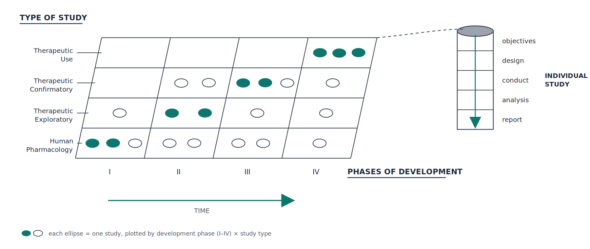
Trial phases (I–IV) against study types: the phases describe research purpose, not a rigid sequence — pharmacology, exploratory, confirmatory, and therapeutic-use studies can each span more than one phase.
3. What kind of drug is it? (the modality decoder)
When a pipeline slide says "siRNA" or "bispecific antibody," this is the decoder:
Small molecules — chemically synthesized, usually oral pills. Found by screening (irrational/empirical) or structure-based design (rational — needs the target's 3D structure).
Biologics — proteins made in living cells (bacteria, yeast, mammalian cells): monoclonal antibodies (~150 kDa — thousands of times larger than small molecules), vaccines, cytokines. Manufacturing complexity is the moat and the risk.
Antisense oligonucleotides — modified nucleic acids that bind RNA/DNA to block disease pathways.
RNAi/siRNA — short double-stranded RNA (20–25 nucleotides) that silences a specific gene.
Gene therapy — insert a missing/modified gene (ex vivo: cells removed, modified, reinserted). "Raises many unresolved ethical considerations" — and stringent regulatory scrutiny.
Cell/stem-cell therapy — replace defective tissue with grown cells.
Naming: every drug has three names — trade (Lipitor), generic/INN (atorvastatin — the WHO standard name), and the chemical name (unwieldy by design). "Ethical drugs" = prescription drugs (industry jargon, not a moral judgment). A blockbuster = >$1B/year in sales.
The investor's question:Name the modality before you model anything — it determines the manufacturing risk, the regulatory pathway (drug vs. biologic), the IP shape, and who the likely acquirer is.
Immunology: the symptom-score game
Here's the thing: nobody dies of psoriasis in a trial, so you can't power for survival. Immunology trials measure symptoms, and they measure them over months, not years, because the drugs are dosed chronically. The MoA families to know:
Anti-TNF — tumor necrosis factor blockers (adalimumab/Humira, etanercept, infliximab). The first biologics wave — they damp a master inflammatory signal in rheumatoid arthritis, Crohn's, psoriasis.
Anti-IL-17 / anti-IL-23 — interleukin blockers (secukinumab, ixekizumab; risankizumab, guselkumab). More targeted than anti-TNF; the IL-23s are now moving into Crohn's.
JAK inhibitors — janus kinase blockers (tofacitinib/Xeljanz, upadacitinib/Rinvoq). The structural difference that matters: everything above is an injectable biologic; JAK inhibitors are oral small molecules — different manufacturing economics, different IP life (generic cliff vs. biosimilar fade, see #gap-loe). They also carry FDA boxed warnings for serious infections, blood clots, and cardiovascular events.
The endpoints are standardized scoreboards: ACR20 in rheumatoid arthritis — 20% improvement in a composite of joint counts plus physician and patient assessments — and PASI 75 in psoriasis — 75% reduction in the Psoriasis Area and Severity Index (modern trials push to PASI 90, even PASI 100). These are clinical-benefit endpoints, not surrogates — clearer skin is what patients feel.
But the trap sits on the other side: biosimilar erosion. Humira was the best-selling drug in the world for years, and when US biosimilar competition finally arrived in 2023, it showed the pattern: biologics erode gradually, not all at once. When you model an immunology franchise, the question isn't if erosion comes, it's the slope of the fade and whether the company has a successor in the portfolio.
The investor's question:Is this an injectable biologic or an oral small molecule — and what does the erosion curve look like after loss of exclusivity? And does the primary endpoint measure what patients feel (PASI, ACR) or a biomarker?
Cross-link: the same surrogate-validation logic from #prasad-s2 applies here, but mostly in reverse — immunology's symptom scores are already close to what patients care about, so the trap isn't the surrogate. It's the subjective endpoint plus a gradual biosimilar fade instead of a clean cliff.
4. Before first-in-human: the IND-enabling package
Before a single human dose, the company must assemble the preclinical package. The diligence checklist for any "IND-enabling studies underway" claim:
The ICH safety battery (S1–S10): genotoxicity, carcinogenicity, reproductive toxicity, safety pharmacology (cardiovascular/CNS/respiratory), and repeat-dose toxicology.
Duration rules (Table 5.2): tox study duration scales with planned human exposure — a Phase 1 (≤2-week trial) can be filed on 2 weeks of animal tox; approval needs 6–9 months.
The 50× exposure margin: the high dose in animal tox should produce 50-fold the anticipated clinical exposure at the highest Phase 2/3 dose (small molecules; biologics per ICH S6(R1)).
The starting dose (MRSD): animal NOAEL (no-observed-adverse-effect level) → convert to human equivalent dose (HED) by body-surface area — divide the animal mg/kg dose by 12.3 (mouse), 6.2 (rat), 3.1 (rabbit/monkey), 1.8 (dog), 1.1 (mini-pig) for a 60 kg human — then apply a safety factor (typically ÷10). Worked: a 10 mg/kg mouse NOAEL → ÷12.3 → 0.81 mg/kg HED → ÷10 safety factor → ~0.08 mg/kg starting dose ≈ 5 mg for a 60 kg human. (Table 5.3 verified correct as printed against the FDA 2005 guidance.)
GLP compliance (21 CFR Part 58) — non-GLP tox data won't support an IND.
Why this matters: animal-to-human translation failure is the single biggest structural reason biotech binaries exist. A clean tox package is necessary but never sufficient.
The investor's question:When a company says "IND filing expected H2," ask: is the tox battery complete, is the exposure margin adequate, and has the pre-IND meeting happened? An IND without these is a press release, not a plan.
5. Phase economics (what each stage costs and how often it works)
The numbers you'll need later for cash-runway (Stage 3) and probability models (Stage 4) — book vintage ~2012–2014, structures stable:
Phase
Cost
Duration
Purpose
Phase 0 (microdosing)
minimal
days
100× below therapeutic dose; C-14 (radioactive carbon tracer) + AMS (accelerator mass spectrometry — detects trace amounts); de-risk before full tox
Phase I
~$10M
months–1 yr
Safety, tolerability, PK in healthy volunteers (or patients for oncology)
Phase II
>$20M
1–2+ yrs
Efficacy signal + dose finding (IIa proof-of-concept, IIb dose-ranging)
Phase III
$50–100M
3–5 yrs
Pivotal efficacy; usually 2 trials; tens of thousands of patients for vaccines
Success rates: Phase I+II combined ~20–30%; Phase II alone fell from 28% to 18% (2006–09); Phase III ~50%. The single most expensive failure is a Phase 3 that dies — $50–100M and 3–5 years burned.
The TGN1412 case (first-in-human CD28 superagonist, 2006): six healthy volunteers, cytokine storm, multi-organ failure — the standing warning that Phase 1 in biologics carries tail risk no tox package fully removes.
The investor's question:Map the company's cash against this table. A $40M-market-cap company starting a $60M Phase 3 is telling you a dilutive raise is coming — price it now, not when it's announced.
The PK/PD module, part 1 — what the drug does in the body. Part 2 (dose–response, exposure–response, and the investment connection) continues in Stage 2.
1. What PK and PD even are
When a company announces "positive Phase 2 results," they're really making two claims at once:
PK — pharmacokinetics: what the body does to the drug. How fast it gets in, how much reaches the blood, how fast it leaves.
PD — pharmacodynamics: what the drug does to the body. How strongly it turns its biological target on or off, and what the patient feels or measures as a result.
Investors often hear "PK" and tune out. Don't. A huge share of clinical failures are PK failures wearing PD costumes: the drug picked a dose that was never going to put enough drug at the target long enough. The trial failed not because the molecule was wrong, but because the dosing plan was wrong. That is an investment risk you can actually read for in a press release — if you know what to look for.
The plain-English picture: think of drug development as delivering water to a house fire. PK is the plumbing — pipe diameter (absorption), tank size (distribution), drain rate (clearance). PD is the fire going out. A failed trial might mean the fire extinguisher was useless (bad drug) — or it might mean the water never arrived at the fire (bad PK). These fail differently, and the evidence looks different.
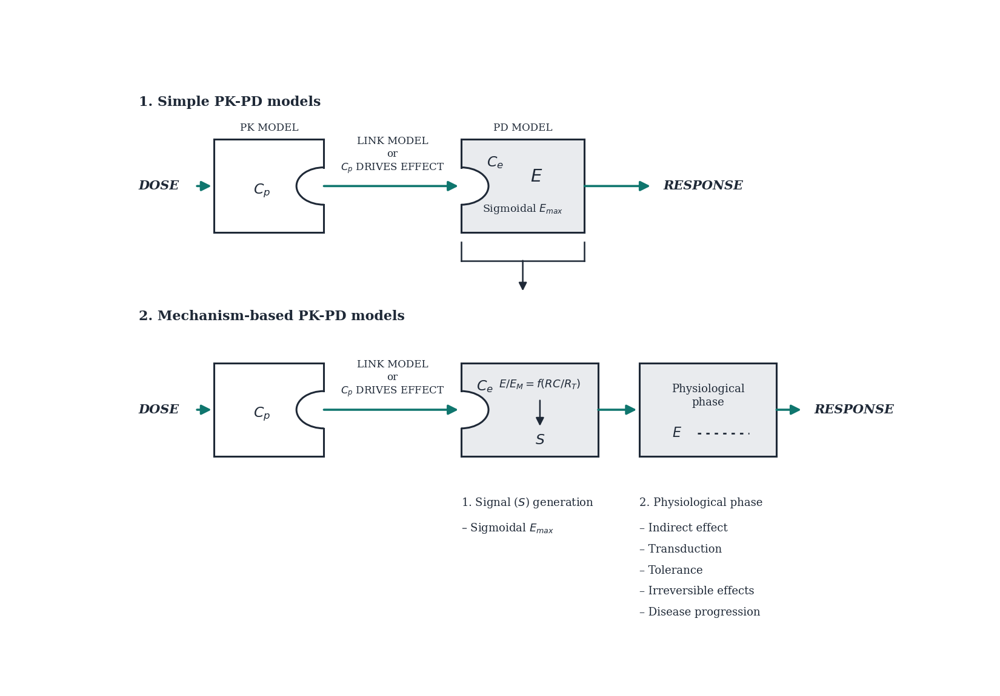
How PK and PD connect: DOSE → blood concentration (Cp) → effect-site concentration → RESPONSE. Simple models link Cp straight to response; mechanism-based models add the biology in between.
2. Absorption and bioavailability: not every pill you swallow gets in
When a pill is swallowed, it must survive stomach acid, dissolve, cross the gut wall, and get past the liver (which often destroys a chunk of it on first contact — called first-pass removal) before it ever reaches the bloodstream.
Bioavailability is the fraction of the dose that actually makes it into the blood. It ranges from 0% to 100%. A drug with 30% bioavailability means you need roughly three times the IV (intravenous, into a vein) dose as a pill to get the same amount in the blood. This is routine chemistry arithmetic, and it matters commercially: an oral version of an IV drug is worth a fortune in convenience, but only if bioavailability is good enough to keep the dose reasonable.
Why it matters for investors:
A company switching its drug from IV infusion to a pill is betting on bioavailability. Watch for the actual number in early-phase data.
Food effects ("take with food" vs. "on an empty stomach") come from absorption changes — and they constrain the label and the commercial story.
Drug interactions at the gut wall can multiply or destroy absorption. The classic cautionary tale: grapefruit juice blocks an intestinal enzyme (CYP3A4) and sent one drug's blood levels up nine-fold. Interactions like these are why labels grow warning sections — and why some approved drugs get boxed warnings (the FDA's strongest label warning, literally printed in a black box) years later.
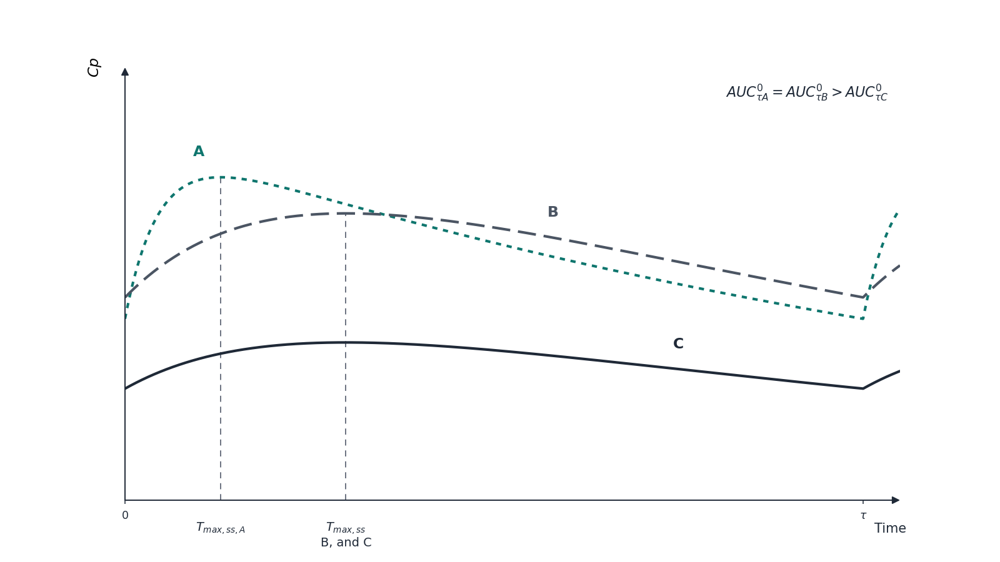
Same dose, three formulations, three different blood profiles — bioavailability (F = the fraction absorbed) and absorption speed (ka = how fast absorption is) decide the peak and the total exposure.
3. Half-life: the clock every dosing schedule runs on
Half-life is the time it takes for drug levels in the body to fall by half. A 6-hour half-life means: after 6 hours, half remains; after 12, a quarter; after 24, one-sixteenth.
The practical rule used across medicine: it takes about 4–5 half-lives to reach steady state (the plateau where each new dose just replaces what was eliminated), and the same ~4–5 half-lives to wash the drug out after stopping.
Why it matters for investors:
Dosing frequency is commercial destiny. A drug with a 2-day half-life can be dosed weekly; a 6-hour one needs daily (or twice-daily) pills. Once-daily dosing dramatically beats twice-daily on patient compliance — and compliance is efficacy in the real world.
Trial designs are built on the 4–5 half-lives rule. When a press release says "patients were assessed at week 4," check: had the drug even reached steady state? If the drug's half-life is a week and they measured at two weeks, they measured mid-ramp, not the plateau.
Some drugs cheat the half-life clock. Aspirin leaves the body in about 15 minutes — yet it's dosed once daily, because it permanently disables its target (an enzyme in platelets) until new platelets are made. Proton-pump inhibitors (omeprazole) have half-lives under an hour but are also once-daily for the same reason: they destroy their target. These irreversible mechanisms are a competitive advantage — the drug's effect outlasts its presence.
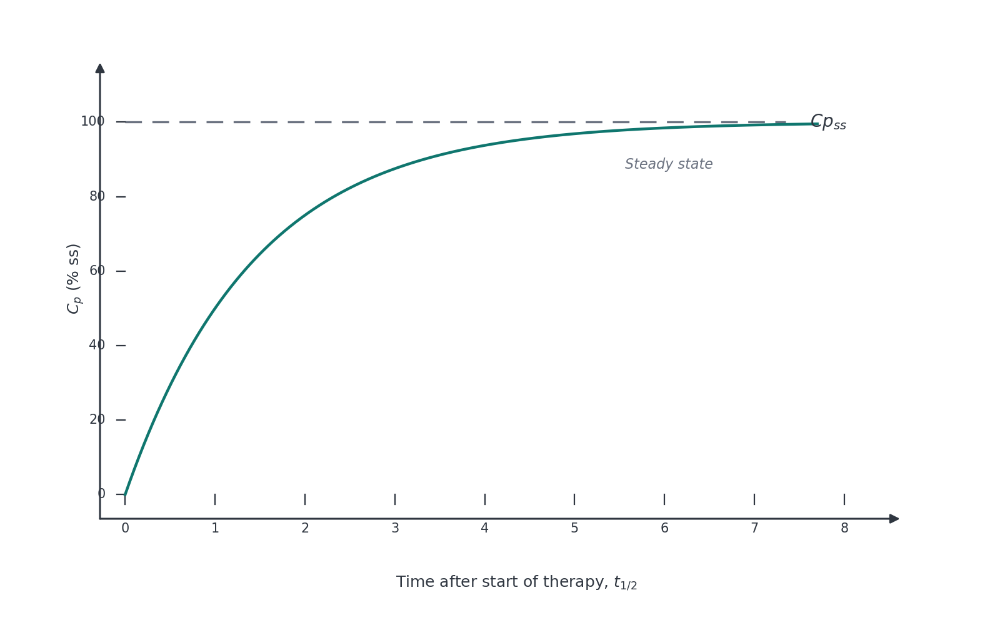
The 4–5 half-lives rule: drug levels climb toward a plateau (steady state) on a clock set entirely by the half-life.
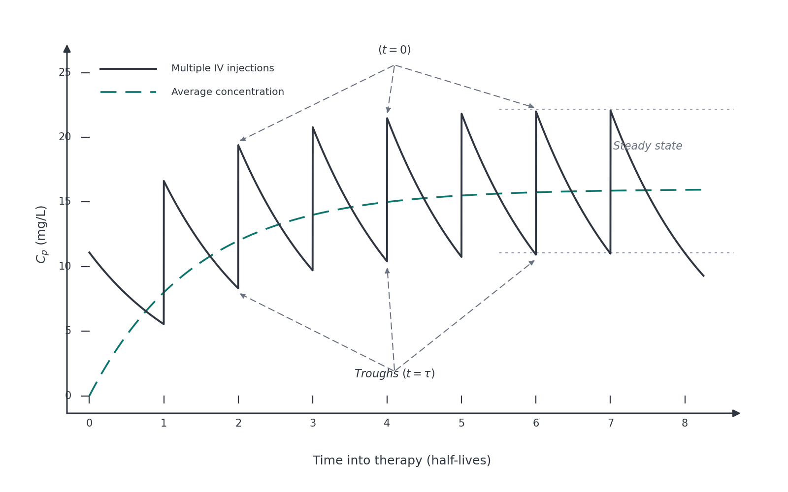
Repeated dosing: each dose stacks on what's left from the last until peaks and troughs stabilize — accumulation in action.
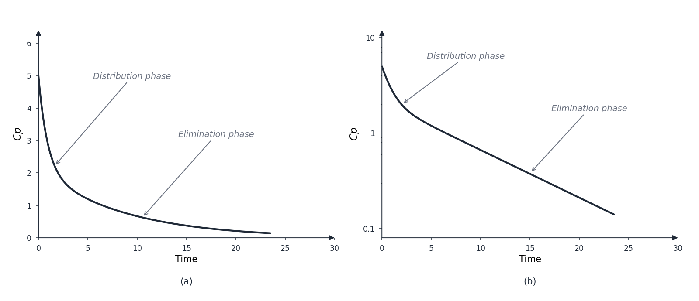
One injection, two phases: a steep distribution phase, then the straight-line elimination phase on a log scale — that line's slope IS the half-life.
4. Clearance and volume of distribution: the two numbers that decide the dose
Two body-level numbers determine nearly everything about how a drug behaves:
Clearance (CL) — how fast the body removes the drug (think: drain size). Units like liters per hour.
Volume of distribution (Vd) — how widely the drug spreads through the body's tissues (think: tank size). Some drugs stay mostly in the blood; others soak into fat and muscle.
These two numbers combine into the most useful equation in this whole field:
Half-life ≈ 0.693 × Vd ÷ CL
(0.693 is just the arithmetic of halving — the number ln 2. Don't memorize it; the shape of the formula is what matters.)
Translation: the drug sticks around longer if it spreads widely (big tank) or drains slowly (small drain).
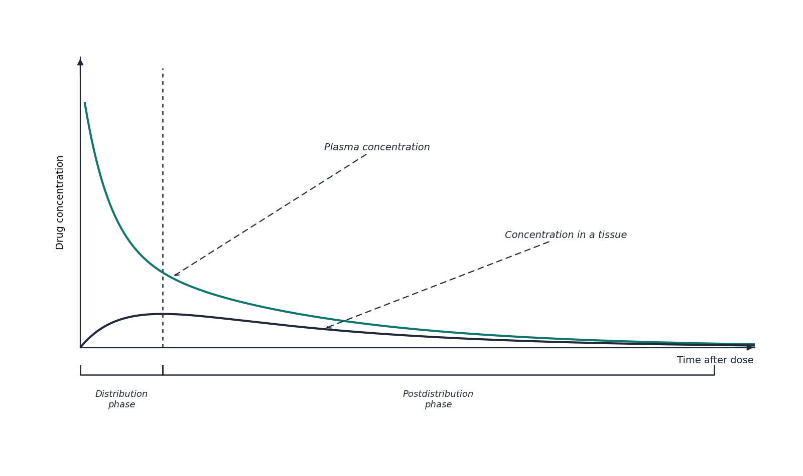
After an IV dose, drug floods out of blood into tissues (distribution phase), then blood and tissue levels fall together (postdistribution phase) — this is what volume of distribution describes.
Why it matters for investors:
Clearance sets the maintenance dose. The average drug level in a patient on chronic therapy equals the daily dose divided by clearance. So if a company knows its drug's clearance and knows the target blood level, the dose is basically arithmetic. When a trial tests a dose far below what this arithmetic suggests, ask why.
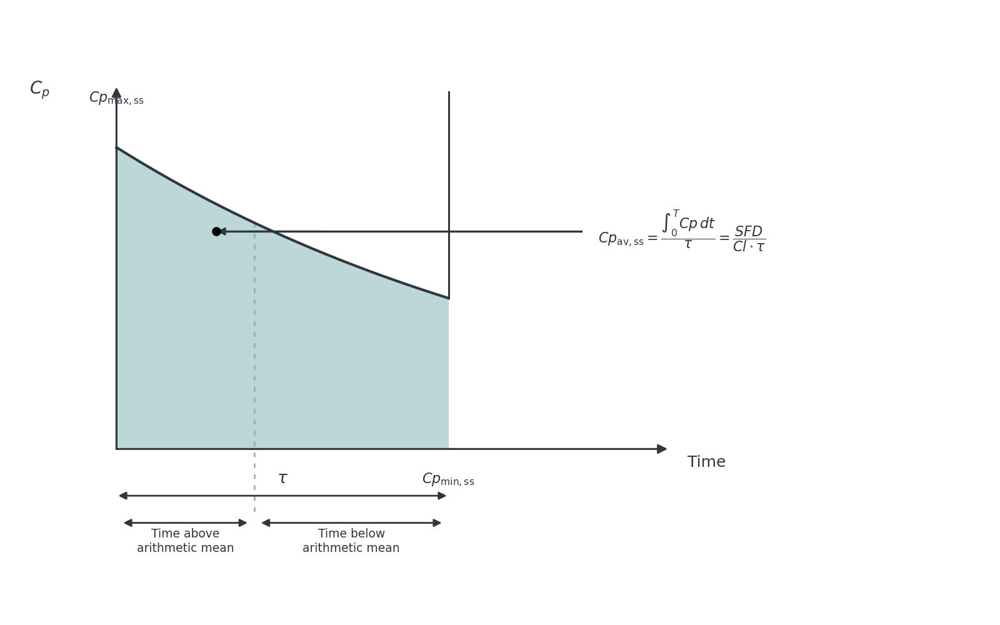
Average steady-state level = dose ÷ (clearance × dosing interval). Note it's the area under the curve (AUC) divided by time — not the midpoint of peak and trough.
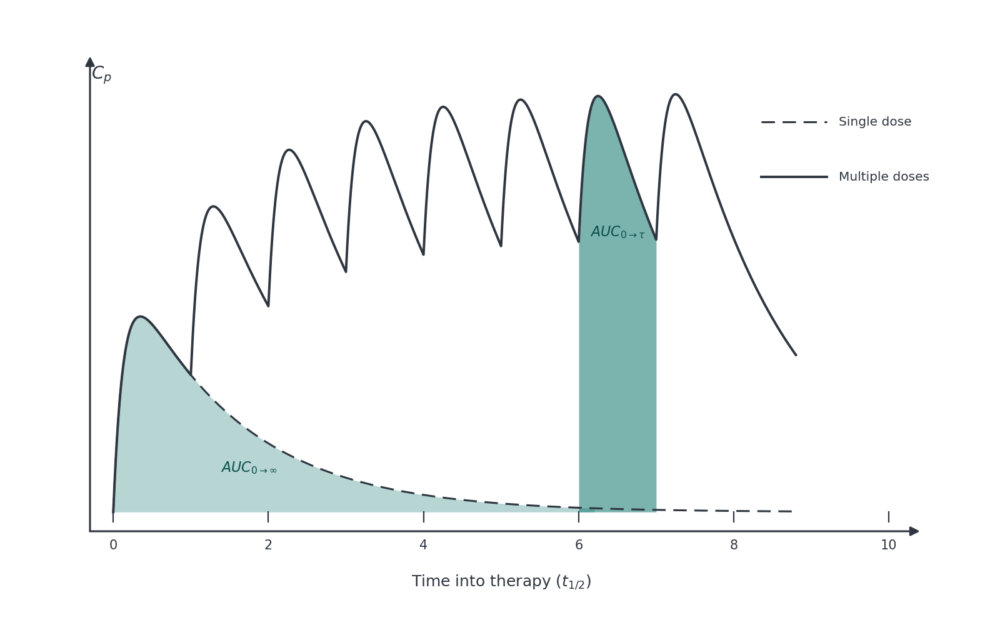
Handy identity: the AUC over one steady-state dosing interval equals the AUC from zero to infinity after a single dose.
Kidney or liver disease changes clearance. Trials in elderly or sick populations can show weird results simply because clearance is lower — the same dose gives higher drug levels. Regulators know this; label sections about "dose adjustment in renal impairment" come straight from this math.
Drug–drug interactions are clearance events. When one drug blocks the liver enzyme that clears another, clearance drops and levels rise — sometimes 5–20×. Many post-marketing disasters and label restrictions (e.g., statin dose caps when combined with certain antibiotics) are clearance stories. A new drug that isn't cleared by the one major liver enzyme everything else uses is more interaction-proof — a real commercial edge.
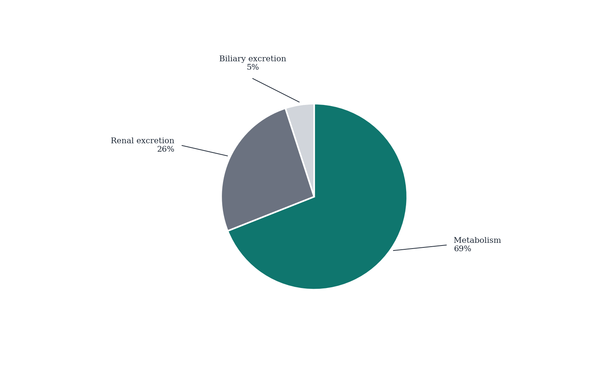
Where drugs actually go: for the top 200 drugs, metabolism dominates elimination — which is why liver-enzyme interactions matter so much.
High-extraction vs. low-extraction drugs behave differently, and the textbook devotes a whole chapter to it. A high-extraction drug is grabbed by the liver so aggressively that its clearance is set by blood flow, not enzyme activity — meaning liver enzyme interactions barely matter, but anything changing blood flow does. A low-extraction drug is the opposite: enzyme interactions can be devastating. Which bucket a company's drug falls in tells you what kinds of interaction studies the FDA will demand.
2. The question: endpoints — what the trial chose to measure
Every trial has one primary endpoint — the single question the trial was designed to answer, and the one the sample size was built around. Everything else is secondary. This hierarchy is the most important thing in the protocol.
Hard endpoints (death, heart attack, stroke) are unambiguous and persuasive. Surrogate endpoints (blood pressure, tumor shrinkage, cholesterol, CD4 count) are faster and cheaper — and dangerous. The rogues' gallery: CAST (anti-arrhythmics suppressed arrhythmias but increased deaths), ILLUMINATE (torcetrapib improved cholesterol numbers but increased deaths), and a cancer drug that shrank tumors without extending survival. A surrogate is only valid if it captures the full effect of the drug — including the harms.
Composite endpoints bundle several events (e.g., "death, heart attack, or hospitalization") to get more events with fewer patients. The trap: the composite can be "positive" while driven entirely by its softest component. In MIRACL the win rode the least serious of four components; in EXPEDITION the composite showed benefit while death trended the wrong way. Get the component breakdown — every time.
Endpoint switching is endemic: over 60% of trials in one survey changed their primary endpoint between protocol and publication. If the headline endpoint wasn't the registered primary, you're reading an exploratory analysis dressed as a conclusion.
Quality-of-life endpoints need a different bar: a "statistically significant" health-related quality of life (HRQL) benefit that patients can't feel is worthless. In the Women's Health Initiative, hormone therapy showed small but significant quality-of-life (QoL) gains at 1 year that vanished by year 3 — the harms were real, the benefits weren't clinically meaningful. Ask for the minimal important difference, not just the p-value.
The investor's question:Is the headline result on the prespecified primary endpoint? Is that endpoint hard or surrogate, and if composite, did every component move the right way?
3. Study designs — the shapes a trial can take
Randomized controlled trial (RCT). Patients randomly assigned to drug or control. The gold standard — the only design that balances both known and unknown prognostic factors. Everything below is a compromise.
Single-arm trial with historical controls. Common in rare diseases and accelerated filings. Fragile: the PRAISE heart-failure trials ran the same protocol with the same investigators and got inexplicably different placebo-group event rates. A "benefit vs. historical rate" claim is only as good as the historical comparator — check that entry criteria and era match.
Crossover. Each patient gets both treatments in sequence — efficient (needs ~2.4× fewer patients in some settings) but only valid if the first treatment's effect washes out completely. Can't test cures or death.
Factorial. Tests two interventions at once (drug A ± drug B). Efficient, but if the drugs interact, the main effects get muddled.
Noninferiority. Doesn't try to prove the drug is better — tries to prove it's not worse than standard care by more than a prespecified margin (call it δ, "delta"). Common for "me-too" drugs and biosimilars. The traps: a wide margin (relative risk 1.2–1.4 means up to 40% worse can still "win"), sloppy conduct favors the noninferiority claim (dropouts make arms look alike), and the whole thing assumes the control drug works as well today as in its original trials. Prasad's audit of oncology NI trials: 47% chose the margin arbitrarily ("it sounded about right"), accepted HR margins ran up to 1.43, and 96% of industry-funded NI trials (55/57) got the desired result — when a design delivers the sponsor's answer 96% of the time, question why it's being run. A noninferiority win against a marginal drug at a wide margin (e.g., lenvatinib vs. sorafenib at "60% as good") is a marketing event, not a medical one.
Crossover (oncology). Control-arm patients may receive the experimental drug after progression. The rule: mandatory when moving a proven drug to an earlier line (KEYNOTE-024, pembrolizumab first-line — the right design), but devastating in the first efficacy trial of a novel drug — it makes overall survival uninterpretable and can mask harm as well as benefit. And a trial that should allow crossover but doesn't is invalid: in LATITUDE/STAMPEDE, control-arm prostate patients were denied abiraterone/enzalutamide after progression though it was standard of care. Always ask which direction the crossover runs and whether it matches the question being asked.
Phase 2 → Phase 3 shrinkage. Response rates run 12.9 percentage points hotter in phase 2 than in the subsequent randomized trial of the same drugs (Zia et al.) — regression to the mean plus selection. The graveyard: selumetinib, iniparib, PROSTVAC all posted dramatic phase 2 survival/efficacy signals, then zero in phase 3. Haircut every small or single-arm phase 2 effect size before it enters your model.
Adaptive. The trial modifies itself as data accrue — sample size re-estimation, dropping losing arms, seamless phase II/III. Legitimate when preplanned with statistical penalties; mid-trial "efficiency" amendments announced in press releases often signal the trial is under stress.
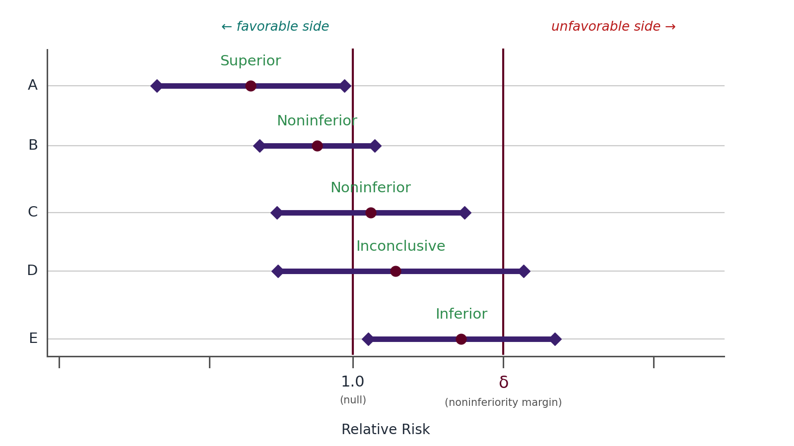
Reading a noninferiority result: A = superior, B/C = noninferior (the CI’s upper bound stays below the margin δ, i.e. on the favorable side of the δ line), D = inconclusive (underpowered), E = inferior. The margin δ is doing all the work — always ask how wide it is.
The investor's question:What design is this, and what does that design assume? A single-arm trial assumes the historical comparison is fair. A noninferiority trial assumes the margin is clinically meaningful. Name the assumption, then check it.
Rare disease trials: what changes when n is small
Everything you learned about trial design assumed hundreds of patients. In a disease with 2,000 patients worldwide, you can't run a 1,000-patient trial — there aren't enough patients, and the ones who exist are scattered across continents. Three things follow:
Single-arm trials become the norm, not the exception. You enroll whoever you can and compare outcomes against a natural-history or historical control. The single-arm warning in #friedman-s3 applies with full force: the comparison is only as honest as the historical comparator — check that entry criteria and era match.
Surrogate endpoints are the standard deal. A biomarker or functional measure (enzyme levels, a six-minute walk test, a lung-function number) routinely stands in for the clinical outcome, typically under accelerated approval with a confirmatory trial promised. Regulators formally acknowledge the small-n reality: EU orphan guidance allows trials that would otherwise be considered underpowered, provided they still demonstrate statistical significance.
The investor's question:Given the disease's actual population, is this design the best that was achievable — or a shortcut the sponsor chose? If approval rests on a surrogate, is the confirmatory trial real, enrolled, and powered?
Cross-link: the same surrogate-validation logic from #prasad-s2 applies here, but the verdict flips — in rare disease the surrogate isn't a corner the sponsor cut, it's the only feasible option. Judge whether the surrogate is biologically plausible and whether FDA accepted it as "reasonably likely" to predict benefit, not whether a full randomized trial exists.
4. The population — who got in, and who the results apply to
Eligibility criteria define the study population; the enrolled patients are the study sample. The trial proves things about the sample — every step outward is an inference.
Enrichment is deliberate: enroll high-risk or biomarker-selected patients to get more events with fewer patients (ROCKET-AF required three stroke risk factors). Legitimate — but the real-world effect in an unselected population will be smaller.
Run-in phases screen out likely dropouts before randomization (PARADIGM-HF discontinued 2,079 of 10,521 patients during run-in). Cleaner trial, narrower applicability.
The generalizability gap: applying typical trial eligibility to 400 hospitalized ulcer patients, only 29% would have qualified — and nearly all the deaths occurred among the ineligible. Trial patients are volunteers: healthier, more compliant, more closely monitored than real patients.
Recruitment reality: the SHEP hypertension trial contacted ~450,000 people to enroll 4,736 — a 1.1% yield. When a company widens entry criteria mid-trial to fix slow enrollment, it imports lower-risk patients, dilutes event rates, and can force a sample-size increase.
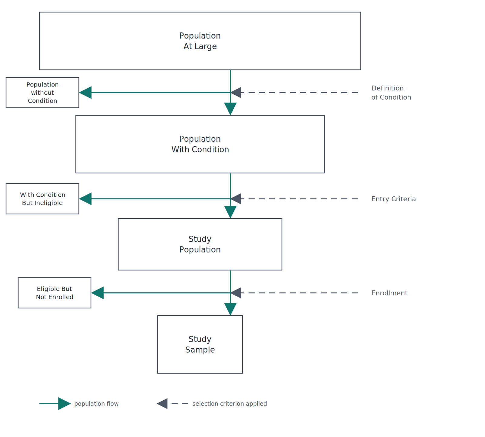
From the general population to the study sample: each filter (disease definition, eligibility criteria, enrollment) narrows who the results actually describe. The trial proves things about the inner circle.
The investor's question:How selected is this population? A win in a highly enriched, run-in-purified population is real — but model commercial uptake against the enrollable population, not the diseased population.
Basket, umbrella, and platform trials
Not every trial is the classic two-arm Phase 3. Three newer designs show up constantly in oncology readouts — know which one you're looking at:
Basket trial: one drug, multiple tumor types sharing a biomarker (e.g., all NTRK-fusion cancers). Efficient for rare mutations; each "basket" is a tiny single-arm cohort — read the per-basket n before getting excited about the pooled number.
Umbrella trial: one tumor type, multiple biomarker-defined arms testing different drugs (e.g., lung cancer split by mutation, each matched to a targeted agent).
Platform trial (master protocol): perpetual infrastructure where treatment arms enter and leave on pre-set rules (I-SPY 2 in breast cancer is the prototype). Fast and adaptive — but early arm-level readouts are exploratory signals, not registrational proof.
The investor's question:Is this readout from a registrational arm or an exploratory basket — and is the per-arm sample size big enough to believe?
5. Randomization and blinding — the machinery of credibility
Randomization is what makes a trial a trial. Done properly (central computerized system, allocation concealed until enrollment), it balances prognostic factors you can't even measure. Done poorly — predictable sequences, envelopes, "we randomized" with no method named — it doesn't.
In small trials (the typical biotech phase II, n = 50–200), check whether randomization was stratified (randomized separately within subgroups, e.g., by disease severity, so each arm gets a fair mix) on the 2–3 factors that actually drive the endpoint. Unstratified small trials are where accidental baseline imbalance lives — and a "positive" readout built on a favorable imbalance doesn't replicate.
Blinding is not one thing: a survey found 15 different operational meanings of "double-blind" in practice. Always ask who was blinded — participants? investigators? endpoint adjudicators?
Blinds break: drugs with signature side effects (tremor, GI effects, lab changes) unblind patients and investigators. The SPORTIF trials ran the same drug comparison single-blind (risk ratio 0.71) and double-blind (risk ratio 1.38) — the result flipped with the blinding.
For subjective endpoints (pain, depression, CNS), an unblinded or single-blind phase II "win" deserves a steep credibility discount.
The investor's question:How were patients randomized, and who was actually blinded? "Centralized interactive web response system" is the green flag. Vague "patients were randomized" with no method is a yellow flag. A signature side effect with no described mitigation means the blind is probably broken.
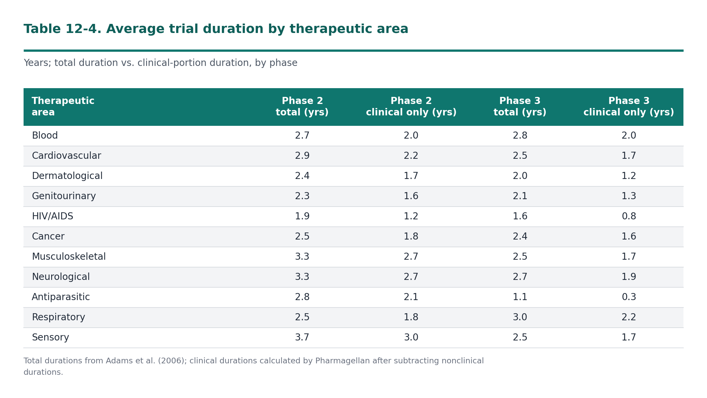
How long trials actually take, by therapeutic area — Phase 2 runs ~2–3.7 years, Phase 3 ~1.1–3 years (total durations). Useful when judging whether a company's guided readout date is realistic. 2006).
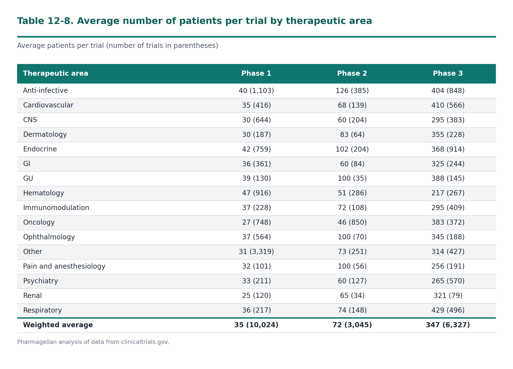
What "big" means: average patients per trial by area and phase, with trial counts in parentheses. A 300-patient Phase 3 is large in psychiatry, routine in cardiology.gov.
The FDA machinery
IND (Investigational New Drug) — permission to test in humans. FDA can place a clinical hold if safety signals emerge.
NDA (small molecules) / BLA (biologics) — the marketing application. Includes all clinical data, manufacturing info, proposed label.
CRL (Complete Response Letter) — a rejection. Can be about efficacy, safety, or manufacturing — always check which.
AdCom (Advisory Committee) — public panel of outside experts; FDA follows their vote ~80% of the time but isn't bound to. The briefing documents, released ~2 days before, are often the real catalyst.
PDUFA date — the FDA's deadline to act on an application. Hard calendar events; the single most tradeable regulatory catalyst.
SPA (Special Protocol Assessment) — written FDA agreement that a trial's design can support approval. Rescinded <1% of the time — a meaningful de-risking signal when disclosed.
sNDA / sBLA — supplements for new indications of an already-approved drug. Shorter reviews than original applications, same binary-event dynamics: the stock still gaps on the decision.
Day 74 letter — FDA's early filing-review communication, ~74 days into review. It flags whether an AdCom is planned and lays out the review timeline — the first official read on how FDA is framing the application, months before the PDUFA date. Worth watching for in company updates.
Reading a CRL: the deficiency type is the trade
A Complete Response Letter is a rejection with instructions — FDA lists deficiencies, the sponsor fixes and resubmits. What matters for sizing the delay (and the selloff) is the kind of deficiency:
Manufacturing / CMC deficiencies — the most common and the most fixable. Facility inspection issues, process validation. Timeline: months, not years, if the fix is bounded. Real example: a BLA extended for manufacturing-facility remediation after a pre-license inspection, with no efficacy or safety deficiencies identified and launch still guided — the drug works, the factory needed work. A manufacturing CRL and a clinical CRL are completely different events.
Clinical deficiencies — FDA wants another trial or more data. This is the bad kind: expensive, slow, and it re-opens the efficacy question.
Labeling / REMS issues — usually resolved inside the resubmission cycle. Annoying, not thesis-breaking.
Resubmission classes tell you how seriously FDA views the fix: Class 1 (minor — 2-month review clock) vs Class 2 (major — 6-month clock). A Class 1 manufacturing CRL is a delay; a Class 2 clinical CRL is a new trial.
Approval isn't the whole market — the label is
The label (approved indications, warnings, boxed warnings) determines commercial reality, and it's negotiated after the efficacy question is settled:
A narrow label limits the market even with approval in hand. A drug approved for first-line use but excluding the highest-risk patient subgroup — the group with the most unmet need — is a smaller commercial event than the headline suggests.
Watch label negotiations as their own catalyst: boxed warnings and indication restrictions reprice the commercial case without touching the approval itself.
The investor's question: does the label cover the patients the bull case assumed, or did FDA carve out the core of the market?
Special pathways (the accelerators)
Accelerated Approval — approval on a surrogate endpoint "reasonably likely" to predict benefit, with confirmatory studies required after. Faster, but the confirmation trial is a second binary.
Breakthrough Therapy — intensive FDA guidance from early development. No change to the approval bar.
Fast Track — more FDA meetings + rolling submission. No change to the bar.
Priority Review — 6-month review clock instead of 10. No change to the bar.
Notice the pattern: most "special" designations speed up process, not standards. Only Accelerated Approval changes what evidence can support approval — and it does so by accepting more uncertainty, which becomes your risk.
6. The regulatory path (IND → NDA → approval)
IND (Investigational New Drug): the 12-item application that must exist before human trials. After submission, the FDA has 30 days to object — silence is clearance ("IND cleared," "may proceed"). Grounds for clinical hold: unreasonable risk, unqualified investigators, misleading/bogus data, insufficient information to assess risk.
NDA/BLA content (Form 356h, 20 items): index, labeling, summary, chemistry/manufacturing + methods validation, nonclinical pharm/tox, human PK, clinical microbiology, clinical data, safety update, statistics, case report tabulations, patent information and certifications, establishment description, debarment and financial disclosures, user-fee cover sheet (condensed — full 20-item list in the notes). The CMC and statistics sections are where applications most often stall.
Review clocks (the book counts 12 months standard / 6 months priority from submission, sponsor-response time included; today's convention counts 10/6 months from the 60-day filing date — same clock, different ruler):
Standard review: full clock. Priority review: 6 months, for drugs offering significant improvement.
Expedited programs: Fast Track (facilitated development + rolling review), Breakthrough Therapy (intensive guidance for substantial improvement on a serious condition), Accelerated Approval (surrogate endpoint + mandatory confirmatory trial), Priority Review (shorter clock). Orphan drugs: <200,000 US patients; 7-year exclusivity plus incentives.
EU: centralized procedure with a 210-day review (150-day accelerated); clinical trial applications run on 60/90-day clocks.
The investor's question:Every regulatory catalyst is a clock: IND 30-day, NDA 10/6-month review, AdCom ~6 weeks before PDUFA. Map each holding to its clock — and remember the CMC section kills more applications than the efficacy section.
10. The regulatory path — how a trial becomes a drug
IND → phases → NDA/BLA. Before human testing, the sponsor files an Investigational New Drug application (the FDA gets 30 days to object). After (typically two) phase III trials comes the New Drug Application. Standard FDA review runs 10 months; priority review runs 6.
Expedited programs are covered in the regulatory-mechanics section above — the investor point: designation announcements are catalysts with their own timelines, and accelerated approval always carries a mandatory confirmatory trial as a second binary. Ponatinib (accelerated approval on blood-count responses) was suspended for vascular thromboses; bedaquiline was approved despite a death imbalance (10 vs 2) because resistant TB had no options.
Devices face a lower bar: many are cleared via 510(k) "substantial equivalence" to an existing device, sometimes with no clinical trial at all. Don't apply drug-trial expectations to device readouts.
Biosimilars aren't generics. You can't prove two biologics identical, so biosimilars require clinical testing — and biologic franchises keep a structurally stronger post-exclusivity moat than small molecules. That matters when you learn to value the company (Stage 4).
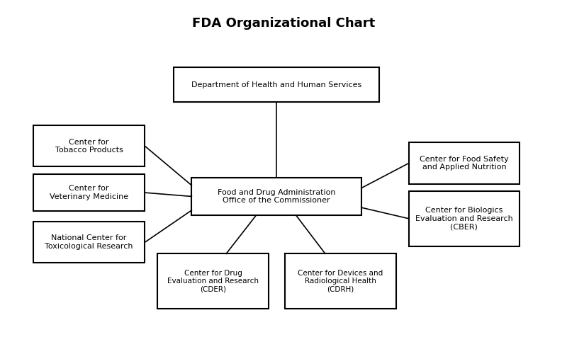
The FDA's centers: drugs (CDER), biologics (CBER), and devices (CDRH) are reviewed under different statutory standards. The first question for any regulatory milestone is which center — and which rulebook — applies.
The investor's question:Where is this program on the regulatory map? Map every holding to IND → readout → NDA → review clock, and flag the expedited-program designations — they're catalysts with their own timelines.
11. Reading a protocol like a trialist — the ten-minute checklist
For any trial that matters to your capital, run this sequence against the protocol (ClinicalTrials.gov) and the press release:
What phase, and what was it designed to prove? (Safety? Signal? Efficacy?)
What is the prespecified primary endpoint — and is the headline on it? (Hard, surrogate, or composite? If composite, did every component move the right way? Check the CONSORT checklist (the standard reporting checklist journals require for trial publications) against the publication: missing allocation-concealment details, absent baseline tables, no clear ITT numbers — all signal the headline may not survive FDA review.)
What design, and what does it assume? (Historical controls? Noninferiority margin — how wide? Adaptive amendments — why?)
Who was enrolled, and who wasn't? (Enrichment? Run-in? How selected vs. the real-world population?)
How was randomization done, and who was blinded? (Central system? Stratified? Signature side effects unaddressed?)
Was it big enough? (Event-rate and effect-size assumptions — rosy or realistic? Dropout accounted for?)
Is the headline ITT? (Or per-protocol / "modified ITT"?)
How much data is missing, and is it differential? (Off drug = off study?)
What does safety actually rule out? (Exposure size × duration vs. the rare-event math.)
Where on the regulatory map? (IND → NDA clock; expedited designations; confirmatory trial still owed?)
If a trial survives all ten, it's worth your attention — and your capital.
Module covers: trial phases (§1), endpoints incl. HRQL (§2), study designs (§3), population/enrichment (§4), randomization & blinding (§5), sample size (§6), interim monitoring (§7), analysis discipline incl. regional heterogeneity (§8), safety (§9), regulatory path (§10), protocol checklist (§11). Companion: the statistics module (reading results) and the PK/PD module (what the drug does in the body).
7. Manufacturing: the risk nobody models
CMC (chemistry, manufacturing, controls) is the most underappreciated binary in biotech:
The escalation path: FDA Form 483 (inspection observations) → warning letter → consent decree. The book's cases: Schering-Plough $500M, GSK $650M consent decrees — manufacturing failures with nine-figure consequences.
Biologics are harder: living-cell manufacture means batch-to-batch variability is intrinsic; virus clearance requires ≥2 distinct clearance steps, >4 log reduction each, >12 log total.
Cleaning validation (MACO): maximum allowable carryover between products — quantified, not assumed.
Quality culture: pharma manufacturing operates at 2–3 sigma vs. Six Sigma's 3.4 defects per million — the industry's own book admits the gap.
The investor's question:For biologics and complex manufacturing (cell therapy, ADCs): who makes it, where, and has the facility passed inspection? A great readout with an uninspected facility is a delayed launch — and delay inside a finite exclusivity window is destroyed value.
Companion sections: the trial-design module (phases, GCP, IND mechanics), the valuation module (patent cliffs, exclusivity windows, LoE (loss of exclusivity) modeling), the PK/PD module (what the drug does in the body).
Patents vs. exclusivity — what actually protects the revenue
Two different shields protect a drug's revenue, and investors constantly confuse them. Patents protect the invention: 20 years from the filing date, with up to 5 years of patent-term restoration for time lost in FDA review (capped at 14 years of effective protection after approval). Regulatory exclusivity is granted by the FDA and blocks competitors regardless of patents: 5 years for a new chemical entity (NCE), 7 years for an orphan drug, 12 years for a biologic, 3 years for a new clinical investigation supporting a change, plus 6 months of pediatric exclusivity that stacks on top of either.
The Orange Book (FDA's Approved Drug Products with Therapeutic Equivalence Evaluations) lists every patent and exclusivity covering each approved small-molecule drug. Before modeling any loss-of-exclusivity date, look up the drug here — the company's "patent estate through 2038" slide deck claim is marketing; the Orange Book is the record.
Hatch-Waxman (1984) created the generic pathway: a generic files an ANDA showing bioequivalence, no new trials needed. Against listed patents it files certifications — Paragraph IV ("your patent is invalid or we don't infringe") triggers a 30-month stay of approval while the patent fight plays out, and the first Paragraph IV filer gets 180 days of generic exclusivity. Paragraph IV challenges are why small-molecule cliffs are so steep.
Biosimilars (biosimilar approval pathway.">BPCIA, 2010) travel a different road: the 351(k) pathway requires showing "highly similar" with no clinically meaningful differences — some clinical testing, not just bioequivalence. The "patent dance" (a structured patent-exchange process) and the higher bar for interchangeability (pharmacy-level substitution) are why biologic erosion is gradual, not cliff-like.
IPR (inter partes review) lets anyone challenge a patent's validity at the USPTO's Patent Trial and Appeal Board on a lower burden of proof than federal court. Watch IPR filings against a key patent — an instituted IPR is a leading indicator the patent may not survive.
The investor's question:For the revenue that matters: which patents and which exclusivities cover it, when does each expire, and has anyone filed a Paragraph IV or IPR against the key ones?
I can describe what each phase is trying to prove and roughly how big it is
I know the IND → NDA/BLA → approval-or-CRL sequence cold
I can explain what an AdCom is and why its briefing documents matter
I know which special pathways change the evidence bar (only accelerated approval) vs just the timeline
I can explain what PK/PD tells you about dose-selection risk
I know the difference between a patent and regulatory exclusivity, and where to check each
I can name the IND-enabling package components and what the CMC section covers
Do this now
Pull up any biotech pipeline slide and name the modality and trial phase of the lead program
Find one upcoming PDUFA date on the FDA calendar for a drug you follow
Stage 1 quiz
Tap an answer — you get the explanation immediately. Get all 5 right to check off the quiz below.
1. A company announces a "successful Phase 1." What does that tell you about whether the drug works?
2. Which phase transition is the hardest — the valley of death?
3. Which special FDA designation actually changes the evidence bar, rather than just speeding up the timeline?
4. A patent lasts 20 years from filing. How long is FDA regulatory exclusivity for a new biologic?
5. A drug has 30% oral bioavailability. Roughly how much bigger must the pill dose be than the IV dose for the same blood exposure?
Stage 1 quiz: all 5 answered correctly
STAGE 2
Reading Clinical Data
The press release is marketing. The data is the truth. Learn to tell them apart.
OS (overall survival) and PFS (progression-free survival) — the gold standards; hard to spin.
Surrogate endpoints — biomarkers or intermediate measures (tumor shrinkage, a lab value) accepted as reasonably likely to predict real benefit. Useful, but a surrogate that doesn't translate to clinical benefit is a classic trap.
Endpoint switching is a red flag. If the primary endpoint at readout differs from the one registered on ClinicalTrials.gov at trial start — or the press release leads with a secondary endpoint while burying the primary — assume the primary didn't deliver. Always check the registry entry.
CNS: the brain's delivery problem and the endpoint problem
Neurology is where good science goes to die slowly and expensively. Two structural reasons:
The blood-brain barrier. The brain is fenced off by a tight layer of endothelial cells that keeps most molecules out of the central nervous system. Monoclonal antibodies — the workhorse modality of modern biotech — cross it very poorly, so CNS drugs skew toward small molecules, and any biologic program aimed at the brain has a delivery problem before it has a biology problem. Delivery technologies (shuttle constructs, intrathecal injection) are themselves unproven, carrying their own risk. If a company pitches a CNS biologic without explaining how it gets into the brain, that's the first question to ask.
The endpoints are slow and subjective. Alzheimer's trials measure cognition with instruments like ADAS-Cog — a cognitive test battery turned into a score (word recall, naming, following commands, orientation) — and CDR-SB — the Clinical Dementia Rating–Sum of Boxes, where a clinician rates six domains (memory, orientation, judgment, community affairs, home life, personal care) and adds them up. These measure what patients and families care about, which is good. But cognitive decline moves slowly, so phase 3 trials run 18 months to two years per readout, enroll thousands of patients, and cost accordingly. And the field has a notorious placebo response problem: in neuro and psych trials, patients on placebo routinely improve — sometimes enough to wash out a real drug effect — which is one reason small phase 2 wins evaporate in phase 3. A cognitive endpoint in a small, short trial is a shaky foundation; haircut it harder than you would an oncology response rate.
The investor's question:How does this drug get past the blood-brain barrier, is the phase 3 powered for a slow-moving cognitive endpoint, and did the phase 2 effect survive any adjustment for placebo response?
Cross-link: the same surrogate-validation logic from #prasad-s2 applies here — except in neuro the temptation runs the other way: reaching for a biomarker shortcut (amyloid clearance) instead of waiting for the slow cognitive endpoint. The amyloid case study (#gap-amyloid) is that story.
1. The endpoints — what cancer trials actually measure
Cancer trials measure a small family of endpoints. Learn them cold; every oncology press release is written in this language.
Overall survival (OS) — time from randomization to death from any cause. The endpoint that matters to patients: did the drug help people live longer? Hard, unambiguous, ungameable. Everything below is a substitute.
Progression-free survival (PFS) — time until the first of: death, a new tumor lesion on scans, or existing tumors growing >20% from their smallest size. A composite surrogate. Commonly misread as "time until the cancer gets worse" — but patients don't always feel progression, just as they don't feel shrinkage. And note the arithmetic: a 20% one-dimensional increase in tumor diameter is a 173% increase in volume.
Response rate (ORR/RR) — the percentage of patients whose tumors shrink by ≥30% (partial response) or vanish (complete response). The 30% cutoff is not biology — it's history: in the 1970s, oncologists measuring foam-rubber spheres could only reliably distinguish 50% differences; WHO codified 50% area reduction in 1981; RECIST (Response Evaluation Criteria in Solid Tumors, the standard ruler) simplified it to a one-dimensional 30% in 2000. "Cutoffs selected for operational reasons have become codified as an oncology standard because they can be told apart with simple tools, not because they predict clinical benefit."
Disease-free survival (DFS) — time until death or cancer recurrence, used after curative surgery (adjuvant setting). Note the composite lumps unequal events: death is the worst, distant recurrence second, a new DCIS (ductal carcinoma in situ — the earliest, least dangerous form of breast cancer) "arguably a lesser evil."
Two measurement facts that should change how you read every ORR/PFS readout:
Tumor measurement is approximate. "Measuring the size of cancer is less like measuring your height and more like measuring the width of a cloud." When the same scans were given to multiple radiologists, reported response rates ranged from 4.1% to 20% and progression from 8% to 29% — on identical images. A response or progression can occur from measurement variability alone.
Responses must be confirmed. In trials where response rate is the primary endpoint, the shrinkage must be confirmed on a second scan ≥4 weeks later. Unconfirmed responses are never the primary endpoint of a pivotal trial. The cautionary tale: rociletinib's reported 59% response rate fell to 34% on confirmation — "quite extraordinary," per industry experts.
The investor's question:Is the headline endpoint OS, or a surrogate? If it's ORR, was it confirmed? If it's PFS, remember you're looking at an arbitrary-threshold composite measured on grainy scans.
2. Surrogate validation — the framework and the dismal numbers
A surrogate is only useful if improving it predicts improving what patients care about (survival, quality of life). The validation recipe:
Fix the exact setting (drug type, cancer, metastatic (cancer that has spread) vs. adjuvant, line of therapy (first drug tried = first-line, next = second-line)).
Assemble every randomized trial in that setting — all of it, not a selection.
Plot each trial as one point: x = change in the surrogate, y = change in survival.
The correlation coefficient r measures how tightly the points hug the line. The German IQWiG cutoffs (on the lower bound of the 95% CI): r > 0.85 strong, 0.70–0.85 medium, < 0.70 weak. Note that r = 0.70 means roughly half the variability in survival is unexplained by the surrogate.
Now the evidence, from Prasad's 2014 stock-taking:
Metastatic setting (49 investigations of RR/PFS vs. OS): 30/49 (61%) poor correlations, 13 medium, only 6 strong.
Adjuvant setting (DFS vs. OS): DFS predicted OS well for lung, colon, head-and-neck, and gastric cancers — but not breast cancer.
PFS vs. quality of life: correlation r = 0.34 (low); a second study found a "weak and nonsignificant association."
The validation literature itself is thin: only 14% (5/36) of surrogate-validation meta-analyses searched for unpublished trials, and those that did could access barely half the relevant data.
The investor's question:When a company says "PFS is an established surrogate in this setting," ask: established by whom, in exactly this setting, with what r? If r < 0.70, you're betting on a coin flip dressed as science.
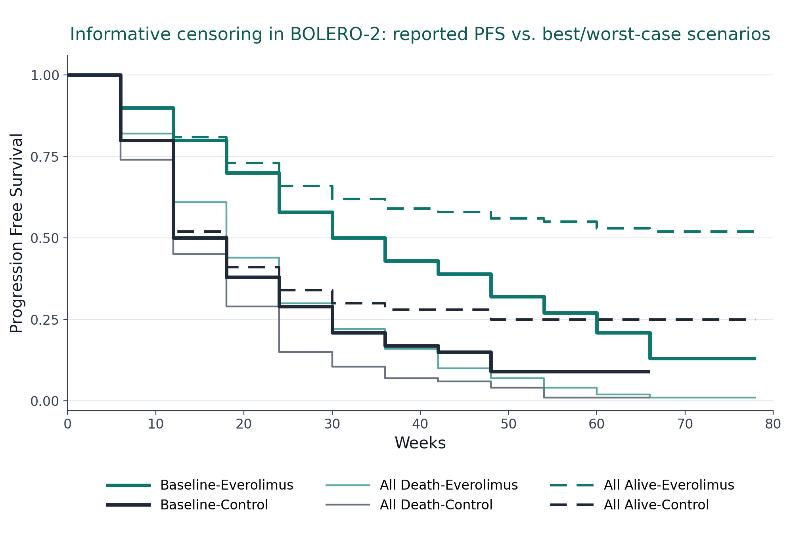
Informative censoring in BOLERO-2: the reported PFS curves (thick) vs. best-case (dashed — every censored patient had no progression) vs. worst-case (thin — every censored patient progressed). Under different censoring assumptions the curves can cross — the observed benefit could be entirely explained by who dropped out. PFS can be distorted by loss to follow-up in a way survival cannot.
3. The approval machinery — how two-thirds of cancer drugs reach market on surrogates
The regulatory facts (FDA, 2009–2014):
55 of 83 cancer drug approvals (66%) were based on a surrogate — 31 on response rate, 24 on PFS.
Of those 55, 25 were accelerated approvals (all accelerated approvals used surrogates) and 30 were regular approvals.
For 56% of accelerated and 37% of regular surrogate approvals, no published correlation study existed at all — not a weak correlation, nothing.
Where r was published: all four accelerated-approval surrogates had low correlation (r ≤ 0.7); for regular approvals, only 20% were high, 27% medium, 53% low.
The back end — do the surrogates ever confirm? With ~4.5 years of follow-up: only 5 of 36 (14%) surrogate-based approvals ever showed a survival benefit — 1/15 (7%) of accelerated approvals, 4/21 (19%) of regular ones. Postmarketing commitments fare no better: of 614 promised studies, 20% never started, 25% were ongoing or delayed, 54% completed (the book's categories sum to 99%, not 100%) — and the FDA has never fined a company for non-completion.
The case files every investor should know:
Bevacizumab in breast cancer: accelerated approval (2008) on dramatic PFS improvement → three later randomized trials showed no survival benefit and smaller PFS gains → FDA revoked the authorization (2011).
Gemtuzumab (acute myeloid leukemia, AML): approved 2000 on a 30% response rate at 9 mg/m² → no survival benefit at 6 mg/m² → withdrawn 2010 → re-approved 2017 at 3 mg/m² with a survival benefit. "Approved and on the market for nearly a decade at the wrong dose — precisely because we embraced surrogates."
Olaratumab (sarcoma): accelerated approval on a small trial's OS improvement (14.7 → 26.5 months) that wasn't designed to measure survival → confirmatory phase 3 failed two years later. $500M in sales in the interim, none refunded.
Atezolizumab (bladder), pembrolizumab (gastric), nivolumab (small-cell lung): accelerated approvals on 12–15% response rates, each followed within months by a failed confirmatory survival trial.
The Kymriah denominator: 88 patients had cells harvested for CAR-T (chimeric antigen receptor T-cell therapy — the patient's own immune cells re-engineered to attack cancer); 16 (18%) never received the cells (died waiting, manufacturing failed) — and the FDA let the company exclude them from the efficacy denominator, violating intention-to-treat. The sickest patients vanished from the analysis.
The investor's question:Was this approval on a surrogate? If accelerated, is the confirmatory trial enrolled, on time, and powered for OS? A surrogate approval without a credible confirmatory path is a regulatory asset with an expiry date.
Case study: the amyloid antibodies and the surrogate debate
If you want one story that captures the whole surrogate-vs-clinical-benefit fight, it's the anti-amyloid Alzheimer's antibodies. The facts, as they stand in the public record:
Aducanumab (Aduhelm, Biogen): in June 2021 the FDA granted accelerated approval based on amyloid plaque clearance — a brain-imaging biomarker — accepted as "reasonably likely to predict clinical benefit." The two phase 3 trials were discordant: one (EMERGE) positive, one (ENGAGE) negative. The approval was controversial — the advisory committee had voted against it — and US Medicare responded by sharply restricting coverage.
Lecanemab (Leqembi, Eisai/Biogen): this one went further and did what the framework demands. After its own accelerated approval, lecanemab earned traditional FDA approval in July 2023 on a clinical endpoint — slowed decline on the CDR-SB cognitive scale in an 18-month phase 3 — with confirmatory evidence of real clinical benefit, not just plaque removal.
Donanemab (Kisunla, Eli Lilly):FDA-approved in July 2024 for early Alzheimer's, again on the basis of a phase 3 trial showing slowed clinical decline.
The class risk: all three carry ARIA (amyloid-related imaging abnormalities) — brain swelling and micro-bleeds visible on MRI — in their labels. Real toxicity, managed with scheduled scans.
The debate this leaves behind is the central one for neuro investing: does clearing amyloid actually change the disease course in a way patients feel, or is it a biological decoration? The FDA's accelerated-approval bargain — surrogate now, confirmatory proof later — is exactly the machinery described in #prasad-s3. Lecanemab and donanemab then did what the framework asks: they ran the trials that measure clinical benefit. Judge every future CNS surrogate by whether the confirmatory trial is real, enrolled, and powered — not by how pretty the biomarker looks.
The investor's question:Is this approval (or pitch) resting on a biomarker or on a clinical endpoint? If it's a biomarker, is there a credible confirmatory trial — and does the safety burden (ARIA or its equivalent) fit the demonstrated benefit?
Cross-link: this is the #prasad-s2 framework playing out in neurology — amyloid clearance was the surrogate, clinical decline is the thing patients care about. The same question that sank surrogate-approved cancer drugs applies: did the surrogate predict the real benefit?
Statistics: the basic conventions
The working conventions above are the 30-second version. The full biostatistics module (from Intuitive Biostatistics) follows:
p-value — the probability of seeing results this extreme if the drug actually does nothing. p < 0.05 is the conventional bar for "statistically significant." It is not the probability the drug works.
p < 0.05 ≠ clinically meaningful. A huge trial can hit p < 0.05 on a tiny effect no doctor or payer cares about. Always ask: how big was the effect, in real units?
Confidence intervals — the range the true effect plausibly falls in. Wide interval = imprecise estimate = be humble.
Hazard ratio (HR) — <1 favors the drug (e.g. HR 0.70 ≈ 30% risk reduction). Check the confidence interval: if it crosses 1.0, the result isn't statistically solid.
Small n lies. A 40% response rate in 10 patients is 4 people. Positive signals in tiny populations routinely evaporate at scale.
Subgroup analyses reported after the fact ("it worked in patients over 65 with biomarker X") are hypothesis-generating, not proof. If the company slices the data enough ways, something will look good by chance.
1. What a p-value actually means (and what it doesn't)
A p-value answers one narrow question: if the drug actually did nothing at all, how surprising would these results be?
A p-value of 0.03 means: if the drug were truly useless, you'd still see results this good (or better) about 3 times out of 100, purely by luck. That's it. That is the entire meaning.
Here's what a p-value does not tell you — and these are the expensive mistakes:
It is not the chance the drug works. A p-value of 0.03 does not mean there's a 97% chance the drug is effective. This is the single most common misreading in all of science. The real chance the finding is bogus depends on how plausible the drug was before the trial — which brings us to Bayesian thinking (section 8).
It says nothing about how big the effect is. A drug can lower blood pressure by a trivial amount and still get p < 0.001 if the trial enrolled enough patients. Statistical significance is not the same as clinical significance. Always look at the effect size next to the p-value.
P = 0.05 is a convention, not a law of nature. There is no meaningful difference between p = 0.045 and p = 0.055. One gets a green "significant" label, the other a red "not significant" label, and billions of dollars of company value can swing on that arbitrary line. Treat borderline p-values as "interesting, needs a second look," not as verdicts.
"Not significant" does not mean "no effect." A trial that fails with p = 0.20 might have tested a great drug in too few patients. Absence of evidence is not evidence of absence. The confidence interval (next section) tells you whether the trial proved the drug doesn't work or just failed to prove it does.
The investor's question: When a press release trumpets "p < 0.05," ask: what's the effect size, and was this the pre-specified primary endpoint? A p-value on a surprise subgroup analysis is a lottery ticket, not evidence.
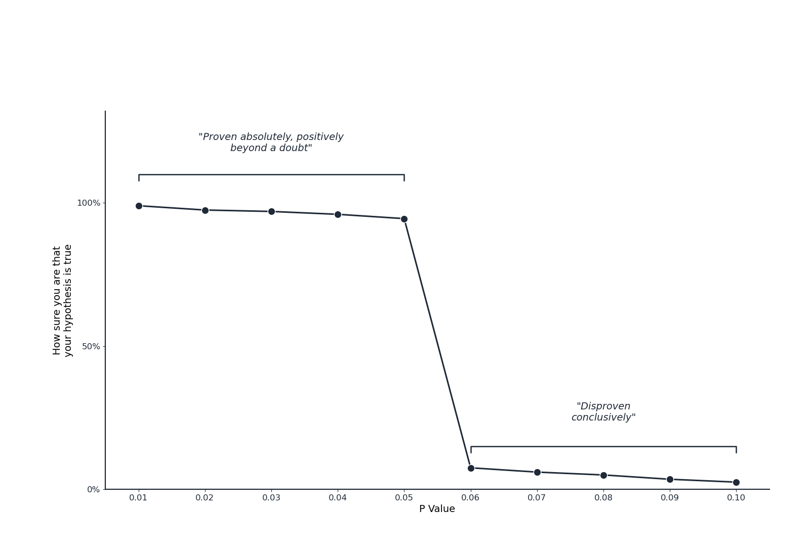
"P = 0.05" has no magical properties: belief in a hypothesis should not fall off a cliff between p = 0.05 and p = 0.06.
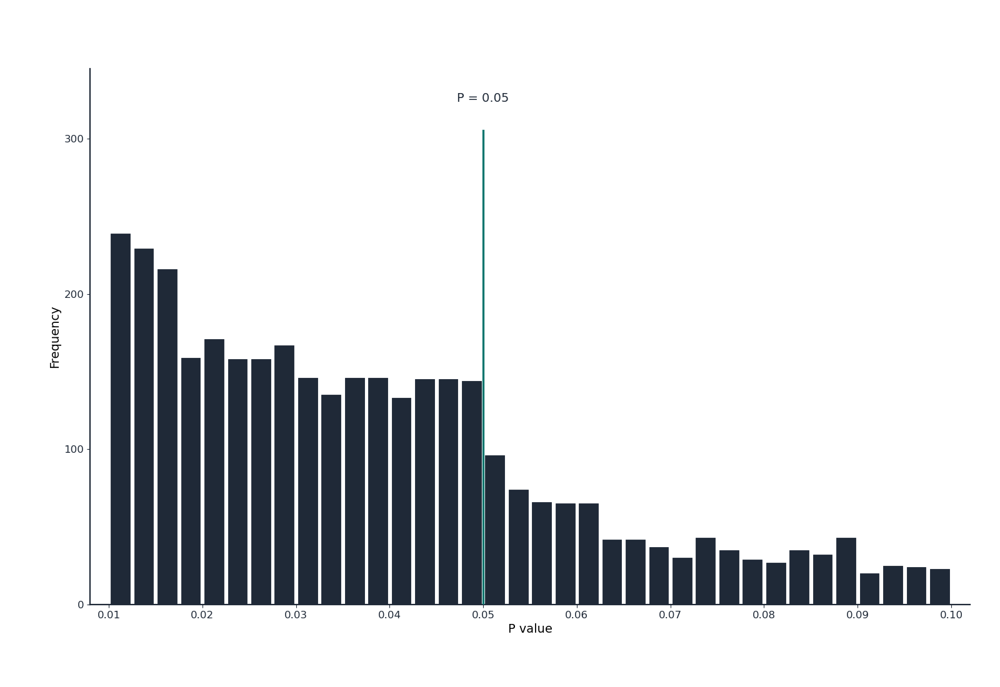
Too many published p-values sit just under 0.05 — the fingerprint of p-hacking and publication bias.
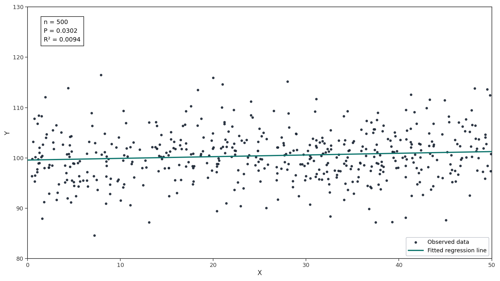
Beware small p-values from large samples: n = 500 gives p = 0.03 for a relationship explaining under 1% of the variation (R² = 0.0094 — R-squared is the fraction of the variation the relationship actually explains) — statistically significant, practically nothing.
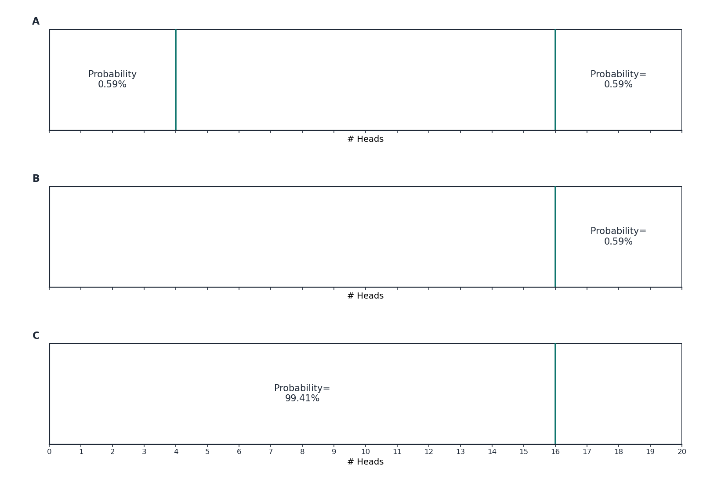
One-tailed vs two-tailed, made concrete: with 20 coin flips, a two-tailed test splits the 5% as evenly as the discrete distribution allows — here 0.59% per tail (panel A); a one-tailed test puts it all on one side (panel B) — which is why "p = 0.04 one-tailed" is really p = 0.08.
2. Confidence intervals — the most useful number in any readout
A 95% confidence interval (CI) is a range of plausible values for the true effect. If a trial reports "the drug lowered LDL by 15 mg/dL (95% CI: 10 to 20)," it means the data are consistent with a true benefit anywhere from 10 to 20 — and inconsistent with anything outside that range.
Why CIs beat p-values:
A CI shows you the size AND the precision. A p-value only tells you "probably not zero." The CI tells you the plausible range — 10 to 20 is a solid, meaningful effect; 0.5 to 29.5 is a shrug.
Reading a "failed" trial: If the CI for a drug's benefit is −2 to +8, the trial was inconclusive (the true effect could be decent). If the CI is −1 to +1, the drug was tested well and genuinely does little — that's a real negative. Press releases rarely make this distinction. You should.
The width of the CI tells you how much to trust the number. Wide CI = small trial or noisy data = the headline number could be way off. Narrow CI = precise estimate.
Rule of thumb: quadrupling the sample size only halves the width of the CI. Precision is expensive — which is why small biotechs run small trials and get wide CIs.
The investor's question:Does the CI include values that would be clinically meaningless? If the entire CI sits in "who cares" territory, the drug is a dud no matter what the p-value says. If the CI spans from "game-changer" to "useless," the trial answered nothing.
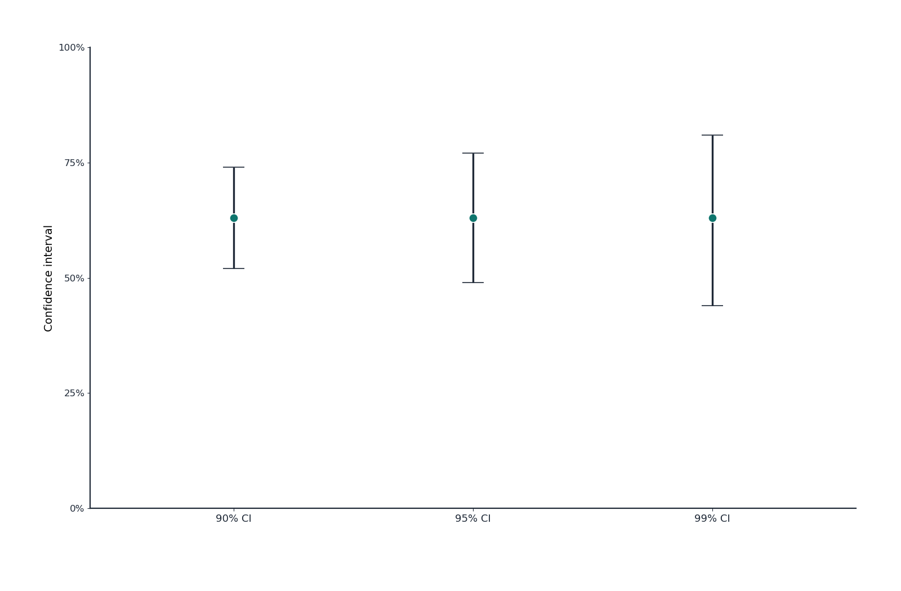
More confidence costs precision: the 99% interval is much wider than the 90% interval for the same data.
3. Power and sample size — why trials fail even when drugs work
Statistical power is the chance a trial will detect a real effect if one exists. A trial with 80% power will miss a genuinely effective drug 20% of the time — that's one in five.
The intuition: imagine trying to hear a whisper across a noisy room. The whisper is the drug's effect; the noise is patient-to-patient variability. You can hear it better by (a) making the whisper louder (bigger true effect), (b) quieting the room (less variable patients, better measurements), or (c) listening longer (more patients). Sample size is usually the lever companies pull.
What to know as an investor:
Small trials of noisy diseases are coin flips. A 30-patient Phase 2 in a highly variable condition (pain, depression, Alzheimer's scales) has terrible power. A "failed" small trial often means nothing; a "successful" small trial often exaggerates the effect (only big lucky swings cross the significance line — this is called the winner's curse).
Post-hoc power calculations are circular nonsense. If a trial fails and the company says "we had 80% power," that's computed from assumptions, not from what actually happened. Ignore it; read the CI instead.
Watch for the sample-size creep. If a trial keeps enrolling "a few more patients" until it hits significance, the p-value is cooked. Legitimate trials fix the sample size in advance (or use pre-planned interim rules).
The investor's question:Was this trial big enough to hear the whisper? A failed 40-patient trial in a noisy indication is not evidence the drug is dead. A failed 800-patient trial usually is.
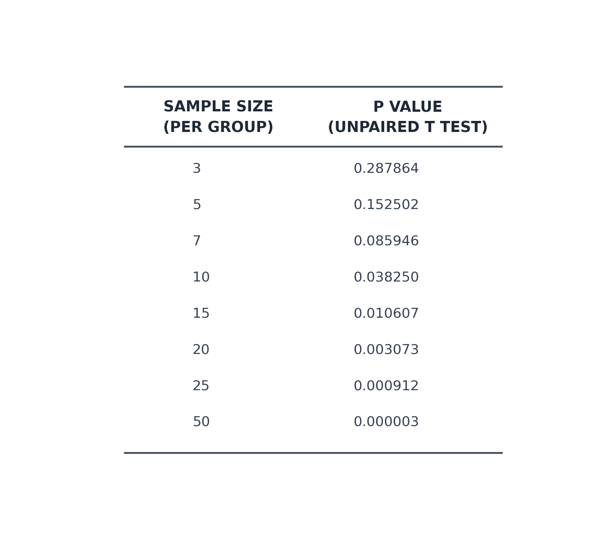
Same data, more patients, smaller p: identical results go from p = 0.29 (n = 3/group) to p = 0.000003 (n = 50/group). Sample size manufactures "significance".
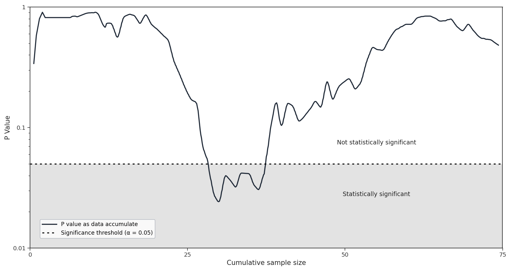
Peeking at the data and stopping when p dips below 0.05 manufactures false positives — the p-value wanders across the line as patients accumulate.
4. The three workhorse tests — t-tests, chi-square, ANOVA
These are the three statistical tests you'll see named most often. Each answers a different kind of question.
t-test — "Is the average different between two groups?" Compares the means of two groups: drug vs. placebo blood pressure, treated vs. untreated tumor shrinkage. It accounts for both the size of the difference and the noisiness of the data. A huge difference in very noisy data can be less convincing than a small difference in very clean data — the t-test weighs both. Investor note: a t-test assumes the data are roughly bell-shaped and the two groups are similarly variable. For things like drug concentrations or antibody levels — which are often lognormal, meaning most values cluster small while a few trail large (like incomes) — the right move is to analyze the logarithms, which straightens the curve so the t-test behaves; a company reporting a plain t-test on such data may be using the wrong tool.
Chi-square test — "Are the proportions different between groups?" Used when the outcome is yes/no: response vs. no response, alive vs. dead, infected vs. not. It compares the observed counts against what you'd expect if the drug did nothing. This is the test behind most "response rate" comparisons in oncology readouts. Investor note: with small numbers, companies should use Fisher's exact test instead — chi-square gets unreliable when any expected count is tiny. Also, comparing raw response rates ignores time — a drug that delays progression without changing the final response rate needs survival analysis, not chi-square.
ANOVA — "Are the averages different across three or more groups?" Analysis of variance compares several groups at once: placebo vs. low dose vs. high dose, or drug A vs. drug B vs. drug C. Its one job is to answer "is anything different here?" — it does not tell you which groups differ. That's what follow-up comparison tests (named after their inventors, e.g., Tukey, Dunnett) do, with extra penalties for multiple comparisons. Investor note: never let a company run three separate t-tests instead of one ANOVA — that's triple-dipping on the 5% false-positive rate. And ANOVA treats doses as mere labels; if the real question is "does more drug give more effect," fitting a dose-response curve to the data (regression) is the right tool, not a bar chart with stars.
The investor's question:Was the right test used for the right kind of data — a t-test for averages, chi-square for proportions, ANOVA before any pairwise claims? A company that skipped ANOVA for three t-tests, or ran a plain t-test on lognormal data, has already told you something about its rigor.
In oncology and cardiology, the question isn't just "did it work?" but "how long until something happened?" — death, progression, relapse. That's survival analysis.
Kaplan-Meier (KM) curves are the stair-step graphs in every oncology deck. Each step down is a patient event; flat stretches mean nobody had an event; little tick marks are censored patients (they left the study or it ended before anything happened to them). Reading a KM curve: the gap between the drug and control curves is the treatment effect, and it matters when the gap opens. Curves that separate early and stay separated = clean win. Curves that overlap for a year then drift apart = delayed effect (common in immunotherapy — and a reason some trials "fail" early readouts). Curves that cross = the drug may help some patients and hurt others, or help early and harm late — deeply ambiguous.
The hazard ratio (HR) is the single number summarizing the curves: HR = 0.70 means patients on drug had 30% lower risk at any given moment than control patients. HR < 1 favors the drug. But the HR assumes the relative benefit is constant over time (the "proportional hazards" assumption) — if the curves cross, the HR is a misleading average of "helps early, harms late." Always look at the curves, not just the number.
The log-rank test is the p-value for "are these two curves really different?" It gives equal weight to the whole timeline. (A cousin, the Gehan-Breslow test, weights early events more — relevant when early separation matters, since it catches early-separation drugs that the log-rank misses.)
Censoring traps: patients who drop out are "censored" — assumed to be no different from those who stayed. If sicker patients drop out of the drug arm because of side effects, the drug arm looks artificially good. Heavy or lopsided dropout is a red flag.
The investor's questions:Do the curves separate early and stay separated? Do they cross? Is the HR's confidence interval entirely in meaningful territory? How much censoring is there, and is it balanced?
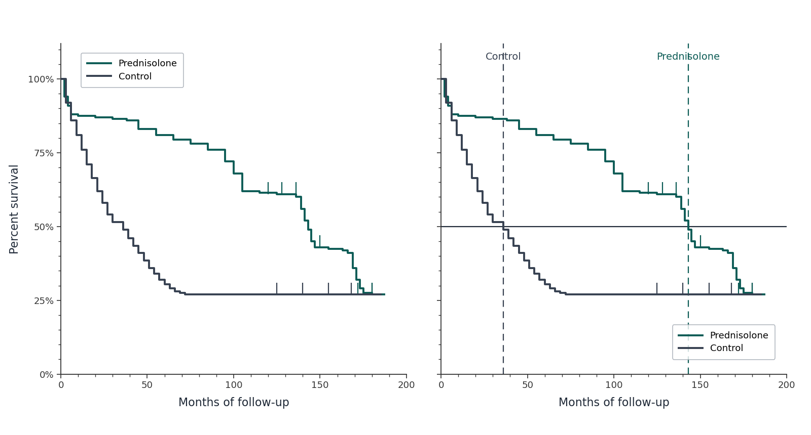
How to read a Kaplan-Meier plot: the steps, the censoring ticks, and how median survival is read off the 50% line.
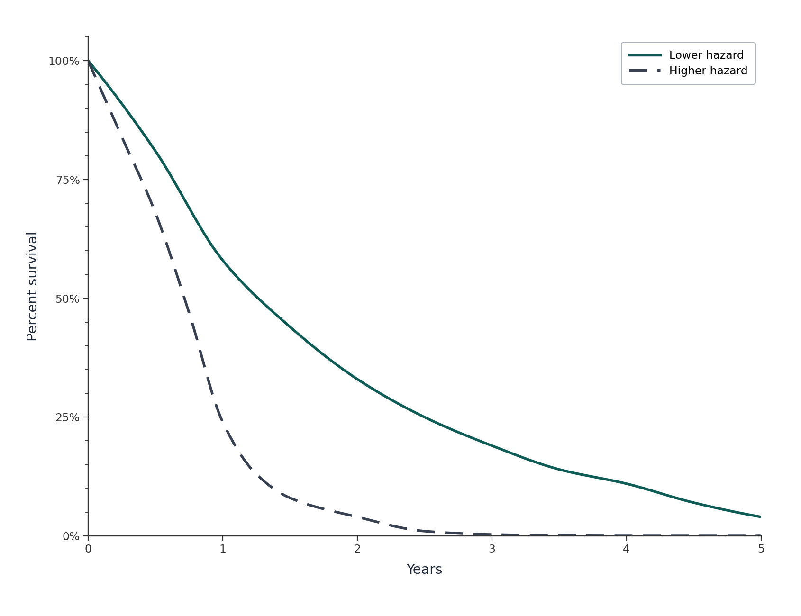
What a hazard ratio assumes: the two curves keep a constant proportional gap — when they cross or converge, the single HR number misleads.
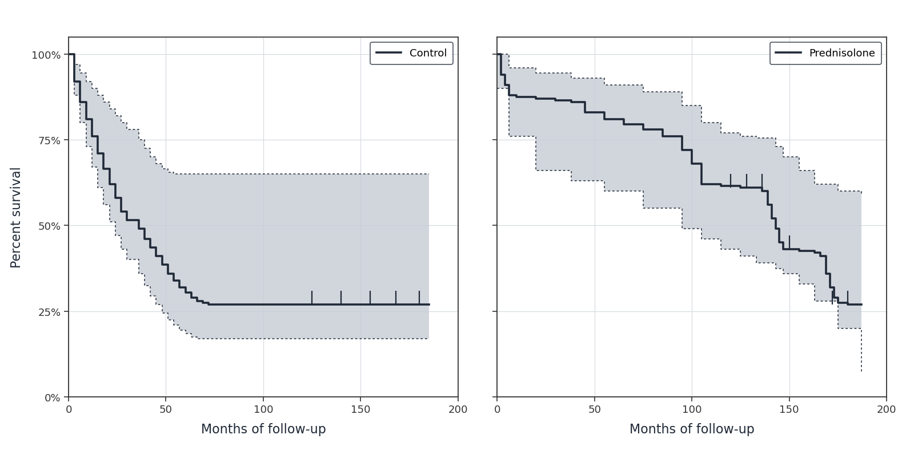
Survival curves with their 95% confidence bands — wide bands mean the curve's exact position is uncertain, especially late when few patients remain.
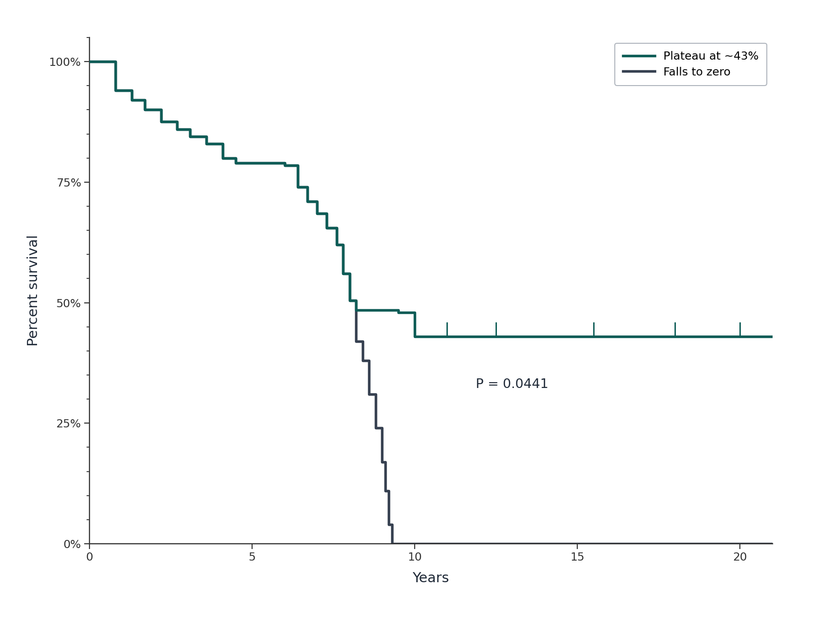
Identical median survivals, completely different curves: the median compresses the whole story into one number — always look at the curves.
6. Noninferiority trials — "not worse" is not "as good"
Many trials don't try to prove a drug is better — they try to prove it's not meaningfully worse than an existing treatment. This is the standard design for biosimilars, "me-too" drugs, antibiotics, diabetes and anticoagulation drugs. As an investor you'll see these constantly, and they have their own trapdoors.
How it works: before the trial starts, the sponsor pre-defines a noninferiority margin — the largest difference everyone agrees to call "close enough." The trial succeeds if the entire confidence interval for the treatment difference sits above the lower edge of that margin. Notice what that means: the drug can look numerically worse and still "win."
The three traps:
A gamed margin. If the margin is generous, the trial is easy to pass. Always ask: was this margin clinically justified, or negotiated to be passable? A noninferiority win against a wide margin proves much less than the headline suggests.
Noninferior is not equivalent, and neither is "as good." Press releases saying "demonstrated noninferiority" get read as "just as good." It means "not worse by more than the margin" — and a statistically significant difference in favor of the old drug can still be "noninferior" if the whole CI sits inside the margin.
The dead-comparator problem. Noninferiority only means something if the comparator actually works in this trial. If the population, endpoint, or trial conduct means even the standard drug couldn't have shown an effect — no assay sensitivity — then "noninferior to nothing" proves nothing. This is the cardinal rule, and the hardest to check from outside.
Equivalence (the stricter cousin, used for biosimilars and generics): the entire CI must fall inside a pre-defined zone on both sides — e.g. the FDA's 80–125% band for peak-concentration ratios. And remember: merely failing to find a difference (p > 0.05) is not equivalence. Equivalence has to be actively demonstrated, usually with two one-sided tests (testing "not too low" and "not too high" separately).
The investor's question:What was the margin, who chose it, and would a thinking doctor call that margin "close enough"? If the press release doesn't state the margin, that tells you how proud they are of it.
Worked example — the margin in practice: in a pneumococcal conjugate vaccine non-inferiority trial — the 0.667 bar (lower bound of the 95% CI for the immune-response ratio) is the standard FDA criterion for shared serotypes — the bar was set so that for each shared serotype, the lower bound had to exceed 0.667. All 28 shared serotypes cleared it. Note what this proves: comparable immunity, not better efficacy — the value proposition was the broader strain coverage, not the head-to-head win. And the trap: NI margins are negotiated. A generous margin makes "success" easier. Always ask what the margin was and whether it was clinically justified.
7. The multiple-comparisons problem — why most "exciting findings" are noise
Here's the trap that generates more false discoveries than anything else in biotech: if you test enough things, something will look significant by pure luck.
The math is brutal. At the standard 5% significance level, testing 20 useless hypotheses produces, on average, one false "discovery." Test 100 subgroups, biomarkers, endpoints, and time points — as some trial analyses quietly do — and you'll "find" about 5 significant results from a completely ineffective drug.
Where this bites investors:
Subgroup analyses. "The drug failed overall, but in left-handed patients over 60 with the full moon variant, p = 0.02!" Unless the subgroup was pre-specified before the trial, this is data-dredging. A famous simulation showed that slicing one failed trial into enough subgroups guarantees finding a "significant" one.
Secondary endpoints. Trials have one primary endpoint (the one the trial was designed around) and often a dozen secondaries. A "significant" secondary after a failed primary is hypothesis-generating at best — it needs its own confirmatory trial.
Peeking at the data. Every interim look at accumulating data is another roll of the dice. Legitimate trials pre-plan their interim analyses with strict statistical penalties; a company that "took an early peek because the data looked good" has inflated its false-positive rate.
Dose-hopping. Testing 4 doses against placebo and highlighting the one that hit p < 0.05 — without adjusting for 4 comparisons — is the same trick.
The defenses have names you'll see in methods sections: Bonferroni correction (divide the significance threshold by the number of tests — strict but simple), false discovery rate control (allows a known fraction of false positives — common in genomics), and pre-specification (writing down the plan before seeing data — the single most important credibility signal in any trial).
The investor's question:How many things did they test, and which one was the plan all along? If the headline result wasn't the pre-specified primary endpoint, discount it heavily — demand a confirmatory trial before updating your valuation.
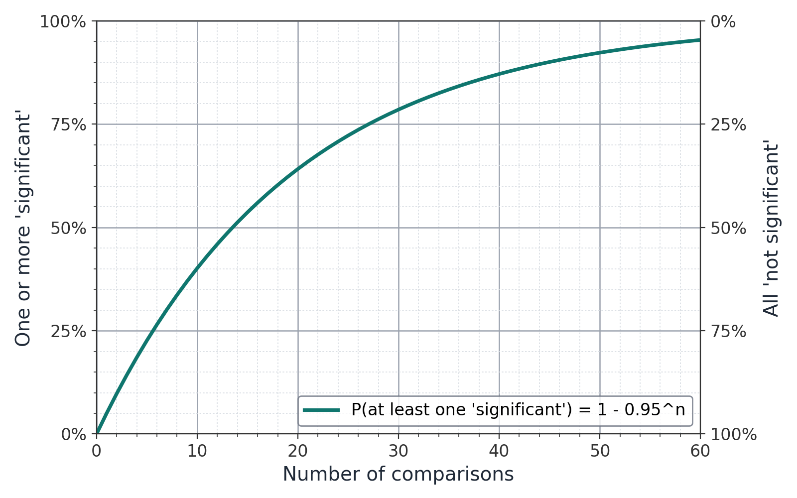
The math behind the joke: with 20 comparisons you have a ~64% chance of at least one false "significant" result; by 60 comparisons it's near-certain.
8. Bayesian intuition — the prior is the elephant in the room
Classical statistics asks: "assuming the drug does nothing, how surprising are these data?" Bayesian thinking asks the more useful question: "given these data AND everything I knew before, how likely is it that the drug works?"
The key idea is the prior probability — your belief before seeing the results. A positive trial result means something completely different depending on the prior:
A me-too drug in a well-validated pathway (high prior, say 50%) with p = 0.04 → probably real.
A first-in-class drug with a brand-new mechanism in a graveyard indication (low prior, say 5%) with p = 0.04 → still more likely noise than signal. The math: with a 5% prior, even a "significant" p-value leaves the chance of a false positive above 50%.
This is the false positive report probability (FPRP) — the chance that a "significant" finding is actually bogus, given the prior. The book's framework: low prior + small trial + barely-significant p-value = a finding you should assume is false until replicated.
Everyday analogy: a medical test for a rare disease. Even a 99%-accurate test produces mostly false positives when the disease affects 1 person in 10,000 — because the prior is so low. Trial results work exactly the same way. This is also why replication matters so much: a second positive trial multiplies the prior for the third look.
The investor's question:Before this readout, how likely was this drug to work? Adjust the prior for: validated vs. novel mechanism, quality of preclinical data, whether similar drugs succeeded or failed, and the disease's history of killing good-looking hypotheses. Then interpret the p-value through that prior — not in isolation.
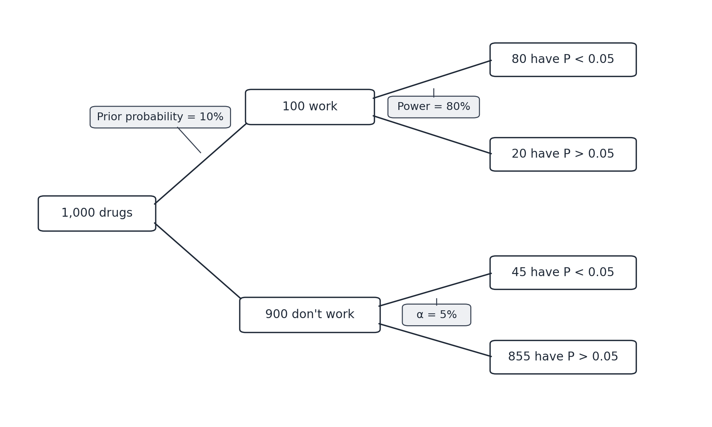
The false-positive math, visualized: of 1,000 drugs where only 10% truly work, a "significant" p < 0.05 still leaves 45 false positives against 80 true ones — 36% of "discoveries" are noise.
9. Regression to the mean — the invisible force behind fake comebacks
Regression to the mean: extreme measurements tend to move back toward average on retesting — with no treatment at all.
Blood pressure, pain scores, tumor measurements, depression scales — all fluctuate. If you select patients because they scored extremely badly at screening, their next measurement will usually look better even on placebo. This isn't healing; it's statistics. The more extreme the selection and the noisier the measurement, the stronger the pull.
Why it matters to you:
"Miracle responder" stories from open-label trials — where everyone knows who's getting the drug — are often just regression to the mean plus the placebo effect. A patient who entered a trial at their worst naturally improves. Without a control arm, you cannot tell the difference.
"Change from baseline" analyses are treacherous. Patients with the worst baseline scores show the biggest "improvements" — automatically. Comparing change-scores between arms without proper adjustment manufactures illusions of efficacy.
Enrichment designs cut both ways. Enrolling only severe patients makes regression to the mean stronger — which is exactly why the control arm exists and why single-arm trials in fluctuating diseases deserve deep skepticism.
The investor's question:Is there a concurrent control arm? If the evidence is "patients improved from baseline" with no comparator, assume regression to the mean (and placebo effects) explain most of it.
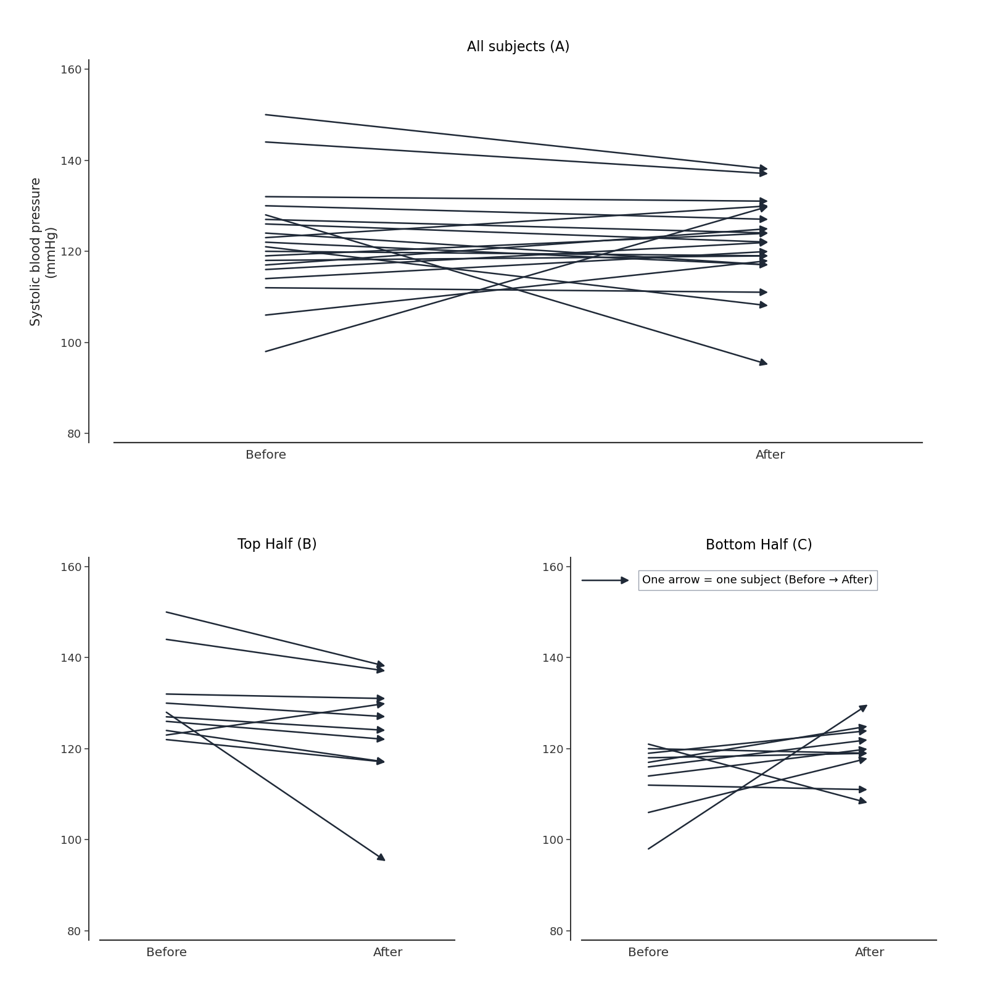
Regression to the mean, visualized: the highest blood pressures fall on remeasurement and the lowest rise — no treatment needed. Selecting extreme patients manufactures "improvement".
10. The common traps — a field guide to misleading trial readouts
These are the book's greatest hits, translated into investor language. Pin this list next to every press release you read.
P-value worship. Tiny p, tiny effect = clinically irrelevant. Huge p, wide CI = inconclusive, not "the drug failed." Read the effect size and CI first, the p-value second.
HARKing — hypothesizing after the results are known. The company presents a surprise finding as if it were the plan all along. Ask: was this endpoint/subgroup in the original protocol (check ClinicalTrials.gov)?
P-hacking. Trying different analyses, cutoffs, subgroups, or statistical tests until something crosses 0.05. Red flags: the analysis method isn't what the protocol described; the endpoint definition shifted; "post-hoc analysis" appears anywhere near the headline.
Surrogate endpoint sleight-of-hand. The drug improved a biomarker but patients didn't live longer or feel better. Surrogates (tumor shrinkage, cholesterol, viral load) are useful only when validated — and history is full of drugs that fixed the number and harmed the patient. Ask: is this endpoint validated to predict real clinical benefit for this drug class?
The subgroup mirage. (See section 7.) Failed trial + glowing subgroup = noise until proven otherwise in a new trial.
"Significant" vs. "not significant" is not a comparison. "The drug worked in biomarker-positive patients (p = 0.01) but not in biomarker-negative patients (p = 0.30)" does NOT prove the drug works differently in the two groups. The correct test is the interaction test — the test that asks "is the difference between the groups real, not is each group significant on its own?" — and it usually fails. Demand it.
Baseline imbalance hand-waving. "The arms were well balanced" — check the actual table. Small trials randomize badly; if the drug arm was healthier at baseline, the "efficacy" may be a head start.
Dropout asymmetry. More dropouts (or sicker dropouts) in one arm corrupts everything — efficacy and safety. Look for the discontinuation table, not just the headline.
The responder-analysis con. "40% of patients responded!" — with the responder cutoff chosen after seeing the data, or a cutoff so lax that placebo "responds" too. Always ask for the placebo responder rate and whether the threshold was pre-specified.
Cross-trial comparisons. "Our drug's 60% response rate beats competitor's 45%!" Different trials, different patients, different eras, different definitions — this comparison is scientifically meaningless, and the book is blunt about it. Only head-to-head data count.
The winner's curse. The first small positive trial overestimates the effect — nearly always. Expect the confirmatory trial's effect size to shrink. Size your position for the shrunken effect, not the headline one.
Publication and reporting bias. You see the trials companies choose to publish, analyzed the way they choose to analyze them. Negative trials die quietly; positive ones get press releases. A "clean" publication record for a company with many early programs is itself suspicious.
SEM error bars. Decks love plotting the standard error of the mean instead of the standard deviation — the bars look 3–4× tighter than the actual spread of the data. If the error bars look suspiciously small for the claimed n, check what's plotted. SD describes the patients; SEM describes the precision of the mean. Only SD tells you how variable the data really are.
One-tailed p-values. A "p = 0.04" computed one-tailed is p = 0.08 two-tailed — not significant. One-tailed tests are only legitimate if the direction was pre-specified and a result in the opposite direction would have been ignored (it never is). If a readout doesn't say "two-tailed," assume the worst. (See the one- vs two-tailed figure in §1.)
The secondary-endpoint pivot. When the primary endpoint fails, 59% of negative trials promote a secondary endpoint in the abstract's conclusion (Vera-Badillo, 164 breast RCTs) — Prasad's image: "drawing the bull's-eye after you shoot." Spin in abstracts measurably changes physicians' efficacy ratings in randomized experiments. Read the primary endpoint in the methods before any adjective in the conclusion.
Measurement error wearing an efficacy costume. Tumor shrinkage is measured on grainy CT scans with a mouse — when the same scans went to multiple radiologists, response rates ranged from 4.1% to 20% and progression from 8% to 29% on identical images. And unconfirmed responses don't count: rociletinib's 59% response rate fell to 34% on the mandatory confirmatory scan. Small ORR deltas in open-label trials are noise until proven otherwise.
The unvalidated surrogate. A surrogate (PFS, ORR) is only a stand-in for survival if improving it predicts improving survival — correlation r > 0.85 (strong), 0.70–0.85 (medium), < 0.70 (weak), per Germany's IQWiG evidence-review agency. In metastatic cancer, 61% of surrogate validations were poor — and only 14% of surrogate-based FDA approvals ever showed a survival benefit after ~4.5 years. A surrogate approval without a credible confirmatory OS path is a regulatory asset with an expiry date. (Full framework: the oncology section, §2–3.)
(Traps 15–17 from Prasad, Malignant, 2020.)
The unpronounceable test. Most basic clinical studies need about a dozen standard statistical tests. An exotic, unpronounceable test on standard data — with no cited reference — is a manipulation flag: someone went test-shopping until a p-value cooperated.
Per-protocol "efficacy" analyses are cohort studies in disguise. The moment a paper switches from intention-to-treat to per-protocol ("efficacy"), randomization's protection is forfeited — the compared groups are self-selected. Treat any such claim as observational evidence, however large the n. And the mirror image: a "statistically significant" mega-trial can be commercially meaningless — one blood-pressure drug's significant 10 mmHg effect prevented roughly 1 stroke per 850 treated patients. Always convert p < 0.05 into absolute risk reduction or NNT (number needed to treat: how many patients must be treated for one to benefit).
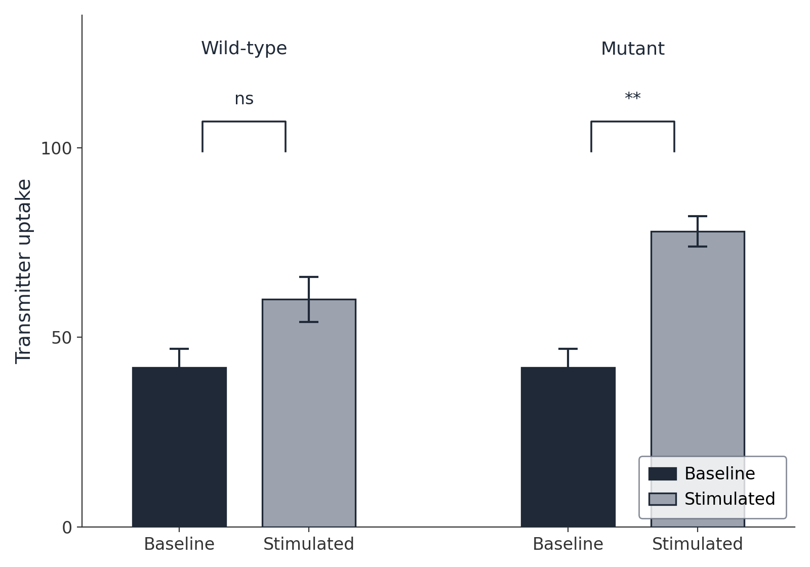
The trap in one image: "significant" in mutants, "not significant" in wild-type — but the difference between those two results is not itself significant. Demand the interaction test.
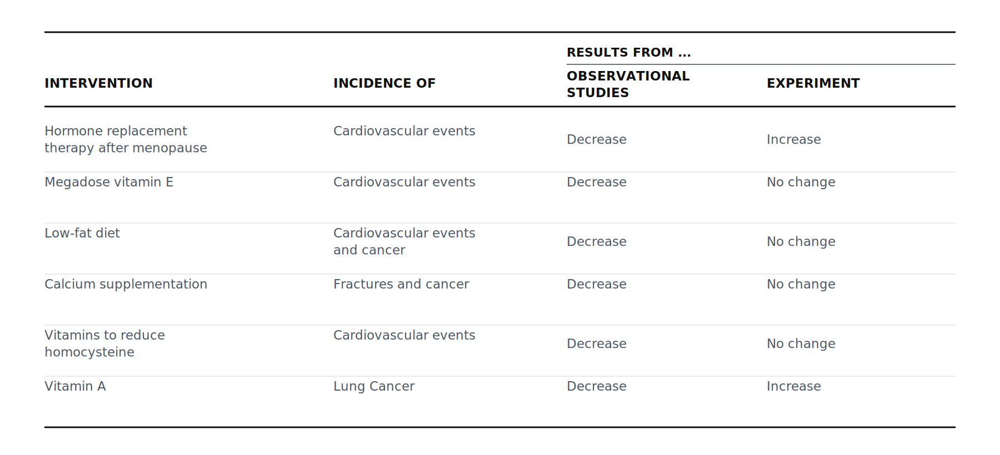
Six hypotheses from observational studies (HRT, vitamin E, low-fat diet...) that experiments overturned or erased — correlation is not causation, with receipts.
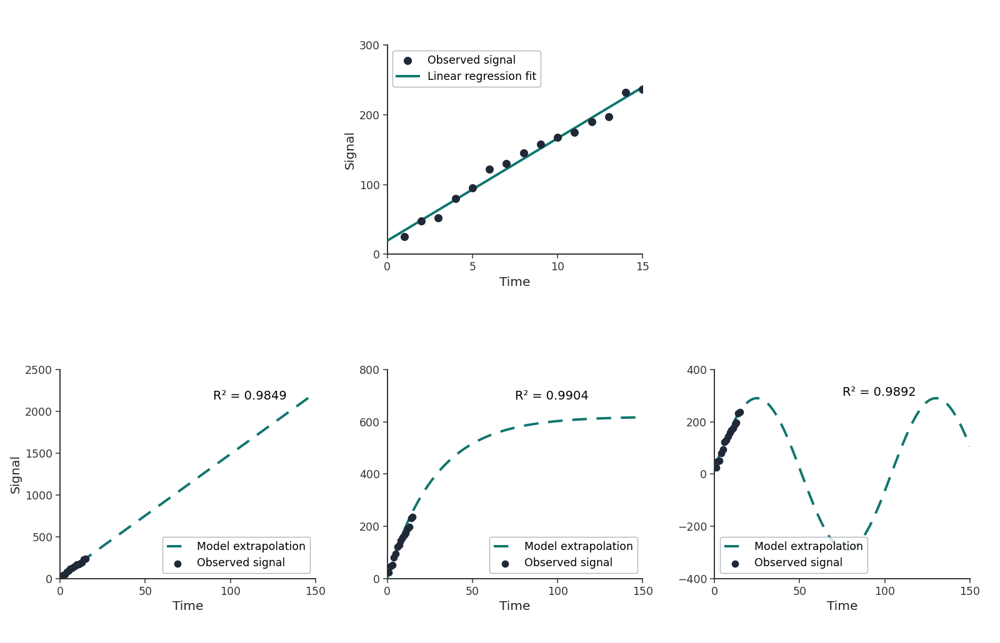
Three models fit the same data equally well but predict wildly different futures — extrapolating a regression line beyond the data is guessing.
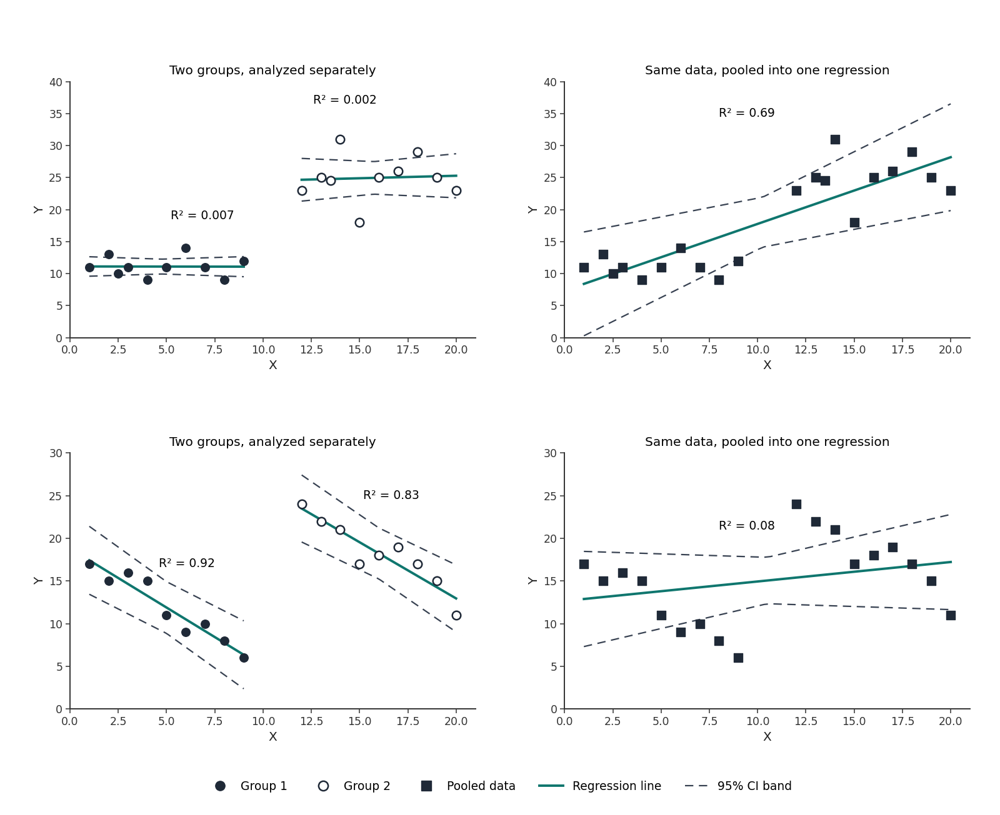
Pooling groups can create a trend that isn't there — or hide one that is. Always ask whether the analysis mixed distinct populations.
11. Putting it together — the five-minute readout checklist
For any trial readout, run this sequence:
What was the pre-specified primary endpoint, and did it hit? (If not, everything else is exploratory.)
What's the effect size and its 95% CI? (Is the whole CI clinically meaningful?)
What's the prior? (Validated mechanism or moonshot? What happened to similar drugs?)
How many looks, subgroups, and endpoints were tested? (Discount for multiplicity.)
Was there a concurrent control, and were the arms balanced with similar dropout? (Or is this regression to the mean in a costume?)
Are the claims about survival backed by KM curves that separate cleanly? (Or a lonely hazard ratio?)
Does the press release report what the protocol promised? (Check ClinicalTrials.gov for endpoint switches and sample-size changes.)
If a readout survives all seven questions, it's worth your attention — and your capital.
Module covers: p-values (§1), confidence intervals (§2), power/sample size (§3), t-tests/chi-square/ANOVA (§4), survival analysis (§5), noninferiority (§6), multiple comparisons (§7), Bayesian intuition (§8), regression to the mean (§9), common traps (§10, incl. 15–17 from Prasad's Malignant and 18–19 from Greenhalgh's How to Read a Paper), readout checklist (§11). Companion: the oncology evidence section (endpoint mechanics, surrogate validation, the approval machinery) and the evidence-appraisal toolkit (paper-trashing, diagnostics, meta-analysis, genetics).
Sample size, from the trialist's angle. The statistics module above covers power and sample size in full — three trial-design specifics worth adding: in time-to-event trials power lives in events, not patients (~190 control-group events for 90% power in the book's heart-failure example); 20% dropout plus 5% drop-in inflates the required size by ~78%; and halving a noninferiority margin quadruples the required sample size — a suspiciously small noninferiority trial usually means a suspiciously wide margin.
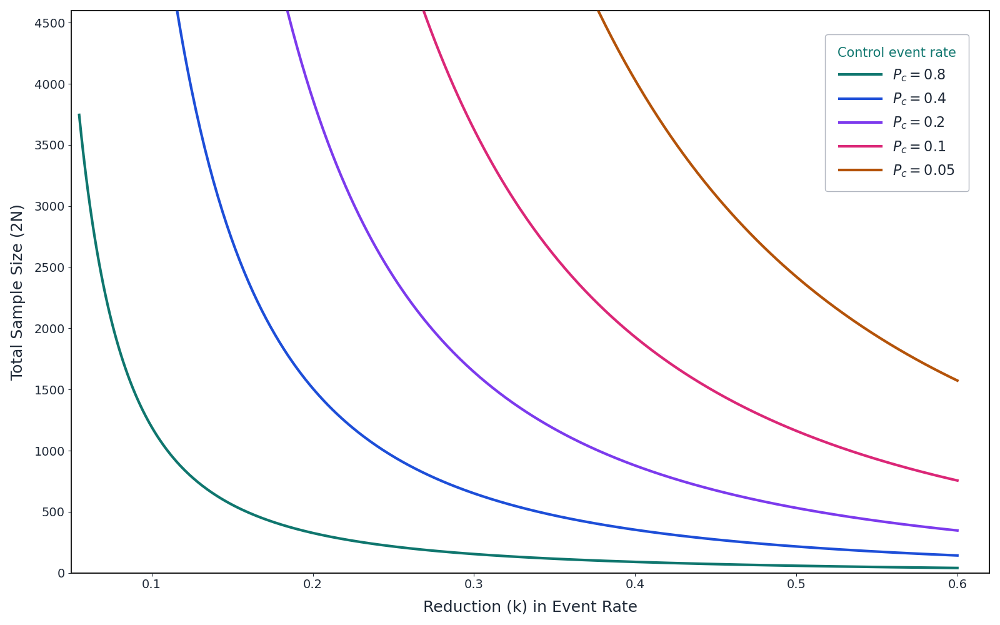
Total sample size vs. proportional reduction in event rate: at a fixed relative effect, lower baseline event rates demand much larger trials. This is why enrollment of lower-risk patients mid-trial can break the power calculation.
7. Interim monitoring — the trial watching itself
Large trials have an independent Data and Safety Monitoring Board (DSMB) that peeks at unblinded data at planned intervals. It can stop the trial early — for overwhelming benefit, for harm, or for futility (the trial can't succeed even if completed).
Early stopping for benefit inflates the estimate. The O'Brien-Fleming rule sets the bar to stop early ~2.3× higher than the usual significance bar at 20% of the data — so a trial stopped early was showing an extreme result at that moment, and the true effect is almost certainly smaller. Discount stopped-early headlines.
Futility stops are terminal. When conditional power (the chance of eventual success given current data) falls below ~10–20%, the DSMB pulls the plug. A futility stop is strong evidence the drug doesn't work — stronger than a completed "negative" trial, because the decision used the actual accumulating data.
Alpha-spending is the statistical price of peeking: each interim look "spends" some of the 5% false-positive budget, so the final bar is stricter than the usual p < 0.05 — each peek raises the bar a little. Legitimate trials preplan this; unplanned peeks cook the p-value.
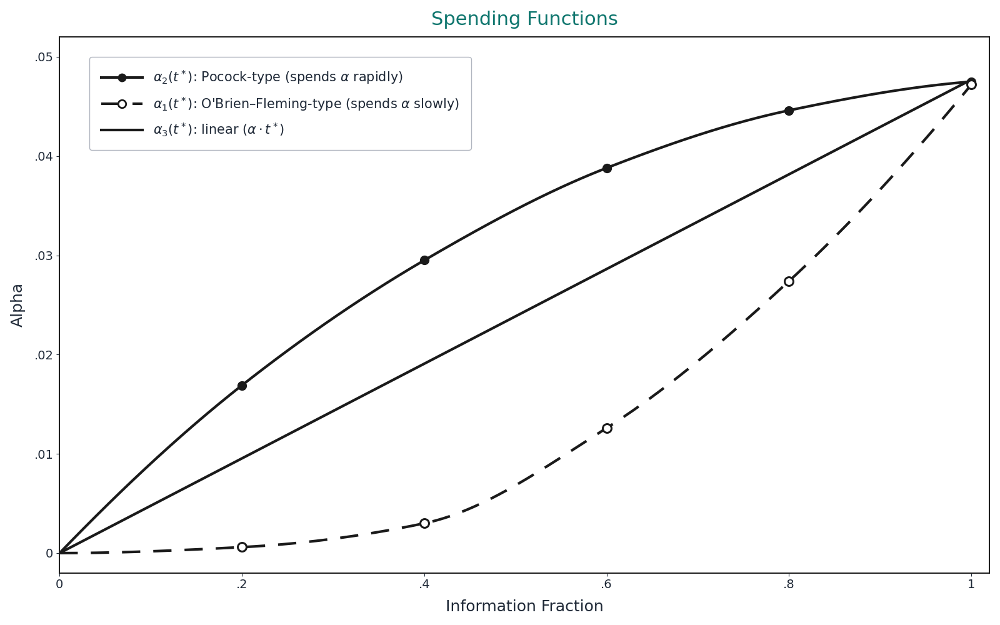
Alpha-spending functions: how the significance bar rises at each interim look so the overall false-positive rate stays at 5%. Every peek costs something.
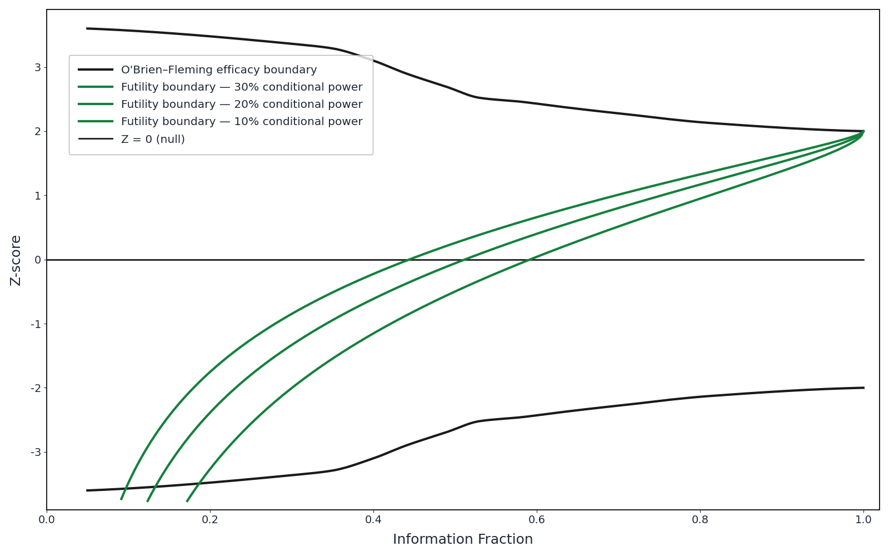
Conditional power boundaries with O'Brien-Fleming efficacy bounds: if the test statistic falls below the futility boundary, the chance of eventual success is under 10–30% — the statistical basis for stopping a trial as futile.
The investor's question:Was there a DSMB, and what did it do? A trial stopped early for efficacy deserves a winner's-curse discount. A futility stop is about as definitive as negative evidence gets.
8. Analysis discipline — ITT, subgroups, and missing data
Intention-to-treat (ITT) means analyzing every randomized patient in their assigned arm, no matter what happened — dropouts, nonadherence, ineligibility discovered later. ITT is the primary analysis because every alternative is biased in unknowable directions. The Anturane trial: dropping 71 "ineligible" patients moved p from 0.20 to 0.07. Always demand the ITT number; treat "per-protocol" or "modified ITT" headlines as secondary.
In noninferiority trials the bias flips: dropouts make the arms look alike, which favors the noninferiority claim. Sloppy conduct helps the drug win.
Subgroup rescues after a failed primary are the CHARISMA/PRAISE pattern (two trials whose headline subgroup claims collapsed under scrutiny): unadjusted for multiplicity, often driven by harm in the complementary group, rarely replicated. The one-in-twenty exception (the African-American Heart Failure Trial (A-HeFT), which confirmed a subgroup hypothesis in a dedicated trial) proves the rule — it needed its own trial.
Missing data kills interpretability. In ATLAS ACS 2, ~10% incomplete follow-up plus arm-differential missingness turned a p = 0.045 mortality claim into p = 0.076–0.100 under FDA re-analysis. "Off drug" must not mean "off study" — the Vioxx APPROVe trial stopped following patients 14 days after discontinuation, hiding the cardiovascular signal that extended follow-up later revealed (HR 1.8).
Regional heterogeneity. In multinational trials, check the geographic splits: PLATO's ticagrelor showed an overall 16% risk reduction, but the U.S. subgroup (8% of patients) had a hazard ratio of 1.27 — favoring the control — possibly from higher aspirin doses used in the U.S. A "positive global trial" can contain a negative U.S. subgroup, and the FDA is a U.S. audience.
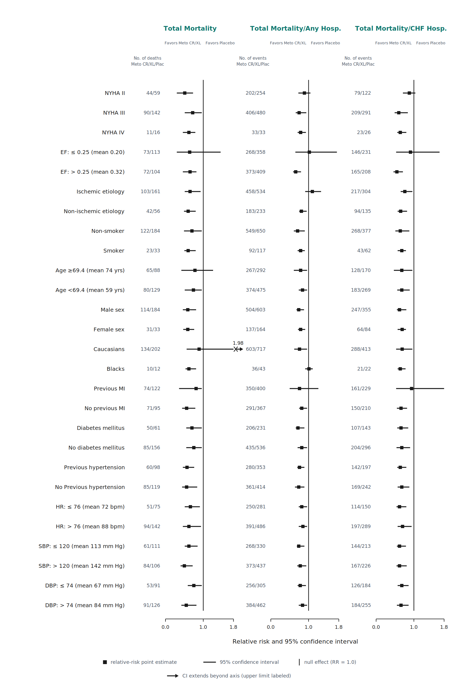
A "good" subgroup picture: the MERIT heart-failure trial's effect was consistent across ~27 predefined subgroups. Compare any company's subgroup slide against this — cherry-picked subgroups with inconsistent directions are the norm, not the standard.
The investor's question:Is the headline number ITT? Were the subgroups prespecified? How much data is missing, and is it differential by arm?
The sponsor-manipulation screen (the ten-flag checklist). Run every company readout against this red-flag list: (1) surrogate endpoint the drug moves; (2) trial population/length tuned for maximum response; (3) placebo-only comparator or sub-therapeutic competitor dosing; (4) pilot patients pooled into pivotal figures; (5) trials with fatalities/serious ADRs unpublished; (6) graphics without CIs, unlabeled axes, no patient-level data; (7) hanging comparatives ("better" — than what?); (8) anecdote over RCTs; (9) paid opinion leaders; (10) cost-effectiveness analyses showing the expensive product "works out cheaper." Flags 1, 3, 4, and 6 are directly checkable from the press release plus ClinicalTrials.gov. (The list comes from Greenhalgh's How to Read a Paper, Box 6.1 — you'll meet the full evidence-appraisal toolkit in Stage 6.)
The negative-but-non-definitive rule. A failed primary (CI crosses zero) is not automatically a dead drug: check the upper 95% CI bound — only ~1-in-40 chance the true effect is that large or larger. If the upper bound is clinically meaningful, the trial is negative but non-definitive; if it rules out any meaningful effect, the drug is dead on this question. Mirror image: a "positive" mega-trial whose entire CI sits below clinical relevance is commercially meaningless regardless of the p-value.
9. Safety — what "no new safety signals" actually means
Pre-approval safety data are systematically thin:
Rare events need big numbers: ~3,000 patients to reliably detect a single 1-in-1,000 event; typical pivotal exposure is 500–2,000. Most drugs' first serious adverse effect is found after approval — 76% of one year's new FDA Boxed Warnings came from spontaneous post-marketing reports, not trials.
"No new safety signals" in a 500-patient trial rules out almost nothing. It's a statement about the trial's power, not the drug's safety.
Solicitation matters: checklist-based adverse-event collection finds far more events than spontaneous reporting (46.5% vs 1–2% for sexual dysfunction on fluoxetine). A drug looks worse on safety in a trial that asks than in one that waits.
Dropout asymmetry is the safety signal hiding in plain sight: more (or sicker) dropouts in the drug arm corrupts both efficacy and safety. Read the discontinuation table, not the headline.
The investor's question:How many patients were actually exposed, for how long, and how were adverse events collected? A clean safety profile in a small, short, checklist-free trial is the absence of evidence — price it accordingly, especially for first-in-class mechanisms.
Continued from Stage 1 — the PK/PD module's second half: dose–response, exposure–response, and why dose selection is an investment risk.
5. Dose–response and the Emax model: why more drug isn't always more effect
Here's the curve that governs every drug on Earth. As drug concentration rises:
At low levels, effect rises almost proportionally with concentration.
Then it bends over (diminishing returns).
Then it flattens — you've hit the maximum effect (Emax). Doubling the dose from there buys you nothing except side effects.
The concentration that produces half the maximum effect is called the EC50 — a single number that measures the drug's potency. Lower EC50 = more potent = less drug needed.
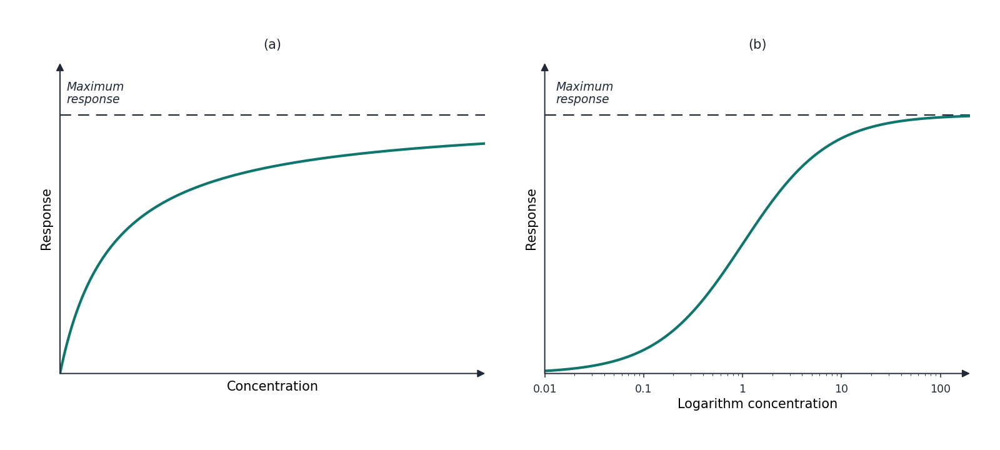
The Emax curve every drug obeys: steep at first, then flattening at the maximum effect. Same curve on a log scale becomes the familiar S-shape.
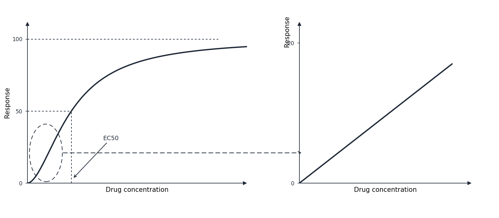
Zoom in on the bottom of the curve and it looks linear — which is why low doses can appear 'dose-proportional' right up until they aren't.
Why it matters for investors:
The dose the company picks must sit on the right part of this curve. If Phase 2 tests a dose on the flat top of the curve, higher doses won't help and lower doses might work just as well (cheaper, safer). If it tests a dose on the steep rising part, small changes in dose swing efficacy — the trial is on a knife's edge, and any PK variability between patients becomes efficacy variability.
"More is better" is a retail-investor trap. Once a drug is near Emax, pushing dose higher only adds toxicity. Many failed dose-escalation trials failed predictably — the curve said the top was already reached.
Steep curves are dangerous, shallow curves are forgiving. Some drugs' curves are steep: a small concentration change flips response from weak to maximal. Those drugs have narrow safety margins. Others are shallow and forgiving. The slope is sometimes reported in trial literature — it's worth looking for.
Competitive antagonists (drugs that block another drug's receptor, like naloxone reversing opioids) work by shifting the curve rightward — you need more agonist to get the same effect. Rescue-medicine companies live on this math.
The therapeutic window. Between the concentration where most patients respond and the concentration where toxicity starts lies the drug's usable range. A wide window is forgiving — dosing errors and patient variability stay safe. A narrow window means the trial must thread a needle, and real-world use will be fragile.
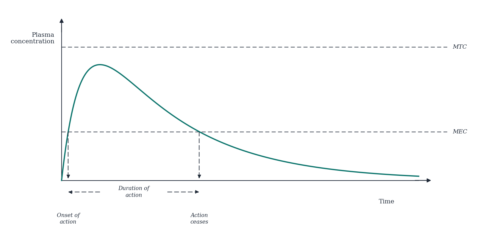
The therapeutic range: bounded below by the minimum effective concentration (MEC) and above by the maximum tolerated concentration (MTC).
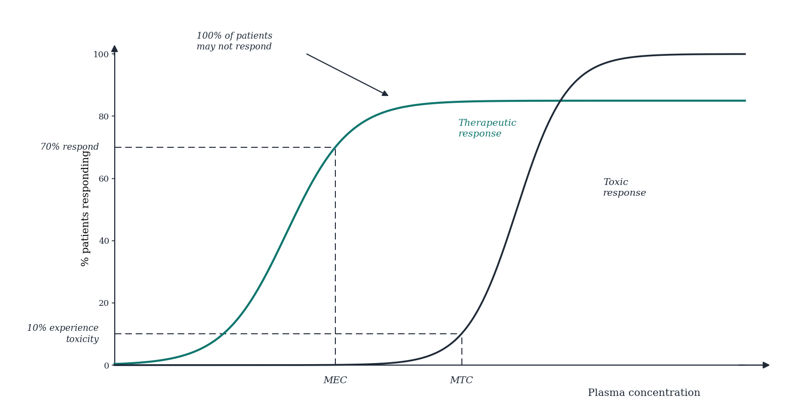
How the window is actually set: from population curves of response vs toxicity — the MEC where ~70% respond, the MTC where ~10% show toxicity.
6. Exposure–response: the bridge between the blood level and the outcome
"Exposure" = how much drug the body saw (blood levels over time). "Response" = what happened (tumor shrank, pain dropped, LDL fell). The exposure–response relationship is the company's core argument: patients with more drug exposure did better, so the drug caused the benefit.
This is where sophisticated investors look when a readout is ambiguous:
If the trial "failed" overall but high-exposure patients responded beautifully, the molecule may be fine — the dose was too low. That's a very different investment conclusion than "the drug doesn't work." (It also means the company may get another shot with a higher dose — or that the drug is only viable at exposures with toxicity problems.)
Biomarkers (measurable body signals like a protein level or blood pressure) are often used as stand-ins when the real outcome takes years. Every biomarker argument rests on the assumption that the exposure→biomarker→outcome chain holds. When it doesn't — when the biomarker moves but patients don't get better — you get some of biotech's most expensive failures.
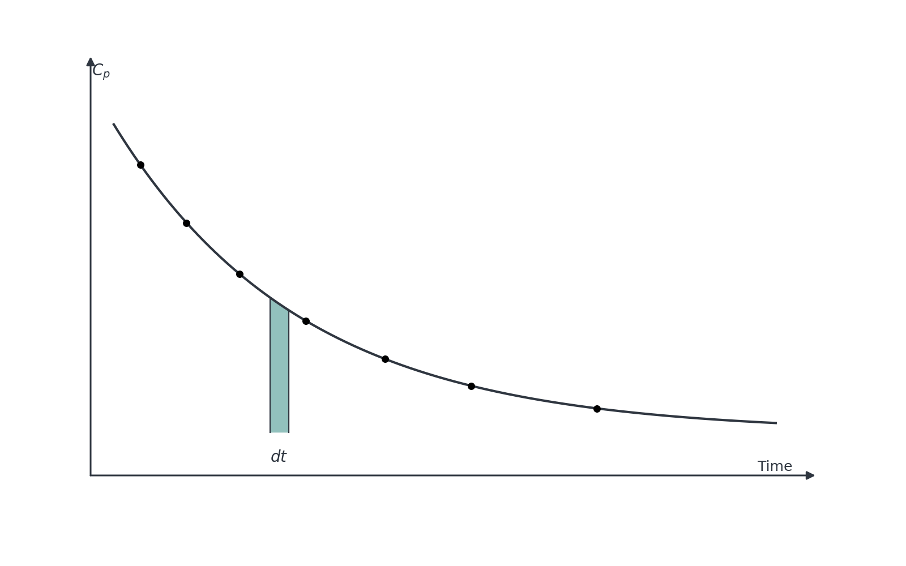
What 'exposure' actually is: the area under the concentration–time curve — total drug seen by the body.
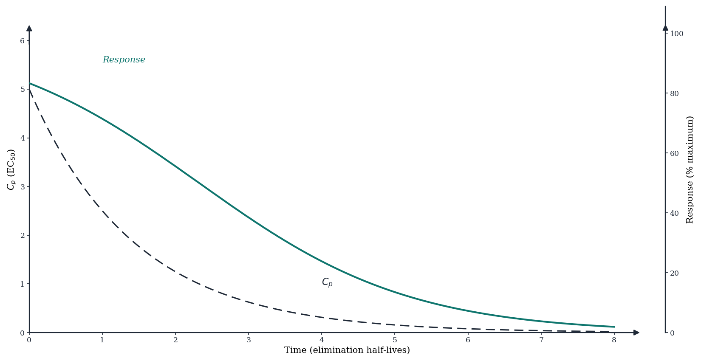
Response can outlast the drug: here the effect persists long after blood levels have fallen — because dosing started well above EC50, the response stays near-maximal even as concentration drops.
7. Why dose selection is an investment risk (the binary connection)
Here's the through-line for everything above. A clinical trial is a bet on a dose, not just a molecule. The dose must:
Put enough drug at the target (absorption, bioavailability),
Keep it there long enough (half-life, dosing interval),
Without accumulating to toxic levels (clearance, especially in sick patients),
Sit on the right part of the dose–response curve (Emax/EC50),
And survive real-world complications (interactions, organ impairment, genetic differences in metabolism).
Wrong dose → failed trial → binary loss. And wrong-dose failures are common enough to have a name for the pattern: the drug "works" in the sense that high-exposure patients respond, but the chosen dose was too low, too infrequent, or defeated by an interaction nobody modeled.
What to actually look for in trial materials:
Phase 1 dose-escalation data: did they actually reach the flat part of the Emax curve, or did they stop early? Companies sometimes stop escalating for commercial reasons (a lower dose is cheaper to manufacture) and leave efficacy on the table.
The Phase 2→3 dose choice: is the Phase 3 dose the one that looked best in Phase 2, or a compromise? Dose compromises (picking a middle dose to hedge safety) are a classic setup for a marginal Phase 3.
Exposure–response analyses in the briefing documents: do high-exposure patients clearly do better? If yes, the drug is alive even if the headline failed. If no — if exposure doesn't track response — be much more skeptical.
Population differences: does the trial population (elderly, liver-impaired, on interacting meds) have different clearance than the Phase 1 volunteers? If yes, the effective dose in the trial may differ from what was planned.
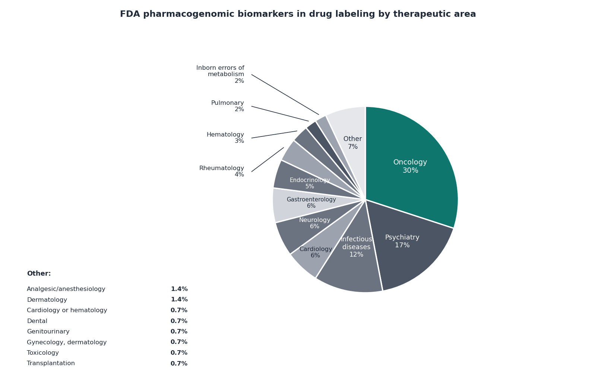
Genetics matters unevenly: pharmacogenomic biomarkers in FDA labels cluster in oncology (30%) and psychiatry (17%) — know which therapeutic areas carry PGx (pharmacogenomic) dose risk.
Irreversible mechanisms and long-PD drugs: these are the pleasant surprises — drugs whose effect outlasts their blood levels (like the once-daily proton-pump inhibitors with sub-hour half-lives). They de-risk dosing frequency commercially.
Nonlinear PK drugs (a small club: phenytoin is the textbook case): small dose increases can cause explosive jumps in blood levels. Trials of such drugs live on a knife's edge, and any dose adjustment mid-trial is a red flag worth understanding.
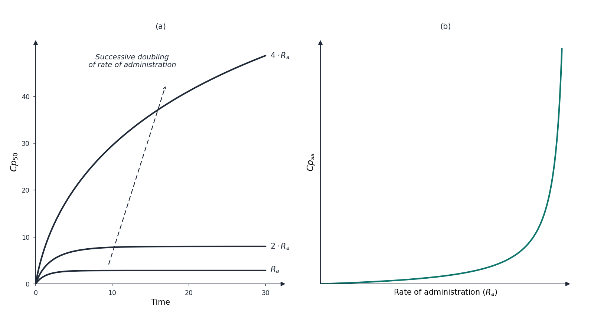
Nonlinear PK is not a gentle curve: doubling the infusion rate more than doubled blood levels — the second doubling sent them up several-fold, toward infinity. This is the knife's-edge visual.
8. The one-page cheat sheet
Concept
One-liner
Investor question
Bioavailability
Fraction of dose reaching blood
Is the oral dose realistic given the number?
Half-life
Time for levels to halve; ~4–5 half-lives to steady state
Has the trial run long enough to reach steady state?
Clearance
Body's drug-removal rate; sets the dose
Do interactions/organ disease change it in the trial population?
Volume of distribution
How widely the drug spreads
Combined with clearance, does the half-life make sense?
Emax / EC50
Max effect; concentration for half of it
Is the trial dose on the flat top or the steep slope?
Exposure–response
More exposure → more benefit?
Did high-exposure patients respond even if the trial missed?
Irreversible action
Effect outlasts drug presence
Can it dose less often than its half-life suggests?
Drug interactions
Perpetrator (the drug doing the blocking) changes the victim's (the drug being blocked) clearance
What label restrictions will this force?
Bottom line: a trial is a bet on a dose, and the dose is applied pharmacokinetics. Learn to read the dose, and you can read the trial.
Spin detection: the press release vs the data
Companies are legally careful but promotionally creative. Patterns to watch:
Leading with secondaries. "Met key secondary endpoints" in the headline while the primary gets a subordinate clause — the primary missed.
Relative vs absolute. "50% reduction in events!" — from 4% to 2%? Report both.
Cherry-picked doses or subgroups while the overall result is soft.
Uncontrolled, single-arm data presented as if it were randomized. Without a control arm you can't separate drug effect from natural history — be extra skeptical.
"Trending toward significance" = not significant.
Missing data. A trial that trumpets efficacy but says nothing about safety dropouts is hiding something. What's not shown is often the story.
The conference trick. Companies present data at medical conferences (ASCO, SITC, ASH…) — abstracts drop days before the presentation and can move the stock before the full story is out. Read the abstract, then wait for the actual slides before concluding anything.
The topline press-release checklist
Topline PRs are marketing documents with data in them. Read for what's missing:
n per arm and the actual numbers — "met the primary endpoint" without the effect size is a sentence, not a result
p-values and confidence intervals — "statistically significant" without numbers is a flag
Baseline characteristics — were the arms balanced? Small imbalances in small trials move results
Safety detail — "generally well tolerated" means nothing; look for discontinuation rates, SAEs, specific adverse events
The control arm's performance — did the drug win, or did the control underperform historical norms?
Secondaries — if the primary hit but every secondary missed, the picture is weaker than the headline
4. Reading an oncology readout — the design games
Beyond the endpoints, oncology trials have their own repertoire of design choices that move the numbers. Check each one:
Crossover. Control-arm patients may receive the experimental drug after progression. The rule: crossover is mandatory when moving a proven drug to an earlier line (KEYNOTE-024: pembrolizumab first-line in PD-L1–high (tumors expressing high levels of the PD-L1 protein, the drug's target) lung cancer — the right design), but devastating in the first trial of a novel drug — it makes OS uninterpretable and can mask harm as well as benefit (vandetanib's label warned of sudden cardiac death; with crossover you'd never know). And when a trial should allow crossover but doesn't, the result is invalid: in LATITUDE/STAMPEDE, control-arm prostate cancer patients were denied abiraterone/enzalutamide after progression even though it was standard of care — "the majority of men in the control groups died without exposure" to drugs that were prevailing standard.
Control-arm quality. 17% (16/95) of FDA registration trials used substandard control arms. Always ask: is the control what a US oncologist would actually give today?
Phase 2 → Phase 3 shrinkage. Response rates run 12.9 percentage points hotter in phase 2 than in the subsequent randomized trial of the same drugs. The graveyard: selumetinib (phase 2 OS 9.4 vs 5.2 months, not significant, endpoint switched by amendment → phase 3: zero effect), iniparib (phase 2: RR +20 points, PFS and OS all significant → phase 3: no OS difference; later doubt it even hit its target), PROSTVAC (phase 2: dramatic OS → phase 3 in >1,000 patients: futility halt). Haircut every single-arm or small-randomized ORR by ~13 points before modeling.
Noninferiority with permissive margins. In oncology, 47% of surveyed NI trials chose the margin arbitrarily ("it sounded about right"); accepted hazard-ratio margins run up to 1.43; 96% of industry-funded NI trials (55/57) got the desired result. The cases: lenvatinib vs. sorafenib in liver cancer tested non-inferior at "60% as good" — against sorafenib, itself a marginal drug — with no cost, toxicity, or convenience advantage. A noninferiority win against a weak control at a wide margin is a marketing event, not a medical one.
Mega-trials manufacturing significance. Erlotinib in pancreatic cancer: >500 patients, 10–11 days median survival improvement, p < 0.05, FDA-approved. Only 31% of randomized trials are powered to detect a clinically meaningful benefit. Always divide the ΔOS by the trial size — and ask whether the benefit clears the ASCO (American Society of Clinical Oncology)/ESMO (European Society for Medical Oncology) meaningful-benefit thresholds, not just p < 0.05.
Spin. 59% of negative breast-cancer trials pivoted to a secondary endpoint in the abstract's conclusion. Spin in abstracts changes physicians' perceptions of efficacy in randomized experiments. "Medicine by press release" — positive results announced at meetings before peer review — is the most common hype vector. The detection rule: read the primary endpoint first, in the methods, before any adjective in the conclusion.
The investor's question:Run the oncology-specific checklist: surrogate or OS? Confirmed responses? Crossover appropriate? Control arm = real standard of care? Phase 2 effect haircut applied? NI margin justified? Benefit clinically meaningful or just statistically significant?
Watch for the response inversion: a drug can win on overall response rate while losing on complete response — ORR 94% vs 81% looks like a clear win, but if complete responses went 13% vs 21% for the control arm, the depth of response favors the other side. When a company leads with ORR, check the CR line before concluding anything about how deep the responses go.
5. Precision oncology — the numbers behind the narrative
Sequencing every patient's tumor to pick drugs irrespective of tissue of origin is marketed as a revolution. The evidentiary ledger (circa 2015–2017):
Match rate: NCI-MATCH paired only 495/4,702 (10.5%) of sequenced patients with a therapy under predefined matching rules. Looser definitions reach ~25% — by letting investigators prescribe on laboratory plausibility rather than validated matches.
Response yield: MOSCATO-1: ~1,000 enrolled → 199 matched → 22 responses — roughly a 2% chance of tumor shrinkage from matched therapy. Old-fashioned cytotoxics get 10–20% in the same relapsed setting.
Test reliability: the same patient's samples sent to two tests agreed on the mutations only 20% of the time (book text; the underlying 36/217 = 16.6%) and suggested the same drug only 25% of the time.
Randomized evidence: SHIVA (n=195, the only RCT): no PFS difference between mutation-matched therapy and physician's choice.
Super-responders: 180 published cases; only a third had complete responses; the median prior-line response duration (8 months) suggests indolent biology, not drug miracles; fewer than ~1 in 1,000 sequenced patients by back-of-the-envelope (Fermi) estimate.
Even the optimistic model is mediocre: Prasad's proposed trial designs, powered on the (upwardly biased) observational estimates, postulate an OS gain of 8.9 → 10.1 months — "those 1.2 months would put precision oncology alongside the most mediocre cancer drugs, and that is if the trial is successful."
The investor's question:For any precision-oncology company: what is the match rate under predefined rules, the response rate in matched patients, and is there randomized evidence? A sequencing business can be a fine diagnostics business while being a poor therapeutic hypothesis — value the two separately.
Red flags in trial design
Phase 3 population broader or different from the Phase 2 population that generated the signal.
Phase 3 endpoint different from Phase 2's — especially if Phase 2 used a surrogate with unclear predictive value.
Underpowered for a clinically meaningful effect size (small trial hunting a small benefit).
No dose-response: if higher doses don't work better than lower ones, question whether the drug is doing anything at all.
Chief Medical Officer departs near a readout. Not proof — but never a good sign.
The five questions to ask of any trial
What was the intent? What was the sponsor trying to prove, and what was their bar for success going in?
Is the design fit for the intent? Right patients, right comparator, right endpoints, adequate size? (Placebo vs weak comparator vs standard of care changes everything.)
Was it executed cleanly? Dropouts, arm balance, who was excluded from analysis and why.
What does the effect size mean in real units? Not just the p-value — how many fewer events, how much longer lived, how much better felt.
What would the regulator and payer think? Approvable and reimbursable are different bars from "interesting."
7. What good looks like — the ideal oncology trial
Prasad's framework for credible cancer evidence, distilled as an investor's positive screen:
Randomized, first in late-line/severe disease — events come fast, OS trials finish quickly, and every drug that works adjuvant also works metastatic (not vice versa).
Primary endpoint: overall survival, with quality of life routinely measured.
Control = best available standard of care at fair doses — no substandard backbones, no denied crossovers.
Powered for a meaningful benefit (ASCO/ESMO thresholds), not just p < 0.05 on a trivial delta.
Single-agent activity as the gatekeeper — "all truly transformational drugs in oncology have single-agent activity in the metastatic setting." Combination-only approvals (median OS gain 1.6 months in Prasad's survey) deserve deep skepticism.
Double-blind whenever response/progression is measured — open-label designs let investigators call progression sooner on the control arm.
Real-world enrollment — the rituximab trial recruited patients at mean age 69, the actual lymphoma population, instead of the usual cherry-picked young.
When you see a trial built this way with a large early OS separation, you are looking at the rare thing: evidence you can trust — and a durable asset.
Companion sections: the statistics module (traps 15–17: the secondary-endpoint pivot, measurement error, unvalidated surrogates), the trial-design module (crossover rules, noninferiority margins, phase-2 shrinkage), the valuation module (peak-sales discipline — oncology's pricing power cuts both ways).
I can define primary vs secondary endpoints and name the common oncology measures
I know what a p-value does and doesn't tell me, and why p<0.05 isn't the same as meaningful
I check ClinicalTrials.gov for endpoint switching before trusting a press release
I can list five spin patterns and five trial-design red flags from memory
I've worked through the p-value / CI / power sections and can spot the common traps
I can explain surrogate validation and what the 66% / 14% numbers mean
I know how to read a failed trial's confidence interval (negative vs non-definitive)
Do this now
Take the last biotech press release you saw: find the primary endpoint, the p-value, and the confidence interval
Ask whether the endpoint was a surrogate — and if so, whether it's ever been validated against a clinical outcome
Stage 2 quiz
Tap an answer — you get the explanation immediately. Get all 5 right to check off the quiz below.
1. A trial reports p = 0.03 on its primary endpoint. What does that mean?
2. A trial "failed" with a treatment-effect confidence interval of −2 to +8. What's the right read?
3. At the 5% significance level, testing 20 useless hypotheses produces, on average…
4. Of surrogate-based cancer drug approvals, roughly what fraction ever showed an actual survival benefit after ~4.5 years of follow-up?
5. A "noninferiority" win means…
Stage 2 quiz: all 5 answered correctly
STAGE 2B
When the Data Lies to You
Stage 2 taught you to read trial data. This is the dark side of that skill: the systematic ways the published record misleads investors — and the specific checks that catch it. It runs beginner to expert. Every item below is something you can actually do, not just know.
Start here, because everything else in this section is downstream of one fact: a published study is a claim, not a fact. The replication record is brutal:
Amgen tried to replicate 53 landmark preclinical cancer studies. 6 replicated — 11%. Bayer ran a similar exercise: ~20%.
The Reproducibility Project re-ran 100 psychology studies from top journals: 39% replicated.
Prasad and Cifu's review of 3,000+ papers in three top medical journals found 396 medical reversals — established practices overturned by better evidence. The bispectral-index brain monitor was used in 40 million operations worldwide before a trial found it useless. Peanut-avoidance advice for infants turned out to be exactly backwards.
45% of Cochrane reviews conclude there's insufficient evidence to say whether the treatment works at all.
For a biotech investor, the translation is direct: the "exciting mechanism" slide in a company deck usually traces back to preclinical work with roughly a 1-in-9 replication rate. Treat every published finding as provisional until a second, independent group confirms it — and discount anything that has never been replicated at all.
The file drawer: what you read is the winners
Negative results don't get published. What you read is the winners' circle. The canonical demonstration is Turner et al. 2008 (New England Journal of Medicine): the FDA's files on 12 antidepressants, 1987–2004 — 74 trials, 12,500 patients.
Reality: 38 positive trials, 36 negative. An even split.
The published literature: 37 of 38 positives published. Only 3 of 36 negatives published. 22 vanished entirely. 11 negative trials were rewritten as positive in the journals.
What a doctor reading the literature saw: 48 "positive" vs 3 negative.
The best estimate across medicine: roughly half of all trials go unpublished, and negative results are about twice as likely to disappear. The cleanest proof of the distortion's size comes from Registered Reports — journals that accept studies before results are known: 61% null results, vs ~10% in the regular literature. Same science, different publication filter, completely different picture of reality.
Whole trials vanish, not just negative ones — with body counts:
Reboxetine: 1 published trial (254 patients, positive) vs 6 unpublished trials (~2,500 patients) showing no benefit over placebo — plus 1,657 patients of unpublished head-to-head data showing it was worse than comparators, with more side effects and dropouts.
Lorcainide: a 1980 trial in under 100 post-heart-attack men showed 9 deaths on drug vs 1 on placebo. Never published (dropped for commercial reasons). The whole drug class kept being prescribed after heart attacks through the 1980s — over 100,000 deaths before the harm was recognized.
TGN1412: six healthy volunteers nearly died in a 2006 first-in-human trial. A researcher had tested a similar antibody in a single human ten years earlier with parallel effects — never published.
The investor's question:For any drug with a thin publication record, ask what's missing — not just what's shown. A program with two glowing phase 2 papers and no visible failures is more suspicious than one with a mixed record. Absence of evidence is not evidence of absence; in biotech, it's often evidence of a file drawer.
Hype: reading the press release like a skeptic
Scientists write their own companies' press releases — and exaggeration there gets amplified. A Cardiff study found that when a press release exaggerated, the media coverage was 6.5× more likely to exaggerate advice claims, 20× for causal claims, and 56× for "this animal finding applies to humans" claims. And the "IN MICE" problem is real: animal studies routinely get reported as human-relevant breakthroughs.
The discipline: find the actual numbers, ignore the adjectives. "Encouraging," "robust," "durable," "practice-changing" are not data. The spin-detection patterns in Stage 2 are the companion skill — this is the why behind them: the hype pipeline starts at the company, not the journalist.
Outcome switching: the registry check
The single most usable investor skill in this entire section. Trials pre-register their primary outcomes on ClinicalTrials.gov. Then, when the results come in, the outcomes change:
The COMPare project audited 67 trials in the five highest-impact journals: only 9 reported everything as registered. 354 outcomes disappeared between registration and publication; 357 unregistered outcomes appeared from nowhere.
An anesthesia audit: 92% of trials switched at least one outcome — always toward statistically significant results.
Gabapentin: 21 pre-specified primary outcomes → only 11 reported; ~half the 28 "primary" outcomes in the paper were newly introduced.
Paroxetine trial 329: the protocol specified 2 primary + 6 secondary outcomes — the drug failed on all of them. 27 outcomes were measured in total; 4 were positive; those 4 were reported as if they'd been the main outcomes all along.
The check takes five minutes and you should run it before trusting any readout:
Pull the trial's ClinicalTrials.gov entry (NCT number is usually in the press release or paper)
Read the registered primary outcome — the one specified before the trial started
Compare it against the reported primary in the paper or PR — same measure, same timepoint?
If they differ, or the headline leads with a secondary: assume the registered primary missed, and discount everything accordingly
Check the "History of Changes" tab — late changes to the primary outcome are outcome switching with a paper trail
Positive outcomes are more than twice as likely to survive from registration to publication as negative ones. A "positive" trial whose registered primary quietly changed is not a positive trial — it's a negative trial wearing a costume.
P-hacking: the two flavors
There are two ways to manufacture significance, and both are common:
Re-run until significant. Drop inconvenient datapoints, recalculate subgroups, switch statistical tests, keep collecting data until p dips under 0.05 ("optional stopping"). The math: if the hypothesis is false, running 5 tests gives a 23% chance of at least one false positive; 20 tests gives 64%. (The multiple-comparisons module covers the math; this is the behavior.)
HARKing — Hypothesizing After the Results are Known. Run dozens of ad-hoc tests, report only the significant ones as if they were the plan all along. The Texas sharpshooter: fire at the barn, then paint the target around the bullet holes.
This isn't rare or theoretical. A 2012 poll of 2,000+ psychologists found 65% had collected outcome data they didn't report, 40% had excluded datapoints after peeking at results, and 57% had collected more data after an unsatisfactory analysis. The Wansink food-lab scandal and the power-posing researcher's admission ("recruited in chunks and checked the effects along the way") are the pattern, not the exception.
The detection heuristic: p-values clustering just under 0.05 — a pile of p = 0.04s and p = 0.048s with nothing at p = 0.06 — is the fingerprint. Real effects produce a spread; manufactured ones produce a traffic jam at the threshold.
An Oxford/Paris study of 72 trials with negative results: only 9 reported the effect size and significance properly in the abstract; 28 gave no numerical results at all for the main outcome; only 16 reported the main negative outcome properly anywhere in the paper.
Prostaglandin eyedrops: 18 of 20 industry-funded trials had abstract conclusions misrepresenting the main outcome. All non-industry trials were fine.
Industry-funded vs Cochrane reviews of the same drugs reached identical numerical conclusions — but every industry review recommended the drug without reservation, and none of the Cochrane reviews did. The narrative carried the bias, not the numbers.
Learn the weasel-word glossary: "trend toward significance," "numerically favored," "approaching significance," "encouraging trend" — all mean not significant. "Generally well tolerated" means we're not showing you the safety table. When the abstract has adjectives instead of numbers, the numbers lost.
The design red-flags catalog
Stage 2's red flags are the starter set. Here's the extended catalog, each with the case that proves it:
Wrong comparator. Placebo when an effective treatment exists sets a "better than nothing" bar — and across 2000–2010, only 70% of FDA approvals had data against existing treatments. Worse: rigged dosing. Paroxetine was tested against amitriptyline dosed morning and night — guaranteeing drowsiness that made paroxetine look clean. Antipsychotics were tested against haloperidol at 20 mg and risperidone at 8 mg — doses chosen to maximize side effects in the control arm.
Freakishly ideal patients. Asthma treatment guidelines were built on trials that excluded 94% of real patients. Depression trials excluded roughly two-thirds. The commercial sting: trial patients on coxibs bled at 50/1,000 per year → $20,000 per avoided bleed; real GP patients bled at 10/1,000 → $100,000 per avoided bleed. The cost-effectiveness case was wrong by 5× because the patients weren't real.
Early stopping. The CLASS/celecoxib trial published at 6 months showing benefit — it was designed for 12+ months and showed none. Bisoprolol was stopped early on 2 vs 18 events and hailed as a massive life-saver; two larger trials then showed nothing. Truncated trials overstate benefit by ~25% on average, early stopping has doubled since 1990, and 86% of cancer trials stopped early for benefit were used to support marketing approval.
Late stopping (dilution). The salmeterol SMART trial's protocol specified 28-week outcomes: asthma-death relative risk 4.33. The company reported 12-month figures including 6 months of passive follow-up: RR 2.50 — the signal diluted below significance. Always check the reported follow-up window against the protocol's.
Dropout handling. A Swedish regulator study found papers routinely reported the flattering per-protocol analysis alone while submissions contained both ITT and per-protocol. And the imputation method matters enormously — see the missing-data section below — but the short version: if the paper doesn't tell you the dropout rate by arm, it's hiding something.
Composite outcomes. UKPDS reported a 12% reduction in a composite endpoint — driven mostly by laser eye-treatment referrals, with no benefit on death. Of 35 review papers, 28 reported only the composite; 1 mentioned the components were trivial. Always demand the component breakdown: which part of the composite actually moved?
Subgroup dredging. In a famous demonstration, researchers ran a completely fake 1,073-patient trial (both arms did nothing) and found a "significant" survival benefit in a 397-patient subgroup. ISIS-2 showed aspirin doesn't work in Libra and Gemini (your star sign) — the joke that proves the point. Real damage: aspirin was withheld from women for a decade based on a subgroup finding. Rule: post-hoc subgroups generate hypotheses; they never confirm them.
Equivalence claims from superiority trials. "No significant difference" is not "equivalent" — proving equivalence needs a much bigger trial. When a company claims its drug is "just as good" off a failed superiority comparison, the statistics don't support the sentence.
Comparator check: is the control what a doctor would actually prescribe today, at a fair dose?
Population check: what fraction of real patients would have been eligible? (Under 20% is a flag)
Timing check: was the trial stopped early for benefit, or reported on a longer window than the protocol specified?
Dropout check: dropout rate by arm, and which analysis (ITT vs per-protocol) is shown
Composite check: if the primary is a composite, which component drove the result?
Subgroup check: was the winning subgroup pre-specified? If not, it's a hypothesis, not a result
The moving target: protocol amendments
Three to five protocol amendments per trial is normal. The dangerous ones change the inclusion/exclusion criteria mid-trial — because then the patients at the end aren't the patients the trial was designed for. Each amendment is a chance to move the goalposts: enrich for easier-to-treat patients, drop the sick ones, narrow to a biomarker-positive slice after seeing early data.
The subtle version: a location shift (sicker → healthier population) can be offset by a scale shift (less variability), leaving the headline statistics looking stable while the population has moved underneath them. Standard analyses miss it entirely.
The investor's question:Open the ClinicalTrials.gov history tab and count the amendments. If inclusion criteria changed three times, ask in which direction — toward easier or harder patients? Amendments that make the population easier to treat are the ones that flatter the drug.
Did the blind actually hold?
"Double-blind" is a design intention, not a verified fact. Three ways it breaks:
Small block sizes. With block size 2, an investigator who sees the first assignment knows the next one — and can steer sicker patients toward one arm. Larger blocks protect unpredictability; tiny ones invite selection bias.
Obvious side effects. A drug that causes a distinctive rash or infusion reaction effectively unblinds the trial. Efficacy readouts from functionally unblinded trials — especially subjective endpoints — are softer than they look.
Mix-ups. Treatment codes get mixed up in practice more than anyone admits. A 5% mix-up rate drops an 80%-powered trial to 70%; 10% drops it to 61%. You'd need 23% more patients to compensate for a 5% mix-up — and nobody adds them.
There is an actual published method for testing whether the blind held (Chow & Shao 2004): ask patients and investigators to guess their treatment assignment, and test whether the guesses beat chance. Its absence isn't proof of failure — but if a guess-test was run and failed, that's a red flag sitting in the supplementary appendix.
The power calculation's dirty secret
Sample-size formulas depend on the variance and effect size — which are usually estimated from small pilot studies. When the pilot is tiny, the variance estimate is unstable, so the "adequately powered" trial may be badly under- or over-powered. A power calculation built on a 12-patient pilot is a guess wearing a lab coat.
The investor version: when a company says "the trial is 90% powered," ask what the variance and effect assumptions were estimated from, and how many patients. If the answer is a phase 1b with 15 people, the 90% is decorative.
Follow the funding line
Industry-funded trials are systematically more positive — and the gap is too big to be innocent:
500+ trials across 5 drug classes: 85% of industry-funded positive vs 50% of government-funded.
192 statin trials: industry-funded 20× more likely to favor the test drug after controlling for confounders.
542 psychiatric-drug outcomes: 78% industry-favorable vs 48% independent — and when two drugs were compared, the sponsor's drug won 72% of the time.
45 out of 45 industry RCT abstracts at one rheumatology conference favored the sponsor's drug.
The mechanisms are the ones you've already learned: weak comparators, selected patients, early stopping, non-publication. The point isn't "industry = lies" — it's that the funding line tells you which direction the deck is stacked, so you know which checks to run hardest. An industry-funded trial with a placebo comparator, a surrogate endpoint, and no published protocol deserves the full gauntlet from this section. An NIH-funded trial with an active comparator and pre-registered outcomes starts from a better place.
Who actually wrote this paper?
Somewhere between 8% of top-journal articles (a 2011 survey of 896 corresponding authors — likely an underestimate given 30% non-response) and 75% (a Danish ethics-committee study of industry trials) involve ghost authorship: company statisticians, designers, and writers who vanish from the author list. One Lancet editor called it "standard operating procedure."
The tells, from leaked cases:
Publication-planning choreography. Before launch: prevalence papers ("the disease is common"), then "current treatments are dangerous" reviews, then the trial papers — a coordinated narrative arc, not independent science.
The Keller letter. In the paroxetine litigation, a manuscript arrived at an academic's desk with a cover note: "Please retype on your letterhead and revise as you like." The "author" hadn't written a word.
KOL selection memos. Leaked Lilly documents on Zyprexa laid out briefing aims — "prepare the market," "create a need" — with guidance on selecting and paying key opinion leaders to front the papers.
The authorship criteria are gameable. A ghostwriter can do 90% of the design, analysis, and drafting yet miss the all-three-criteria bar for authorship. No academic has ever been disciplined for guest authorship.
The extreme endpoint: Elsevier was caught running six industry-sponsored journals made to look like real ones (the Australasian Journal of Bone & Joint Medicine and friends) — marketing literature with peer-review branding. When a paper's conclusions feel like an ad, check the acknowledgments for "editorial assistance" from a named medical-communications firm, and check whether the first author's publication record in this drug area started suspiciously recently.
Capstone: the Tamiflu saga
Everything in this section, in one story. The UK stockpiled Tamiflu for 80% of the population — hundreds of millions of pounds — on Roche's claim of a 67% reduction in complications. The Cochrane reviewers' 2008 analysis trusted a published meta-analysis of 10 trials. Only 2 of the 10 were published.
What followed was a three-year battle for the data: Roche demanded a secret confidentiality agreement (forbidding researchers from even acknowledging its existence), then claimed another group already had the data, then handed over 7 short excerpts. Meanwhile the regulators disagreed with each other about the same drug: the FDA said no complication benefit; the CDC said benefit; the EMA said benefit; Japan made no claim. Same molecule, four verdicts — cross-regulator disagreement is itself a signal that the evidence is thin.
When the clinical study reports finally emerged, they showed:
An enriched population: two-thirds of trial participants were flu-positive, vs ~one-third in peak flu season and ~one-eighth in normal practice. The benefits were measured in a population that barely exists in the real world.
A non-inert placebo: it contained dehydrocholic acid (a gallbladder stimulant) and was a different color from the drug — undermining both the blind and the safety comparison.
Hidden harms: the published paper said "no drug-related serious adverse events." The study report listed 10 serious adverse events, 3 possibly drug-related.
The largest phase 3 trial was never published at all.
The investor's lesson:A multi-billion-dollar public-health decision rested on 2 published trials out of 10 — and the unpublished 8 contained the enrichment, the safety signals, and the non-inert placebo. Whenever you see a "settled" evidence base for a drug, ask the Tamiflu question: settled on how many of the trials?
Missing data: the methods that make or break a trial
Patients drop out of trials. What the analysts do about it can matter more than the drug:
LOCF (last observation carried forward) — the dropout's last measurement is frozen and carried to the end. It has been "widely used in clinical trials for years" even though its validity has been challenged by researchers and the FDA, which prefers BOCF (baseline carried forward: dropouts count as no benefit). In Pfizer's pregabalin pain trials, LOCF overestimated the pain benefit by ~25% — and all four published papers used LOCF without acknowledging the issue.
The philosophical split: "When the data are missing, the data are missing — how can we make up data for the missing data?" versus the statistician's "we estimate under assumptions." Both sides have a point; the investor's job is to know which assumptions a given trial made.
Dropout asymmetry is the tell. If 25% dropped out of the drug arm vs 10% on placebo, the "efficacy" may be a dropout artifact — the sickest drug-arm patients vanished, flattering the average of those who remained.
The tipping-point question. The best sensitivity analysis asks: how bad would the missing data have to be to overturn the conclusion? If the answer is "barely bad at all," the result is fragile. If a paper has no tipping-point or sensitivity analysis on missing data, treat the headline effect as the optimistic case.
If the primary analysis uses LOCF in a high-dropout trial, be skeptical — and if the paper doesn't report dropout rates by arm, assume the asymmetry is unfavorable.
Who picked the referee?
Data Monitoring Committees — the "independent" bodies that peek at interim data and can stop a trial — are appointed by the sponsor. Some sponsors direct or influence the DMC's function, and sometimes they succeed. An "independent" committee hired by the sponsor deserves the same skepticism as any other hired gun. Two questions: does the sponsor see interim efficacy data (not just safety)? And who exactly sat on the committee?
Enrichment cuts both ways
Enrichment — selecting patients more likely to respond — is a legitimate design tool and a distortion vector, depending on direction:
Enriched "win" → discount for the real world. If the trial selected biomarker-positive, less-sick, fewer-comorbidity patients, the headline effect size doesn't generalize to all-comers. The Tamiflu enrichment (two-thirds flu-positive vs one-eighth in practice) is the template.
Unenriched "failure" → check the subgroup. A targeted drug tested in an unselected population can fail overall while working in the biomarker-positive slice — the treatment is effective for patients with positive disease targets, but the combined effect size buries it. (Herceptin/HER2 is the canonical example.) A "failed" trial of a targeted drug deserves a second look at the biomarker story before you write it off.
The 3+3 problem
The classic phase 1 dose-escalation design (3 patients, then 3 more) is simple — and inefficient, systematically underestimating the maximum tolerated dose, especially when the starting dose was very low. Modern model-based designs (CRM) put more patients near the true MTD and estimate it more precisely with fewer patients.
The investor read: if the phase 1 used 3+3 from a very low starting dose, the recommended phase 2 dose may sit below the true MTD — and a soft phase 2 readout may understate what the drug can do at the right dose. Conversely, a CRM-designed phase 1 gives more confidence the dose is right, so a phase 2 miss is more informative.
Seeding trials: marketing wearing a lab coat
Some "trials" are sales operations with protocols. The pattern:
ADVANTAGE (Vioxx): 600 doctors, a handful of patients each. An internal memo said it was "executed in the spirit of the Merck marketing principles" — rationale: target family doctors, demonstrate the drug's value, track prescriptions afterward. The data was handled by the marketing division. The lead author later told the New York Times he had no role in collecting or analyzing the data.
STEPS (Neurontin): ~4 patients per doctor; doctors supervised by sales reps who filled out forms and handed out promotional gifts during data collection. 73 serious adverse events, 997 patients with side effects, 11 deaths among 2,759 patients.
The detection heuristic: many sites × tiny patients-per-site, on a recently marketed drug, with vague or soft endpoints. If the "trial" looks designed to put the drug in front of prescribers rather than answer a question, it was.
Forensic statistics: know these exist
Outright fraud is rare; the tools for catching it are worth knowing because they teach you what "too clean" looks like:
Carlisle's randomization check. In a properly randomized trial, baseline characteristics should differ between arms by chance — a little messiness is expected. Data that's too perfectly balanced is suspicious: fraudsters can't imitate nature's disorder. Applied to 5,087 trials, ~5% had suspicious randomization. The extreme case: anesthesiologist Yoshitaka Fujii's invented trial data had odds of less than 1 in 10³³ of being real.
The GRIM test. A reported mean must be arithmetically possible given the sample size and scale. In 71 psychology papers, half contained at least one impossible mean. (A mean of 3.08 from 20 people on a 0–10 whole-number scale is impossible — the increments only allow steps of 0.05.)
Statcheck. Recomputes p-values from the reported test statistics and degrees of freedom. Across 30,000+ papers, ~50% had at least one numerical inconsistency and 13% had mistakes serious enough to flip conclusions — and the errors skewed in the authors' favor.
Zombie citations. 83% of post-retraction citations are positive and don't mention the retraction. A paper that's been retracted keeps getting cited as evidence for years.
You will probably never run these yourself. But knowing they exist changes how you read: when a small company's pivotal data looks implausibly clean — every endpoint hit, no messy subgroups, baseline tables balanced to the decimal — remember that real trial data is lumpy, and perfect balance is a signal, not a virtue.
Adaptive designs and the alpha bill
Seamless phase 2/3 and adaptive designs trade statistical rigor for speed — and the bill is real. The arithmetic: two separate trials hold the false-positive rate at roughly α₂ × α₃; a seamless design's actual false-positive rate is just α₃ alone — 1/α₂ times larger. Same for power. That's the price of skipping the white space between phases, and it's only paid if the trial's combination method properly accounts for the adaptation.
The investor questions: was the adaptation pre-specified with a proper Type I error adjustment (not invented after peeking)? And who saw the unblinded interim data — because operational bias (subtle changes in trial conduct after an interim look) doesn't show up in any p-value. An unblinded interim look without a pre-specified adjustment is a red flag; a pre-specified adaptive design with proper error control is just efficient drug development. Learn to tell them apart.
I treat every published finding as a claim, not a fact — and I know the replication numbers (11% Amgen, 39%, 61%-null-in-Registered-Reports)
I run the registry check (registered vs reported primary outcome) before trusting any readout
I can spot p-hacking's two flavors and the p-clustering-under-0.05 fingerprint
I run the six design red-flag checks (comparator, population, timing, dropouts, composite, subgroups) on every pivotal trial
I count protocol amendments and ask which direction the population moved
I check the dropout method (LOCF vs BOCF/MMRM) and dropout asymmetry by arm
I know the Tamiflu lesson: a "settled" evidence base can rest on 2 of 10 trials
I can name the seeding-trial pattern (many sites × few patients) and the ghostwriting tells
Do this now
Pick a recent biotech readout: pull its ClinicalTrials.gov entry and compare the registered primary outcome against the reported one
Find the dropout rate by arm in the latest 10-K trial description or paper — then check which imputation method the primary analysis used
Stage 2B quiz
Tap an answer — you get the explanation immediately. Get all 3 right to check off the quiz below.
1. In Turner et al. 2008, 74 antidepressant trials were an even 38-positive / 36-negative split in the FDA's files. What did the published literature show?
2. The COMPare project audited 67 trials in top journals against their registrations. How many reported everything as registered?
3. Trials stopped early for benefit overstate the true effect by roughly how much, on average?
Stage 2B quiz: all 3 answered correctly
STAGE 3
The Money
Dilution kills more biotech theses than bad science. Learn the math before it learns you.
Market cap = share price × shares outstanding. But the share count in the headline is usually the basic count. The honest count is fully diluted: basic shares + options + warrants + convertible notes. Always value on the diluted count — your slice of the company is the diluted one.
Enterprise value = market cap + debt − cash. EV is what you'd pay for the whole business net of its cash pile. For a pre-revenue biotech, EV tells you what the market is paying for the pipeline alone — often the more useful number.
Dilution: the silent killer
Pre-revenue biotechs burn cash and have no income, so they fund themselves by selling new shares. Every offering increases the share count, so each existing share owns a smaller piece of the company. The company raises what it needs; you absorb the dilution.
Raising at high valuations = less dilution (fewer new shares per dollar). Good for existing holders.
Raising at low valuations = more dilution. The classic trap: the science works, the stock languishes, the company funds the next trial by doubling the share count — and your correct thesis still loses money.
Financing overhang: when everyone knows a raise is coming (low cash + expensive trial ahead), the stock often sags under the anticipation. Sometimes the raise itself is the buying opportunity — once terms are known, the overhang lifts.
Watch for ATMs (at-the-market offerings — the company dribbles shares into the market quietly), warrants attached to raises, and convertible notes.
How raises actually work — the dilution machinery
Stage 3 taught you that dilution is the silent killer. Here's the machinery behind it — the specific deal types you'll see in 8-Ks and 424B filings:
Follow-on offering. The company sells new shares to the public, usually at a 4–8% discount to the prior close, often with 1–2 days' notice. "Marketed" follow-ons involve a roadshow; the discount and the announcement itself typically pressure the stock.
Registered direct. Shares sold directly to a small set of institutional buyers, no roadshow, announced after the fact. Faster and quieter than a follow-on — check the 8-K for the price and any attached warrants.
PIPE (private investment in public equity). Private placement to institutions, often at a discount with warrants attached as a sweetener. The resale is registered later on an S-1 or S-3 — the registration filing itself can overhang the stock until the shares are freely tradeable.
ATM (at-the-market offering). The company dribbles shares into the open market over time through a sales agent. No single announcement shock — but check each 10-Q for the sales agreement and remaining capacity; a large unused ATM is future dilution waiting to happen.
Convertible notes. Debt that converts to equity, usually at a 25–35% premium to the stock price at issuance. Dilution arrives when the stock rises through the conversion price — and "capped call" transactions the company buys alongside only limit the dilution, they don't eliminate it.
Warrants. Often stapled to raises (especially PIPEs and registered directs) as extra compensation to buyers. They create a future overhang: holders exercise when in the money, adding shares exactly when the stock is rising. Check the exercise price and expiry in the 424B.
Shelf registration (S-3). Pre-registers securities for future sale — a loaded gun, not a firing one. But a fresh $200M shelf on a $150M company tells you what management is planning. Check "remaining capacity" each quarter.
Reverse splits. Cosmetic — they change the share count, not the value. But they almost always precede dilutive raises (companies do them to stay listed or to make room under the authorized share count), so treat one as a financing warning, not a reset.
Read every financing's 8-K and 424B for three things: the effective price per share (including warrant value given away), who bought (insiders participating is a signal; a pure warrant-heavy PIPE to unknown funds is not), and what the authorized-share-count headroom now looks like.
The investor's question:What financing structure did they use last time, what's still available on the shelf/ATM, and does the cash runway narrative survive the actual offering terms?
You can be right about the science and wrong about the stock. Dilution and financing risk turn good investments into losses more often than failed trials do. Before any position, you need the cash number, the burn rate, and the date the money runs out.
Management and insider signals
Dossiers treat management as a first-class item for a reason: in a sector where most value is a binary bet on execution, who is executing is data.
Track record. Has this CEO/CMO taken a drug through a pivotal trial and FDA approval before — or is this their first? Prior approvals, prior CRLs survived, and prior companies' financing histories are all discoverable. Serial diluters with no approvals deserve a discount on every promise.
Form 4 insider transactions. Insiders must report buys and sells within two business days. What matters: open-market purchases with their own cash (a real signal — they're buying what you're buying, at market price). What doesn't: option exercises followed by immediate sales (often tax-driven), and 10b5-1 plan sales (pre-scheduled). Clustered selling into a run-up ahead of a readout is worth noticing.
DEF 14A (proxy). The annual proxy discloses executive compensation structure, change-of-control (takeover) payouts, board independence, and related-party transactions. Red flags: repriced underwater options (management gets a do-over shareholders don't), consulting payments to board members' firms, and a CEO who is also chair with a captured board.
Financing history as character reference. Pull the last three years of raises: were they done from strength (up-rounds, clean terms) or desperation (toxic convertibles, heavy warrant coverage)? A management team that funds responsibly through volatility is worth a premium.
The investor's question:Would you trust this team with your money if the trial hits a snag — and does their own buying agree with their press releases?
Burn rate and runway
Burn rate = cash outflow per period (find it in the 10-Q: roughly net operating loss per quarter, adjusted for one-offs). Runway = cash ÷ burn rate = how long the company survives without raising.
Map runway against the catalyst calendar: does cash cover the trial readout? A company with 9 months of cash and a 12-month readout will raise before data — price that in.
Trials are the big expense. A Phase 3 can cost $40M+; check whether the guided trial fits the guided cash.
Declining stock price raises the cost of capital — raises get more dilutive exactly when the company is weakest.
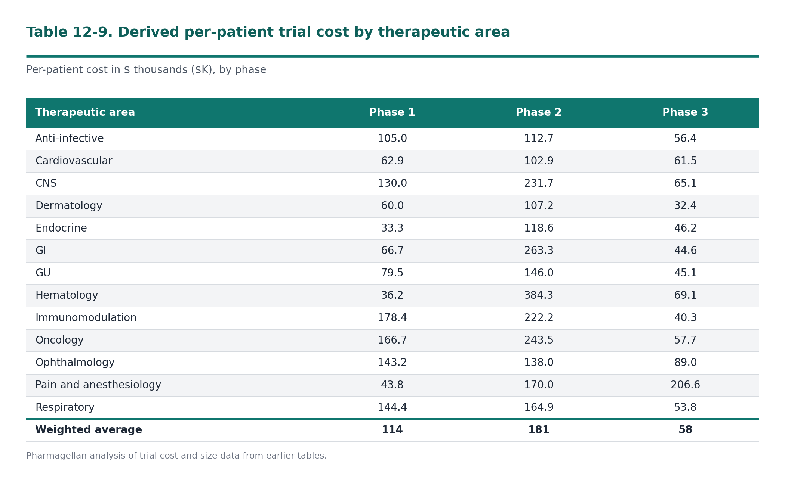
Why burn rates are what they are: per-patient trial costs average ~$114K (Phase 1) / $181K (Phase 2) / $58K (Phase 3) — Phase 2 is the most expensive per patient. Multiply by trial size to sanity-check a company's R&D spend.
Runway calculator
Where to find the numbers
10-Q / 10-K on SEC EDGAR — cash, burn, share count, risk factors. The 10-Q is quarterly; read the cash flow statement, not just the headline.
8-K — material events, including financing announcements.
Prospectus / 424B filings — the fine print on offerings: how many shares, at what price, what warrants came along.
Company presentations usually show "cash runway into [date]" — verify against the 10-Q; guidance is sometimes optimistic.
I always use fully diluted shares for market cap, and I can compute EV
I can explain how dilution destroys returns even when the thesis is right
I can compute runway from a 10-Q and map it against upcoming catalysts
I know where to find offering terms (424B) and what an ATM is
I can name the financing structures (PIPE, ATM, convertible, warrants) and where to find their terms
I've checked Form 4s and the proxy statement for a real company
Do this now
Pick a pre-revenue biotech and compute its runway: cash ÷ quarterly burn, in quarters
Find the fully diluted share count (not the basic count) in its latest 10-Q
Stage 3 quiz
Tap an answer — you get the explanation immediately. Get all 5 right to check off the quiz below.
1. Why do you always value a biotech on fully diluted shares, not the basic count?
2. Enterprise value = market cap + debt − cash. For a pre-revenue biotech, EV is useful because…
3. A company has $18M cash and burns $6M per quarter. A readout is guided 12 months out. Does the cash cover it?
4. The company "dribbles shares into the open market over time through a sales agent," with no single announcement. What financing is that?
5. A company announces a reverse split. Your read?
Stage 3 quiz: all 5 answered correctly
STAGE 4
Valuation
What the company is worth, what the market thinks it's worth, and the gap between them — that's your trade.
Price is what investors will pay today — driven by what investors expect. Value is what the company is theoretically worth based on the cash it can generate. If your estimate of value exceeds the price, there may be an investment. A great company can still be a terrible investment if expectations already exceed what it can deliver — especially short-term, where biotech prices are driven almost entirely by clinical events.
Terms and odds. Valuation tells you the terms of the bet (what probability of success, what market size, what pricing is the market assuming?) and the odds (what you make if right, what you lose if wrong). Your risk tolerance and conviction decide which odds you'll accept. A valuation is not an investment thesis — a thesis is a differentiated view (on the science, the trial design, the market) that creates attractive risk/reward.
1. Two kinds of uncertainty (the idea everything else hangs on)
Every future dollar a biotech might earn is uncertain in two different ways:
Will it happen at all? A drug either gets approved or it doesn't. This is technical uncertainty — measured by success rates, handled by multiplying cash flows by their probability.
How big will it be? If the drug launches, will it sell $200 million or $2 billion? This is estimate uncertainty — measured by ranges, handled by discounting (plus scenario analysis).
The book's discipline rule: technical risk goes in the probabilities, estimate uncertainty goes in the discount rate — never both. Double-counting risk (a success-rate haircut and a punishingly high discount rate) is the single most common valuation error, and it almost always makes assets look cheaper than they are — which sounds good until you realize you just bought something the market priced correctly and your model didn't.
The corollary that surprises people: a company's value is an average over futures, but the stock follows exactly one. "There is no trial passed with 60%; a trial is either a success or a failure." Your model computes the weighted average; the market prices the draw. Both jobs are legitimate — just don't confuse them.
The investor's question:Are you double-counting risk — haircutting both the probabilities and the discount rate on the same program?
2. The rNPV engine — the one formula behind every biotech valuation
Every professional biotech valuation, from a back-of-envelope model to a bank's fairness opinion, is a version of this:
risk-adjusted NPV = (every future cash flow × its probability, discounted to today) − what you pay now
The book's six-step procedure is literally the spreadsheet layout:
List expenses per year — trial costs, launch costs (spread each phase's cost evenly across its duration).
List revenues per year — peak sales × the sales curve (below), × the operating margin.
Net them — revenues minus expenses, year by year.
Risk-adjust — multiply each year's net cash flow by the cumulative probability it happens (Section 3).
Discount — multiply each year by 1/(1 + r)^t, where r is the discount rate and t is the year. (Concretely: at r = 15%, $100 in year 3 is worth 100 ÷ 1.15³ ≈ $66 today — money later is worth less than money now.)
Sum — the total is the project's value today. Positive means invest; negative means walk away.
One practical refinement: the investments (trial costs) are only spent if the program gets that far, so they carry the probability of reaching their phase — but they're subtracted at their decision node, not buried in the probability. The cleanest habit is to think in decision points: you only pay the Phase 3 bill if Phase 2 succeeded, so model Phase 3 cost as an optional future investment, not committed spend. Treating R&D as optional rather than committed is the biggest mechanical difference between a naive discounted cash flow (DCF) and a professional biotech model — and it systematically raises early-stage pipeline value.
The simulation version of the same engine. Instead of multiplying by probabilities, you can roll the dice: simulate a trial outcome (success with probability P), simulate a peak-sales estimate, compute which cash flows actually occur — in full, not probability-adjusted — and repeat 1,000 times. The average converges to the rNPV; the distribution is the bonus — it answers "what's the 10%-worst case?" and "what's the chance the IRR (internal rate of return — the annualized return the project earns) beats 30%?" The book's pipeline simulation of 1,000 scenarios produced exactly that kind of value-at-risk picture: mean $2.86 billion, 10% of scenarios below $2.15 billion — a $710 million value-at-risk.
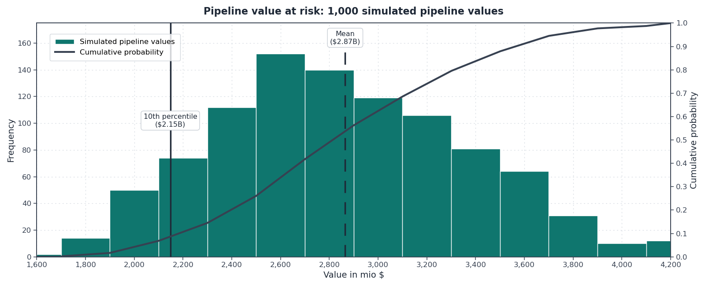
Value-at-risk for a pipeline: the histogram of 1,000 simulated pipeline values, with the cumulative curve (right axis). Mean ≈ $2.9B; the 10% worst case sits at ≈ $2.15B — a $710M value-at-risk vs. the mean.
The investor's question:Can you lay out every cash flow by year, probability-adjust each one, discount it, and say what each column means?
The core equation: probability-weighted value
For a pre-revenue biotech facing a binary event:
Expected value = (PoS × value if success) + ((1 − PoS) × value if failure)
PoS is the whole game. Historical base rates by phase — ~60% / ~36% / ~63% — are your starting anchor, adjusted up or down by the risk framework: quality of prior data, how well the biology is understood, patient selection, trial design (comparator, endpoints, power), and sponsor competence. Be deeply suspicious of anyone's PoS that isn't built from these pieces — sell-side estimates skew optimistic.
Adjusting PoS: the risk buckets
Data-driven risk: preclinical strength, early clinical signal quality. A clean dose-response increases confidence; post-hoc subgroup miracles decrease it.
Scientific risk: how well is the disease biology and the drug's mechanism understood? Validated target + predictive biomarker = lower risk.
Trial-design risk: endpoint changed from Phase 2? Different population? Underpowered? Each adds risk.
Sponsor risk: has this team run pivotal trials before? Is the company funded through readout?
3. The probability chain — why ~30% is the number that should be in your head
A Phase 2 asset's cash flows don't occur with "the success rate." They occur with the product of every rate still in front of them — and a program already in Phase 2 has survived Phase 1, so the 63% Phase-1 rate no longer applies. Using the book's benchmark rates (Ph2 42% → Ph3 75% → approval 95%):
Reach Phase 3: 42%
Reach approval: 42% × 75% ≈ 32%
Reach market: × 95% ≈ 30%
That multiplication is the single most important habit in biotech valuation: a Phase 2 program's launch cash flows only have ~30% probability. (The book's famous 19% figure is the same chain starting one step earlier — a Phase 1 program: 63% × 42% × 75% × 95%. Don't apply a rate the program has already survived.) It explains most of the gap between a company's peak-sales slide and a sober valuation. Three rules:
Use indication-specific rates, never one industry number. The book's table shows Phase-1-to-market cumulative rates ranging from ~5% (women's health) to ~28% (infections). Phase 2 is the value-killer in nearly every indication — it's the lowest rate in the chain.
Use one source for everything you're comparing. Success rates vary wildly by source (the book itself prints two inconsistent sets — flagged in the notes — precisely because mixing sources breaks comparability).
Second indications get haircuts, not the same rate. Published rates are per compound — a compound counts as "passed" if any indication succeeds. The book's example: first-indication Phase 2 at 36%, second indication conditional on the first at ~70%, giving only ~25% joint. Don't stamp 36% on every indication in your model.
The investor's question:What is this program's full-chain probability to market — from one source, for this indication?
PoS-weighted value calculator
Comps: the quick-and-dirty methods
EV / peak sales — the workhorse for early-stage biotech. Estimate peak annual sales, apply the multiple that similar approved drugs trade at.
Discount to M&A value — what would a buyer pay for this asset? Apply a discount for the risk remaining.
P/E, EV/EBITDA, EV/revenue — for commercial-stage names with actual earnings.
Comps abstract a DCF's assumptions into a single multiple — fast, but you're inheriting the market's assumptions blind. Always ask why one company deserves a higher multiple than another.
4. Peak sales — the art of not lying to yourself
Peak sales (maximum annual net sales) drive more value than any other input — and they're a guess about a market ten years out. The book's discipline:
Early-stage: use the median of comparable marketed drugs, never the mean. Averages are inflated by blockbusters. In the book's tables, blood drugs average $981M but median $302M; respiratory $646M vs $213M; cardiovascular $466M vs $145M. The book's worked case used $241M ("most-likely") instead of the $486M comparable average — a 2× swing in the headline input. Only escalate to the mean with clear blockbuster evidence.
Respect lead-time compounding. A market of $800M growing 4%/year is ~$1.09B eight years later (800 × 1.04⁸) — a "5% market share" assumption gives ~$55M at launch, not $40M, a ~37% increase. (The book prints $1.18B/$60M/50% — verified arithmetic error; it compounded ~10 years instead of 8.) Always ask whether a quoted "market size" is today's or launch year's.
Late-stage: switch to bottom-up — indication, dosing, price vs. marketed comparables.
Then multiply by the sales curve. Drugs don't jump to peak sales; they ramp. The book's standard curve rises to 100% around year 11–12 of market life, then decays with patent expiry to ~1% by year 22.
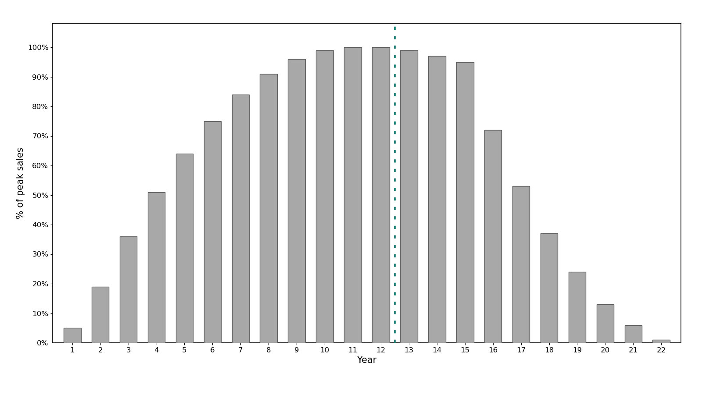
The standard sales curve: penetration ramps to 100% by year ~11–12, then declines with patent expiry to ~zero by year 22. Every drug DCF's revenue line is peak sales × this shape.
Then apply the margin. Only a fraction of sales is operating profit — the book's cases use 55–65%. Note the book's worked equivalence: a 10% change in margin has exactly the same value effect as a 10% change in sales.
The investor's question:Is this peak-sales number a median of comparables or a mean — and is that "market size" today's or launch year's?
5. The discount rate — the ladder and the lies
The discount rate is, per the book, "the most important input factor with extreme impact on the valuation results." Its honest construction has three layers:
The risk-free rate is time value (treasuries; ~3–7% in the US).
The systematic spread comes from CAPM (Capital Asset Pricing Model — the textbook formula linking risk to expected return) on an industry index.
The company-specific spread comes from the pipeline: stage mix, diversification, licensed vs. owned, disease category. More advanced pipeline → lower spread.
The ladder (empirical, from the book's comparables): diversified late-stage pipelines ≈ 12%; mid-stage ≈ 13–15%; preclinical-heavy small biotech ≈ 18–20%; marketed comparables (Actelion 15%, MedImmune 11.3%) at the low end. For your own models, 10–12% (large, diversified) to 15–17% (single-asset binary) is the defensible retail range.
Why CAPM is broken here. CAPM (Capital Asset Pricing Model — the textbook formula linking risk to expected return) only prices non-diversifiable risk — but a retail investor's biotech position is the opposite of diversified. CAPM betas (beta = the textbook measure of how a stock moves with the market) for drug developers average ~0, giving discount rates of 5–10% that understate the real risk of a concentrated pipeline. The rival MCPM (a rival 'modified' model) goes the other way — 30–40% for small biotech — and the book presents that as overstated too. The book's stance: put technical risk in explicit phase-by-phase success probabilities and keep the discount rate as near-pure time value plus a pipeline-risk spread.
The manipulation surface. Two inputs move value most while being least observable:
The growth rate. Adding 1% annual growth to the peak-sales estimate added +200% to a borderline project's value; 2% gave +500%; even on a solid $48M project, 2% growth added +67%. The book's rule: apply no growth when using comparable-based peak sales.
The discount rate. A ±10% swing (e.g., 14% → 12.6%/15.4%) moved a $47.9M valuation −28% / +36%. A five-point change can flip a project's sign.
Your audit move: when a deck or bank note shows a rosy valuation, check growth and the discount rate first. Any valuation that doesn't disclose its discount rate is non-credible.
The investor's question:Does this valuation disclose its discount rate — and is risk sitting in the probabilities or the rate, not both?
6. The abandonment option — the "flexibility" everyone misprices
Standard DCF values the project as if management makes one go/no-go decision today and then funds every phase regardless. Real management kills bad projects. Pricing that right is called real options — but forget the jargon. The mechanism is simple:
At each decision point (start of each phase, filing, launch), you only continue if the remaining value is positive.
Wherever the math says negative, you abandon — the node value is floored at zero.
Those floorings are the entire difference between a static DCF and a real-options valuation: Real-option value = static DCF value + the value of being able to quit.
The book's worked case: DCF said $2.9M; flooring two negative nodes (one at launch, one in Phase 2) lifted the value to $3.4M — +17%. The consistency proof is elegant: if you don't floor the negatives, the tree returns exactly the DCF number — so the flexibility premium is precisely loss-avoidance.
When it matters (and when it doesn't):
Borderline projects: flexibility is everything (+17% above).
Clearly in-the-money projects: ~zero (the book's $48M case: $0.02M of option value — because abandonment probability ≈ 0).
Lost causes: ~zero too.
So a deep-out-of-the-money pipeline asset isn't "worth its optionality," and a slam dunk doesn't need any. Optionality pays only at the boundary. When someone justifies paying up for a long-shot pipeline on "option value," ask which boundary the option sits on.
Two cautions from the book: biotech managements are "notoriously slow to abandon" (projects develop their own momentum), so real-world flexibility is worth less than the math — and never let anyone price a drug pipeline with Black–Scholes-style risk-neutral math. Without an actual hedge, the book calls that "valuing something you do not have."
The investor's question:Which decision nodes would you actually kill — and is the "option value" you're paying for sitting near one of them?
7. Reading a licensing deal — from headline to value
Most small biotechs' value is licensed IP, and most deal announcements are engineered to mislead. Translate the announcement into these components:
Upfront — cash at signing. Certain. Worth face value.
Milestones — paid if phases pass. Each one carries its phase's success rate; a $10M Phase 3 milestone at a 26% chance of reaching Phase 3 is worth ~$2.6M risk-adjusted, before discounting.
Royalties — a percentage of net sales, often tiered ("stacked"): e.g., 6% up to $150M, 9% above. Royalty tiers make the headline rate misleading — most scenarios for a good drug sit above the tier threshold, so the effective rate exceeds the base tier. And some contracts pay the top tier on all sales once triggered — worth materially more than the stacked version.
The bio-dollar haircut. Headline "up to $X million" totals are mostly back-loaded, low-probability milestones. The book's benchmarks (2004–06 vintage, refresh before modeling): an early-stage (lead-optimization) deal ≈ $0.1M upfront + ~$10M total milestones + ~3.25% royalties; a post–Phase IIa asset with $250M peak sales supported a $53M lower bound (biotech going alone) and $203M upper bound (the most pharma would pay before walking away). If the announced upfront is a tiny fraction of the headline total, the licensor took the risk-sharing deal — haircut the headline by the phase success rates before adding anything to your valuation.
The value-share ladder — the typical licensor/licensee split of total project value by stage:
Stage
Licensor
Licensee
Preclinical
10–20%
80–90%
IND
20–40%
60–80%
Phase IIb/III
40–60%
40–60%
Approval
60–80%
20–40%
"The more advanced the product is, the higher the share the licensor gets, because he has borne more risk." Use it as a first-pass sanity check on any deal: a preclinical licensor keeping 50% of the economics is either a great negotiator or a great story.
The simulation view. A Phase 3 license contract simulated 1,000 times produces a bimodal value distribution — a lump of abandonment outcomes and a separate success peak. That bimodality is the shape of biotech value: you're buying a draw from two humps, not a point.
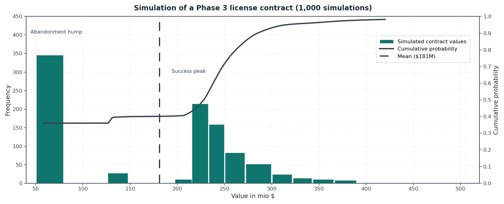
1,000 simulations of a Phase 3 license contract: a bimodal value distribution — the abandonment hump at the ~$60M upfront and the success peak near ~$230M. Biotech value is a draw from two humps, not a point.
The investor's question:How much of this deal's headline is certain upfront cash — and are the milestones probability-weighted?
8. Valuing a whole company — the sum-of-parts build-up
For a pre-revenue biotech, multiples like P/E (price-to-earnings) or EV/EBITDA (enterprise value to operating profit) are literally not computable — no earnings. The professional template is a build-up:
Equity value = Σ (project rNPVs) + technology/platform value + cash − unallocated costs − debt − taxes
Take each block in turn:
Projects — value each separately (rNPV or real options). Verify IP protection per asset.
Technology/platform — the research engine's ability to generate future projects, modeled as a feed rate: projects per year × prototype project value, minus annual R&D spend, as a perpetuity (a perpetuity = a cost that never ends, worth the annual amount divided by the discount rate). The worked example: 2 projects/year × $5M each, $7M/yr spend, 17% discount → $10.6M — the one-line bridge is (annual inflow − annual spend, with spend counted from today) ÷ discount rate: (2 × $5M − $7M × 1.17) ÷ 17% = $10.6M. The reality check: a platform producing ~1 project per 18 months at $3M/yr burn was worth ~$8M — roughly one project's value, not multiplicative magic. If a market cap implies platform value far above this formula, you're paying for science fiction.
Cash — straight from the balance sheet. (Cash is the only block that doesn't jump on trial news — remember that when converting project-level moves to share-price moves.)
Unallocated costs — CEO salary, rent, the costs no project owns. Value them as a perpetuity (a perpetuity = a cost that never ends, worth the annual amount divided by the discount rate): $1M/year at 17% is $6.9M of value destroyed. A bloated SG&A (selling, general & administrative — overhead) is a direct deduction from per-share value.
Debt and taxes — subtract the NPV of both. Young biotechs pay ~no tax now (losses carry forward), so don't model the statutory rate from day one — but do include taxes once accumulated losses are exhausted. The book's quick shortcut: 16–20% on total value; simulate for precision.
Then divide by fully diluted shares — including ESOPs (employee stock-option plans), convertibles (debt that turns into shares), and ratchet overhang (anti-dilution clauses that can flood new shares). A per-share fair value on basic shares is a fantasy.
Feed rate vs. terminal value. Sell-side DCFs often hide most of their value in a terminal value that assumes constant cash flows "to infinity" — applied while a blockbuster is still on the market, it implicitly assumes the company replaces it with an equally powerful product; applied after patent expiry, it comes out far too low. The feed rate is the honest recast: what pipeline productivity does this terminal value imply? Test it against the company's actual output (count new INDs over the last 3–5 years). If the model needs three blockbusters a year from a shop that produced one in a decade, the valuation is fantasy.
The terminal-value trap: assuming constant cash flows "to infinity" misleads badly — applied while a blockbuster still drives revenues (point A) it assumes an equally powerful replacement; applied after expiry (point B) it comes out far too low. The book's answer is the feed rate instead.
The investor's question:What pipeline productivity does this valuation's terminal value imply — and does the company's actual IND output support it?
DCF intuition (without the spreadsheet trauma)
A full DCF is the most thorough method and the most assumption-laden. The logic, stripped down:
Build revenue bottom-up: patients × diagnosis/treatment rate × market share × price. (Not top-down TAM theater — start from the actual treatable population.)
Ramp to peak sales over ~6 years typical, then model loss of exclusivity (~13 years post-launch average; generics can erase 90% of small-molecule volume in a year, biosimilars erode biologics more slowly).
Subtract costs: COGS (~10–15% of revenue for high-priced biologics), SG&A, and crucially the R&D still to come (~$4M / $13M / $40M typical per Phase 1/2/3 program).
Risk-adjust the cash flows by PoS at each remaining stage.
Discount to present value: ~10% for large pharma, 15–20% for small biotech. Warning: if you've already risk-adjusted the cash flows, don't also use a sky-high discount rate — that's double-counting the same risk.
The base case for modeling: ~6 years from launch to peak sales, with 50% of peak reached just before year 3. The bands show how wide reality gets.
For a beginner, the PoS-weighted expected value and a comps cross-check will take you 80% of the way. Build the full DCF when a position gets serious — the discipline of the revenue build (patients × share × price) is where most bad theses die, because the numbers won't survive contact with epidemiology.
9. The binary — how trial news moves the stock
Now the payoff of the whole module: the arithmetic of the readout.
When uncertainty resolves, the success rate becomes 100% or 0%. The fair value jump on success is:
jump = (1 − p) / p — where p is the pre-readout success probability
A 10%-PoS readout succeeding should reprice the asset 9× (from 10% of value to 100%).
Failure zeroes that asset's risk-adjusted value (−100% of the asset).
Translate to the company level: multiply by the project's share of company value, after tax, net of cash (cash doesn't jump). Then compare the implied move to what's actually priced in.
Real precedents (the book's market examples):
Actelion, April 2001: lead drug Veletri fails its Phase 3 primary endpoint → CHF 145 (Swiss francs) → CHF 55, −62% in one day. Three years later, Veletri development is stopped for futility → −24% — much smaller, because the second lead (Tracleer) now drove value and expectations had already reset. The second shock is never like the first — don't anchor on it.
Genentech, 2003–2004: Avastin Phase 3 in metastatic colorectal cancer → +45%; breast cancer interim → +25%; lung cancer interim → +18%. Note the descending pattern: each successive win reprices a smaller residual uncertainty.
Genentech's share price, 2000–2006, with Phase 3 readouts annotated — metastatic colorectal, metastatic breast, and non-small-cell lung cancer. Real binary-event stock moves: each win repriced the shares on shrinking residual uncertainty.
The book's schematic of the same idea shows the two things that move a biotech's value off its average path: trial results (the jump when the success rate resolves to 100% or the project goes to zero) and discount-rate changes (a diversified pipeline or an IPO lowers the cost of capital, causing an immediate upward revaluation — multiple expansion with no pipeline news at all).
How company value develops: the solid line jumps when trial results resolve uncertainty (success rate → 100%); the dashed line jumps when the discount rate falls (e.g., pipeline diversification or an IPO). Between jumps, value grows at roughly the discount rate.
The investor's question:At this pre-readout PoS, is the priced-in move fair — or is the market betting on the wrong jump?
Loss of exclusivity — modeling the cliff
Every revenue curve ends at loss of exclusivity (LoE), and the shape of the fall depends on the modality:
Small molecules: the classic cliff. First generics can take 80–90% of volume within a year of Paragraph IV-driven entry (the Lipitor and Plavix collapses in the Ng module are the textbook cases). Model a steep 2-year erosion.
Biologics: biosimilar erosion is gradual — discounts are shallower, interchangeability is rare, and physician/patient stickiness is real. Model a multi-year fade, not a cliff.
What extends the runway: new formulations, new indications with their own exclusivity, pediatric extensions (+6 months), and follow-on patents — each buys time, but verify each in the Orange Book rather than trusting the slide deck.
The investor's question:When does each layer of protection expire, and is your terminal value assuming revenue that the patent cliff has already scheduled for demolition?
Orphan economics: the exclusivity premium
Rare-disease drugs run on a different economic bargain. Development costs are fixed while the patient pool is tiny, so regulators buy the math with longer exclusivity: 7 years of market exclusivity in the US under the Orphan Drug Act (diseases with under 200,000 US patients) and 10 years in the EU (prevalence at or below 5 per 10,000), plus fee waivers, tax credits, and research grants on the US side. That exclusivity clock runs independently of patents — and for many orphan franchises, it's the real moat.
The other side of the bargain is pricing power with almost no volume: the price per patient has to carry the entire R&D bill divided across a few thousand treated patients. This is the legitimate version of "price is what the market bears" from #prasad-s6 — but the exclusivity is a countdown, not a moat: when it lapses, so does the model. And payers notice: a drug treating 500 patients at a sky-high price draws scrutiny a mass-market drug never gets, and some countries negotiate or restrict on exactly that basis.
The investor's question:Which exclusivities (orphan + patents) actually cover the revenue, and when does each lapse? Is the valuation pricing a perpetual monopoly on a drug whose legal monopoly has a printed expiry date?
Cross-link: read this as the companion to #gap-loe and the pricing logic of #prasad-s6 — orphan exclusivity is the same "finite window" idea, except in rare disease the entire business model is the window.
The IRA: Medicare price negotiation
The Inflation Reduction Act (2022) gave Medicare the power to negotiate prices for selected high-spend drugs — a structural haircut on out-year cash flows that didn't exist when most textbooks were written. The mechanics that matter for modeling:
Which drugs: selected from the highest Medicare spenders with no generic or biosimilar competition — small molecules become eligible 9 years after approval, biologics after 13 years.
The "negotiation": the law sets a ceiling ("maximum fair price") and an excise tax for non-compliance — in practice it's a mandated discount, not a negotiation between equals.
What to model: for any drug with large Medicare exposure approaching its eligibility window, haircut post-window revenue rather than assuming the historical pricing trajectory continues. The IRA doesn't change the binary — it changes the value-if-success side of your expected-value math.
The investor's question:What share of this drug's projected revenue is Medicare, and does the launch curve cross the negotiation-eligibility window before loss of exclusivity?
6. Pricing, value, and the investor's edge
The economics of oncology are extreme — and they cut both ways for investors:
Launch prices rose from a few hundred dollars/month (1970s) to ~$10,000/month (~2020), with essentially zero correlation between price and magnitude of benefit. The median approved cancer drug extends life by 2.1 months (OS) / 2.5 months (PFS); only 4% exceed 6 months PFS.
The R&D-cost debate: Prasad's SEC-filing analysis put the cost per drug at $648M ($757M at 7% cost of capital) vs. the industry's $2.6B figure — while the 10 single-drug companies studied earned $67B on $9.1B of R&D. Price is not cost recovery; it's what the market bears.
Value frameworks exist (QALYs — quality-adjusted life years, one QALY = one year of healthy life; $200K/QALY as a permissive threshold) — drugs routinely launch at $470K–$900K/QALY.
Median monthly launch price of new anticancer drugs vs. median US household income, 1975–2014: drug prices cross above household income around 2000 and reach ~$10,000/month by 2010–2014 while incomes flatline near $4,300.
Why this matters for valuation: oncology supports the highest prices in medicine because payers pay for hope and regulators approve on surrogates — but that same structure is the regulatory risk. A portfolio of surrogate-approved drugs with unconfirmed OS is a portfolio of assets the FDA could revisit. Conversely, a drug with a large, early OS separation (bortezomib: death risk 22% → 13% at 16 months; rituximab + CHOP: 2-year OS 57% → 70%) is the durable kind of value — "a true advance shows a large, early survival gain."
The investor's question:Keep a mental note for Stage 4 (valuation): what fraction of this company's value rests on unconfirmed surrogate approvals? Price the regulatory risk alongside the revenue. And does the efficacy look like bortezomib/rituximab (large, early OS separation) or like the median (2 months, surrogate-only)?
Payer reality: why list price isn't revenue
A drug's value isn't its sticker price — it's what payers actually pay after the access machinery takes its cut:
Formulary tiers decide patient cost-sharing. Tier 3+ specialty placement with high coinsurance kills uptake no matter how good the data is.
Prior authorization and step therapy ("try the cheap drug first") slow and shrink the treated population — model a ramp, not a step function.
The gross-to-net bubble: rebates to PBMs and payers mean net realized price is often far below list (WAC). For your revenue build, net price assumptions matter more than the announced price.
Medicare Part D covers self-administered drugs; cost-sharing design drives abandonment at the pharmacy counter — a meaningful fraction of prescriptions are never picked up when out-of-pocket costs are high.
ICER assessments (Institute for Clinical and Economic Review) don't set prices, but payers cite them in coverage fights — a negative ICER report is a leading indicator of access restrictions.
The investor's question:Is this a "great drug nobody can get" — and does your peak-sales build use net price with a realistic access-constrained ramp?
10. The ten-minute valuation audit
Before you trust any biotech valuation — yours, a bank's, a company's — run this:
Discount rate stated? If not disclosed, it's non-credible. Is it on the ladder (12–20% by pipeline risk), or is risk double-counted (high rate plus success-rate haircuts)?
Growth rate checked? Is any growth assumed on peak sales? The book's rule: none with comparable-based estimates. One percent added +200% to a borderline project.
Peak sales source? Median of comparables (early) or bottom-up (late)? Mean used without blockbuster evidence = inflated.
Success rates stated, single source, indication-specific? Phase-2 cash flows at ~30% cumulative, not 42%. Second indications haircut, not repeated.
R&D modeled as optional? Phase costs gated on prior success, floored at zero — or committed spend (which understates early-stage value)?
Deal headlines haircut? Upfront vs. bio-dollars; milestones probability-weighted; royalty tiers modeled, not averaged.
Platform value tested? Feed rate × prototype value vs. the implied terminal value — does the company's actual IND output support it?
Every tradeable event falls into a few types. Learn to sort them by date quality:
Hard dates — PDUFA dates, AdCom meetings, conference presentations. On the calendar, tradeable.
Guidance windows — "topline H1 2027," "BLA submission Q4." Company-guided, no day. The window is real; the exact date isn't.
Inferred dates — derived from enrollment completion + trial duration, historical patterns. Honest estimates, flagged as such.
Price the timing, not just the outcome: a readout guided for "Q4" that slips to January can kill an options position even if the data is eventually good. The date is part of the trade.
Anatomy of a binary trade
The run-up: stocks often drift up into a catalyst as anticipation builds. Chasing the run-up is paying for optimism — know what the market already expects (the "priced-in" bar).
The event: data hits. The move depends on results versus expectations, not versus zero. Great data can sell off if perfection was priced in ("sell the news").
IV crush: options are priced for the expected move. After the event, implied volatility collapses — so even if you pick the direction right, overpaying for the option can still lose money. Never buy event options without understanding what move is priced in.
What the options are actually pricing in
The market tells you exactly what move it expects. The formula:
Expected move ≈ stock price × IV × √(days to expiry / 365), where IV is implied volatility as a decimal.
Real example: a $2.42 stock with IV around 150% and 30 days to expiry. 2.42 × 1.50 × √(30/365) ≈ 2.42 × 1.50 × 0.287 ≈ $1.04, or ±43%.
The market is pricing a ±43% move. If the readout moves the stock 30% in your direction, a long call still loses money. Your thesis has to clear the priced-in move — not just be "right." The hurdle isn't zero; it's the expected move.
Run this before every options trade. If your realistic bull case doesn't beat the priced-in move, the trade is a donation.
Pick the structure, then the expiry — in that order
Vertical spreads are the workhorse. Buy one strike, sell a further-out strike in the same expiry. They're cheaper than outright calls/puts because you're selling some of that inflated IV too — and the risk stays defined. Upside is capped, but for binaries that's usually a fine trade: you're playing a specific move, not a moonshot.
Long calls/puts are lottery tickets. Simple, defined-risk — but you pay full IV and full theta decay. Only sensible at small size, as a pure directional bet.
Never sell naked premium into a binary. Collecting a few dollars while exposed to a 200% overnight gap is picking up pennies in front of a steamroller.
The expiry rule: expiry must clear the latest plausible event date — not the guided date, the latest plausible one. A "November readout" that slips to December turns November options into wallpaper even if your thesis was perfect. When in doubt, go one expiry further out; the extra theta is cheaper than a total loss.
Check liquidity before planning anything. Small-biotech options chains are often wide and thin — bid/ask spreads of 30–40% with open interest in the hundreds. You can donate a fifth of the position just getting in and out. Check open interest, volume, and bid-ask width on your specific strikes first. Some small biotechs have no listed options at all — never build a strategy around options that don't exist.
Position sizing: the part that actually decides your returns
Biotech binaries are fat-tailed — you will be wrong, sometimes spectacularly. Sizing is what keeps a wrong thesis from becoming a portfolio event:
Risk a fixed fraction per idea (e.g. 1–2% of the account on any single binary). Size the position so the maximum loss — not the investment — equals that fraction.
Defined-risk instruments only for binary exposure: long calls/puts or vertical spreads, where the most you can lose is the premium paid. No naked short options, no margin-amplified binaries.
Stage your entries. You don't have to be full-size on day one — build as the thesis confirms and the timing tightens.
Example: on a $10,000 account risking 2% ($200) per binary, a $4.00 option contract ($400/contract) is already too big for one contract — you'd need a cheaper structure or a smaller fraction. Do this math before every trade.
Position-size calculator (defined-risk)
The Kelly criterion — a ceiling, not a target
There's a formula for the "mathematically optimal" bet size, called the Kelly criterion. It answers: what fraction of my account maximizes long-run growth, given my edge?
The formula: f* = (bp − q) / b, where p is your win probability, q = 1 − p, and b is the net odds (profit per unit staked).
Example: a readout you believe is 60% to succeed, paying 2:1 on success (b = 2). f* = (2 × 0.6 − 0.4) / 2 = 0.40 = 40%. That's the math-optimal size — and it should scare you, because Kelly assumes you know p exactly and can stomach brutal drawdowns. You don't know p exactly. Not even close.
How to actually use it: as a ceiling check. If your planned size exceeds even generous-assumption Kelly, you're oversized. Practitioners use half-Kelly or quarter-Kelly — deliberately betting a fraction of the formula's answer in exchange for a much smoother ride.
The honest version for biotech: your p is always a guess. So take the Kelly number, halve it, and then ask whether you still believe it. Size below what the formula says.
Losses hurt more than gains help
A 50% gain followed by a 50% loss doesn't leave you even — it leaves you down 25%. To recover from any drawdown, you need a bigger gain than the loss:
Lose 10% → need +11% to recover. Lose 20% → need +25%.
Lose 30% → need +43%. Lose 40% → need +67%.
Lose 50% → need +100%. You have to double your money just to get back to even.
This is why the loss-to-floor rule exists, and why "I'll make it back on the next one" is the most expensive sentence in trading. A string of small, floored losses is infinitely preferable to one un-sized disaster.
Your five bets might be one bet
Five biotech binaries aren't five independent risks. On a risk-off day, an XBI drawdown, or an FDA mood shift, they fall together.
Size for stress correlation, not calm correlation. In calm markets your names look idiosyncratic; in stress they correlate toward 1. Add up your binary exposure as if they move together — because when it matters, they do.
Cap total binary-event exposure: a common rule is no more than ~25–35% of the book facing a binary inside the same two-week window.
Don't let two positions share the same failure mode — same FDA division question, same mechanism class, same readout week — without counting them as one position.
Cash is a position. Holding dry powder into binary weeks is a decision, not indecision.
Two styles — pick yours deliberately
Buy-and-hold through the binary: build a fundamental thesis (science + trial design + PoS + valuation), take equity, hold through the readout. Fewer decisions, full exposure to the move, requires real conviction and correct financing analysis.
Trade around the binary: play timing and volatility — run-ups, defined-risk options into events, disciplined exits. More active, more ways to be right and wrong; position sizing is everything.
Reading a takeout
Biotech M&A is a parallel path to value — sometimes the binary resolves as an acquisition, not a readout:
Premiums for clinical-stage biotech typically run well above the unaffected price — but "typical" covers a wide range, and distressed sellers get far less. The premium reflects scarcity of the asset and competitive tension more than any formula.
CVRs (contingent value rights) bridge valuation gaps: part of the deal price is paid only if a milestone hits (approval, sales threshold). A CVR-heavy deal tells you the buyer and seller disagreed about the binary — price the CVR with your own PoS, not the headline deal value.
Deal structure matters: all-cash is clean; stock deals expose you to the acquirer's price; tender offers close faster than mergers.
What kills deals: emerging safety signals, financing desperation (buyers wait for the raise), and IP weakness discovered in diligence.
The investor's question:Is this company a plausible takeout target — scarce asset, clean IP, big-pharma-shaped hole in the pipeline — or is "takeout candidate" just message-board hope?
What not to do: don't trade the commercial launch phase on a clinical thesis — once a drug is approved, it's an execution story, different game. Don't average down into a broken thesis. And never put on a binary position you haven't sized for the failure case first.
Shorting biotech (advanced, handle with care)
Shorting biotech is dangerous: upside capped at 100%, downside unlimited, low floats, violent squeezes on good news. If you ever short, the rules are strict:
Short a specific catalyst, never "valuation." Stocks can stay irrational longer than you can stay solvent.
The catalyst needs a clear, near-term timeframe — take the position as close to it as possible.
Risk/reward must be clearly skewed downward and you need a pre-defined exit. A failed-trial short where success wasn't priced in can lose 3–4× the position.
I sort every catalyst by date quality (hard / guidance / inferred) before trading it
I can explain IV crush and why direction-right can still mean money-lost
I size every binary by max loss as a fixed fraction of the account
I only use defined-risk structures for binary exposure
I've picked a primary style (through vs around the binary) and know what it demands
I can explain CVRs and when takeout is a plausible path vs message-board hope
Do this now
For an upcoming binary, compare the options-implied move against the move you'd expect from the (1−p)/p jump
Size a position max-loss-first: 1% of your account on a defined-risk structure, on paper
Run the expected-move formula on a real options chain and check whether your thesis clears the priced-in move
Write a pre-trade plan for a hypothetical binary: entry trigger, dip-buy level, pop-branch plan, and exit — both branches, before the event
Exit rules: broken thesis vs played-out thesis
Most beginners plan their entries and improvise their exits. Do the opposite:
Thesis broken → exit. Failed primary endpoint, safety signal, clinical hold, guidance pulled — the reason you owned it is gone. Never average down into a broken thesis. Adding to a loser doesn't lower your risk; it concentrates it.
Thesis played out → reassess from the new facts. Data landed, good or bad — the position's job is done. Don't auto-hold a winner into the next binary by inertia, and don't anchor a loser to your entry price. Fresh thesis or no position.
Time stop: a guidance window that slips twice gets re-sized or cut. Hope is not a catalyst, and every slip rewrites the expected-move math against you.
Pre-commit both branches before the event. Write down: what you'll do if it gaps up (take some? hold for the conference call?), what you'll do if it gaps down (is there a dip-buy level where the risk/reward flips, or is the thesis dead?), and what kills the trade entirely. Decide this when you're calm, because you won't be calm at 9:31 a.m. on data day.
The pre-trade checklist
Run this before every binary position. If any answer is "I don't know," that's the next hour of work:
Date quality: hard or guidance? Does my expiry clear the latest plausible event date?
Liquidity: open interest, volume, bid-ask — can I get in and out without donating 20% to the spread?
Expected move: does my structure profit at a realistic outcome, or does it need a bigger move than the market already prices in?
Loss-to-floor: if this goes to zero overnight, is the account intact?
Correlation: does this share a failure mode or catalyst window with an existing position?
Kill scenarios named: IV crush, event delayed past expiry, gap against me — which one gets me here?
Both branches pre-committed in writing: dip-buy level, pop-branch plan, exit triggers
Stage 5 quiz
Tap an answer — you get the explanation immediately. Get all 4 right to check off the quiz below.
1. You bought calls into a readout. The data was good, the stock went up — and you still lost money. What happened?
2. You risk 2% of a $10,000 account on a binary. Your max loss per trade is…
3. Which of these is a hard date?
4. A takeover bid is mostly CVRs — payments only if milestones hit. What does that tell you?
Stage 5 quiz: all 4 answered correctly
STAGE 6
The Research Desk
Where information comes from, how to rank it, and how to organize it.
ClinicalTrials.gov — the registered protocol: endpoints, population, size. Your lie detector for endpoint switching.
Academic papers & conference presentations — the actual data, peer-reviewed or presented.
Company materials — press releases, decks, earnings calls. Useful, but marketing until corroborated.
Trade press — STAT, Endpoints, BioSpace, Fierce. Good for speed; verify against the above.
The discipline: separate every claim into FACT (sourced, verified), INTERPRETATION (your read of the facts), GAP (what you don't know but need), and UNVERIFIED (single weak source, not yet corroborated). Never let an interpretation wear a fact's clothes — that's how bad theses survive contact with reality.
1. The three preliminary questions (the 60-second trash test)
Before reading any paper a company cites, Greenhalgh's "science of trashing papers" starts with three questions:
Why was the study done, and what clinical question was it asking? (If you can't state the question in one sentence, the paper can't answer it.)
What type of study was it? (RCT (strongest) > cohort > case-control > cross-sectional > case report (weakest) — strength = how well the design rules out bias.)
Was the study big enough and long enough to answer the question?
If a company press release can't survive question 1 — if the "question" is actually "can we get a p-value under 0.05 on something" — stop reading and discount everything that follows.
2. The sponsor-manipulation screen (Box 6.1)
Greenhalgh's "Ten tips for the pharmaceutical industry: how to present your product in the best light" — read it as a red-flag checklist for company decks and press releases:
Invent a plausible mechanism and find a surrogate endpoint the drug moves.
Design the trial population, features, and length for maximum possible response.
Compare only with placebo — or dose the competitor sub-therapeutically.
Pool pilot-study patients into the pivotal figures so n looks bigger.
Omit trials with fatalities or serious adverse reactions; don't publish them.
Maximize visual impact: unlabeled axes, no CIs, no individual patient data.
Master the hanging comparative ("better" — than what?).
Invert the evidence hierarchy — anecdote over RCTs.
Recruit local opinion leaders; hand out starter packs.
Present a cost-effectiveness analysis showing the expensive product "works out cheaper."
The investor's question:Run every company readout against this list. Flags 1, 3, 4, and 6 are directly checkable from the press release and ClinicalTrials.gov.
3. The negative-but-non-definitive rule (reading failed trials honestly)
A "negative" trial (CI crosses zero) is not necessarily a dead drug. The disciplined read:
Look at the upper 95% confidence limit — there is only a ~1-in-40 chance the true effect is that large or larger.
Ask: would that level of difference be clinically significant?
If no → the trial is negative AND definitive (the drug is dead on this question).
If yes → negative but non-definitive (further study could still matter).
Worked example: heart-failure trial, 33% vs 38% mortality, difference 5%, 95% CI −1.2% to +12%. "Negative" by the dichotomy rule — but the upper bound (+12%) is clinically huge, so the trial is non-definitive. Conversely, a mega-trial with CI +0.1% to +0.8% is "positive" yet commercially meaningless.
Two companion rules from the same chapter:
Unusual statistical tests on standard data = smell a rat. Most basic clinical studies need about a dozen standard tests; an unpronounceable test with no cited reference is a manipulation flag.
Per-protocol "efficacy" analyses are cohort studies in disguise. Once a paper switches from intention-to-treat to per-protocol, randomization's protection is forfeited — treat the claim as observational evidence, however large the n.
The investor's question:After a failed readout, check the upper CI bound before writing the program off — and check the lower bound before writing it up. A "positive" mega-trial with a trivial CI is the mirror image of a "negative" small trial with a wide one.
The toolkit, tiered
The full research arsenal is enormous. Start with tier 1; add tier 2 as you need it.
Bookshelf: the two Pharmagellan guides, Intuitive Biostatistics, Basic PK/PD, Fundamentals of Clinical Trials, then Rick Ng's Drugs: From Discovery to Approval, the skepticism shelf and the tomes (see Stage 0).
4. Evaluating diagnostics companies (the 2×2 toolkit)
Diagnostics is its own analytical discipline — none of the earlier books covered it. The core is the 2×2 table (a = true positives, b = false positives, c = false negatives, d = true negatives):
Measure
Formula
Answers
Sensitivity
a/(a+c)
How good at finding the sick?
Specificity
d/(b+d)
How good at clearing the healthy?
PPV
a/(a+b)
Positive result → actually sick?
NPV
d/(c+d)
Negative result → actually healthy?
Accuracy
(a+d)/total
Proportion correct overall
LR+
sens/(1−spec)
How much a positive result raises the odds
Three rules that deflate most diagnostics pitches:
Sens/spec describe the test; PPV/NPV describe the patient — and PPV/NPV are prevalence-driven. A test with 99.3% specificity can still have a 46% PPV when the disease is rare (the urine-glucose example: 97.2% accuracy, 22.2% sensitivity — "more likely to mislead than assist"). A good diagnostic test is not necessarily a good screening test.
Accuracy is a trap in rare diseases. 97% accuracy with 22% sensitivity means the test is "accurate" because almost everyone is healthy — it misses four-fifths of the sick.
Likelihood ratios are the honest currency. LR+ = sens/(1−spec) multiplies the pre-test odds. Worked: 5% pre-test probability × LR 3 → ~14% post-test. For continuous tests with no clean cutoff (PSA's (prostate-specific antigen) "grey zone"), build 2×2 tables at multiple cutoffs and read the ladder of LRs — "there is no PSA value that gives a particularly high likelihood ratio."
The ten-question validation screen (abridged for investors): (1) Would a positive result change the treatment plan? (2) Was it compared against a true gold standard — one the test itself doesn't define? (3) Did the study span the full spectrum of patients (not just textbook cases)? (4) Did everyone get both the new test and the gold standard (no verification bias)? (5) Were readers blinded? (6) Is it reproducible (kappa — a statistic measuring whether two readers agree beyond chance)? (7) Are the features actually good enough for the clinical stakes? (8) Are there CIs on sens/spec? (9) Is the cutoff justified? (10) Where does the test sit in the diagnostic sequence?
And the validation ladder for clinical prediction rules / AI diagnostics: derivation → external validation in a different population → impact RCT measuring patient outcomes. Most AI-diagnostics companies never climb past tier 1.
The investor's question:For any Dx pitch: show me the 2×2, the prevalence, the LR+, and which validation tier you're on. A 99%-accurate test for a 1%-prevalence disease is a coin flip with marketing.
5. Meta-analysis literacy (reading pooled evidence)
Forest plots: each trial is a blob (sized by weight) with a 95% CI; the vertical line is no effect; the diamond is the pooled estimate. A non-significant trial still contributes weight — and a diamond that barely clears the line on the strength of small positive trials is fragile.
The DICE paper (Counsell et al.): simulated meta-analysis of dice-rolled "stroke therapies" — by excluding negative trials (publication bias), carving a post-hoc subgroup ("red dice looked harmful"), and making "methodological quality" exclusions, a null result became "highly significant." The investor's test: would this meta-analysis survive worst-case assumptions — unpublished negatives included, dropouts as failures?
The aprotinin case: the benefit reached significance after 12 trials (1992) — but nobody meta-analyzed, so 52 further trials were run, "scientifically unnecessary and hence unethical." The portable question: did the prior evidence already settle this? — asked of every "pivotal" trial a company runs.
Heterogeneity: if the trials disagree with each other more than chance allows, the pooled diamond is a fiction — ask what explains the differences before trusting the average.
The investor's question:When a company cites a meta-analysis: who funded it, were unpublished trials sought, do the results survive the DICE test, and is there unexplained heterogeneity?
6. Genetics for target evaluation (GWAS and Mendelian randomization)
The PCSK9 template: GWAS (genome-wide association study — scanning thousands of people's DNA for variants linked to a trait) found variants in PCSK9 linked to LDL cholesterol → a research program to reproduce the effect → alirocumab/evolocumab. "A protein whose malign function would never have been discovered if it hadn't been for the GWAS that trawled thousands of SNPs (single-nucleotide polymorphisms — one-letter DNA differences)." This is what validated human-genetics target discovery looks like.
Mendelian randomization: genes are randomized at conception — so a genetic variant that raises a biomarker is a natural randomized trial of that biomarker's causal effect. The investor use: does the company's claimed causal pathway survive MR, or is it observational correlation?
The polygenic-score reality check: Khera 2018 found 3.5% of people at >3× type 2 diabetes (T2D) risk by polygenic score — but Greenhalgh's counterpoint: for common polygenic diseases, SNPs rarely add more than a good clinical history (body mass index (BMI) 35 + diabetic parent beats the score). Don't let a genomics company sell you a risk score that a questionnaire beats.
The ten-question genetics screen (abridged): winner's curse (first GWAS hit overestimates the effect), linkage-disequilibrium tagging (the associated SNP may not be the causal one), European-ancestry bias (does it transfer?), and missing heritability (how much variance is actually explained?).
The investor's question:For a genetics-driven thesis: PCSK9 or questionnaire? Is there MR evidence for causality, or just association? Has the winner's curse been discounted?
7. Searching the literature (the research-desk skill)
The highest-ROI chapter for the research desk (primer Stage 6):
Start with synthesized sources (guidelines, systematic reviews) before primary studies — don't drown in the jungle.
Citation chaining: one good paper's reference list + "cited by" is worth more than ten keyword searches.
Grey literature matters: unpublished industry files, conference abstracts, regulatory documents — the DICE paper is what happens when you skip them.
Ask a librarian. Genuinely — medical librarians are the most underused alpha source in retail investing.
The investor's question:For your next ticker: can you find the pivotal trial's methods section and the regulator's review documents within 20 minutes?
Companion sections: the statistics module (traps 1–14, CIs, p-values), the trial-design module (CONSORT, ITT, randomization), the oncology section (surrogate validation).
Build your watchlist and catalyst calendar
A watchlist isn't a list of stocks you like — it's a list of upcoming events you've done the work on. For each name: the drug, the trial, the endpoint, the date (with quality tag), your PoS, what the market expects, and your max-loss-sized position if you take it. Review it weekly; events slip, guidance changes, and a calendar you don't maintain is a calendar that lies to you.
SEC filings beyond the 10-Q
Stage 3 covered the 10-Q/10-K/8-K. Four more filings complete the literacy set:
DEF 14A (proxy statement): executive comp, board composition, related-party transactions, say-on-pay votes. Read it before trusting management.
S-1: the IPO registration — the deepest single document on a young company (business, risk factors, financials, selling shareholders). S-3: the shelf registration for follow-on sales.
13D / 13G: anyone crossing 5% beneficial ownership must disclose. 13D = active intent (possible activist); 13G = passive. New 13Ds from specialist biotech funds are worth a look.
Form 4: insider buys/sells within two business days (see the management section in Stage 3 for how to read them).
The investor's question:For any name you own: have you read the proxy, checked 13D/G for smart-money accumulation, and scanned recent Form 4s?
I follow the evidence order and can name all six tiers
I separate FACT / INTERPRETATION / GAP / UNVERIFIED in my notes
I've set up the Tier 1 toolkit and run a real company through it
I maintain a watchlist organized by catalyst date, not by ticker affection
I've run the three-question trash test and the sponsor-manipulation screen on a real paper
I can read the key SEC filings beyond the 10-Q (proxy, S-1/S-3, 13D/G, Form 4)
Do this now
Pull the latest 10-Q of a company you follow and find cash + quarterly burn in under five minutes
Take the last press release you read and label one FACT, one INTERPRETATION, and one GAP
Stage 6 quiz
Tap an answer — you get the explanation immediately. Get all 4 right to check off the quiz below.
1. A press release and the 10-Q disagree on the cash number. Which wins?
2. "Management has a strong track record" — that's your read of their history. Which bucket does it go in?
3. Before reading any paper a company cites, the 60-second trash test starts with…
4. A diagnostics company brags about a 99%-accurate test for a disease affecting 1% of people. Your response?
Stage 6 quiz: all 4 answered correctly
FINAL
Capstone: Paper-Trade a Binary
Prove it on paper before real money is involved.
Pick one upcoming binary — a Phase 3 readout or a PDUFA date 2–6 months out — and run the full gauntlet on paper:
Map it (Stage 1): drug, phase, indication, what approval requires.
Read it (Stage 2): pull the CT.gov entry, prior-phase data, and the latest press release. List three spin attempts and three red flags you checked.
Fund it (Stage 3): cash, burn, runway — does money cover the readout?
Value it (Stage 4): PoS with reasoning, value-if-success, value-if-fail, expected value vs current price.
Trade it (Stage 5): date quality, what's priced in, defined-risk structure, max-loss sizing.
Journal it: write the thesis down before the event — date, PoS, expected move both ways, exit plan. After the readout, grade yourself: was the process right even if the outcome wasn't?
Do this three times on paper. If your process is sound and your journaling is honest, you're ready to size real positions. If you keep skipping steps, the market will charge you tuition — this primer exists so you pay it in effort instead of dollars.
I've completed one full paper binary, journal included
I've completed three — and reviewed what my process got right and wrong
I've run the five-minute readout checklist (Stage 2) on a real trial readout
I've run the ten-minute protocol checklist (Stage 1) against a ClinicalTrials.gov entry and press release
I've run the ten-minute valuation audit (Stage 4) on a real company valuation
Do this now
Write your first paper-trade journal entry: date, PoS, expected move both ways, exit plan — before the event
Schedule the post-readout review now, before the binary resolves
Capstone quiz
Tap an answer — you get the explanation immediately. Get all 3 right to check off the quiz below.
1. Before the binary event, your journal must contain…
2. After the readout, how do you grade yourself?
3. How many full paper binaries before real money is involved?